Placed Horses
Excommunicate, 2013, 15.3 Bay Mare--retained to race
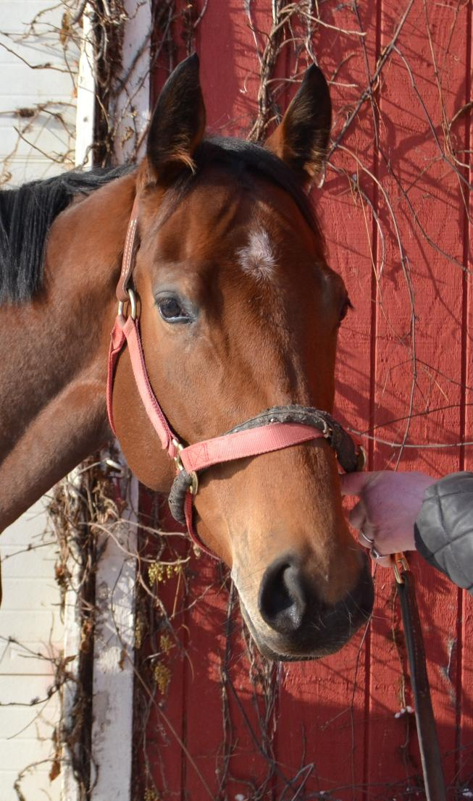
Excommunicate is a half sister to the fabulous Frost Delay that who was quickly snapped up last week. There is just as much to love about this sweet girl so we hope she will find a home equally as fast. Her trainer reports that Excommunicate is retiring completely sound and is looking for a new home because her owner can no longer afford racehorses. When we arrived, Excommunicate was turned out outside with a friend, which her trainer reports she loves. She has been turned out alone and with a quiet buddy. She walked quietly and carefully in being respectful of her handler on very icy ground. Her trainer reported that she has nice ground manners and no vices. We observed her standing quietly while being groomed in her stall. Her trainer reports that Excommunicate really bonds with her “person” and she would love to see her go to a home with someone looking to keep her and bond with her. She says she is a very athletic mare and is good to ride, although can be strong when not in regular work. She thinks this mare has upper level potential. She was very quiet for her pictures outside in the bitter cold and walked carefully on the ice. Due to the ice, we had limited space to get a jog video, but we think she showed nice movement and seemed to have a big stride if she was able to fully trot out. She had recently pulled a front shoe and was a bit foot tender on that foot on the icy ground. Her trainer reports she She is lightly raced with 10 starts (2 seconds and 1 third in those starts) but is RRP 2019 eligible. She is by Include out of a Prime Timber mare. Price: $1000neg Contact: Dorothy Gentner 518-522-0229
As always, a pre-purchase veterinary exam is recommended.
Protect the King, 2014, 16h Dark Bay Mare
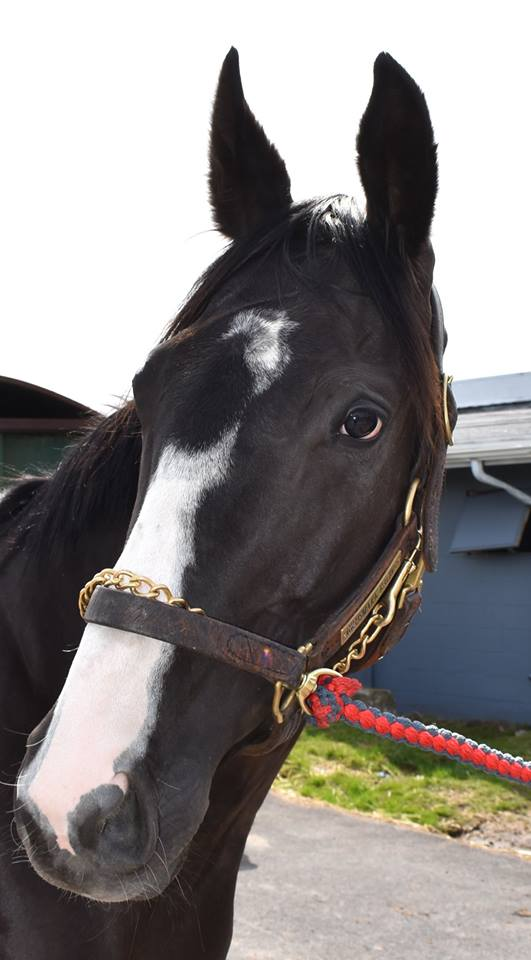
Looking for Brawn, Brains and Class all in one? Look no further! This gorgeous mare dazzled in the sunshine on this breezy April day for her meet and greet with our volunteers. Not only did she show off her excellent ground manners, and excellent conformation, but she made it very clear that she loves the attention of her handler. She is described as sound with no stall vices and easy to work with. She enjoys going to work each day and is good to work around in her stall and on the ground. She is by Frost Giant out of a mare by Touch Gold. Frost Giant babies are highly sought after for their athleticism and aptitude in the sporthorse realms and we could certainly see Protect the King being wildly successful in a new career. She does have some old calcification on her right front pastern but has been racing sound on it since she came to her current connections. In her 16 Starts, she has earned just over $10,000 but is not making huge strides at keeping up with the competition in her most recent starts at Penn National. She will continue to train and race at Finger Lakes until she finds her new home. Don’t let this sweetheart sporthorse prospect slip by! Call today to add her to your barn for the summer show season! http://www.equibase.com/profiles/Results.cfm?type=Horse&refno=9720646®istry=T Price: $2,000 Contact: Paul Ubbink 585-727-8309
As always, a pre-purchase veterinary exam is recommended.
Here's Wattever
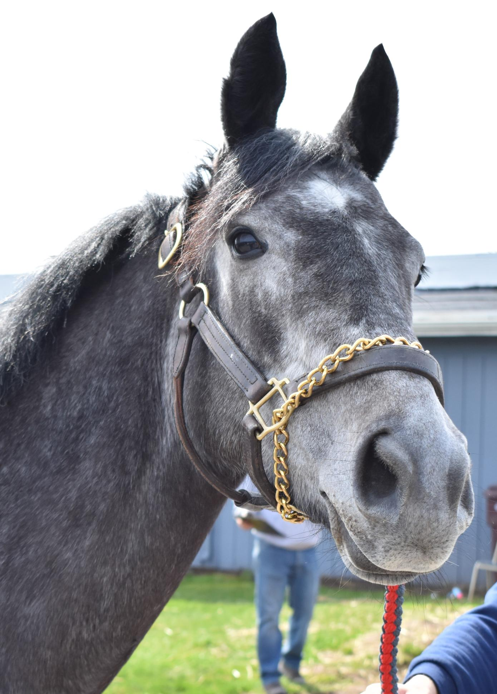
As always, a pre-purchase veterinary exam is recommended.
Holly's Halo, 2013 15.3h gray mare
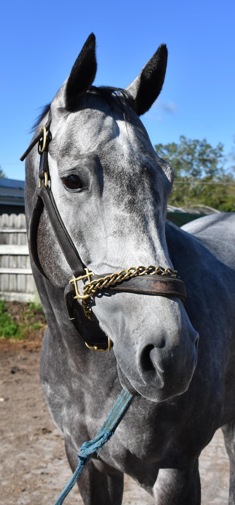
Holly's Halo, 2013 15.3h gray mare. Located at a farm in Victor NY very close to the Finger Lakes Race Track.
Holly is a much loved homebred who has been with the same owner and trainer her whole life, so she has always enjoyed the best of care. She is described as an easy going sweetheart, easy and comfortable to ride and gallop, never giving the exercise riders any problems at all. She is also easy to handle on her owner's farm over the winters in turnout. Our volunteers first photographed Holly a couple of years ago, before her owner decided to keep racing her, and when we saw her this time, we were impressed with how much she had grown and filled out now that she is fully mature. She is a very solid bodied girl, who will take up even taller riders' legs. Holly is described as very sound, and her legs are clean. She is now ready to find her new career, because in her first start this spring, she dwelt in the gate at the start and lagged well behind the field, letting her owner and trainer know that she is just not interested in racing anymore. Holly's big full sister, Mom's Chance, is enjoying a successful career in dressage, and we think Holly will adapt as quickly and well to a new career as her sister did. Holly could go in any direction. We think she would love to go on hunter paces and foxhunts, but if more leisurely trails are what you want to do, Holly would be fine with that. Holly is by Comeonmom, from the Halo sire line, out of a mare by American Chance, from the Cure the Blues sire line, which brings in another cross of Hail to Reason in addition to that of her sire line. Holly's owner cares very much that she go to the best of homes that will give her updates, so be prepared to provide references and convince her that you are the right person for Holly! Price: $5,000 negotiable Contact: Linda Reading (owner) 716-949-8112 (text or call) Karen Barrow (trainer -- to arrange visit to farm to see Holly) 585-415-1152 (text preferred, please do not contact after 8 pm)
As always, a pre-purchase veterinary exam is recommended.
BIG EAST 2013 16.3 BAY GELDING
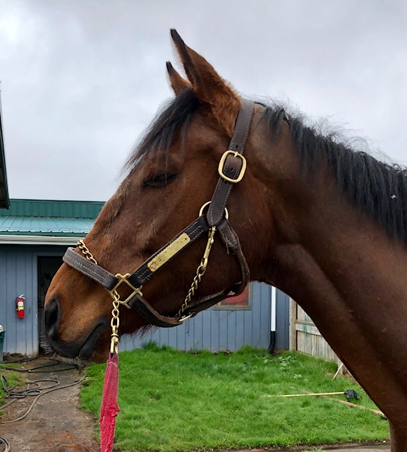
Big East was our first offering of the day and he was well worth the trip to the track for our official launch of the 2019 meet. One of our volunteers had met this gent last year and absolutely loved him. Those of us who have seen him in the flesh believe that he is a quality horse with tremendous sport potential. Big East was tailing off last year after compiling a decent race record with a relatively modest 28 starts and 11 in the money finishes. While being trained for the 2019 season, Big East bled during one of his workouts and his trainer has decided that now is the time to retire him from racing. It is unlikely that he would continue to have problems with bleeding during activities that are less strenuous than racing, although we would recommend discussing it with your veterinarian. This guy is just too nice to pass up. We were impressed with his size and his big, solid feet, something not always seen in thoroughbreds. He is described as a very chill dude with a mellow attitude about everything. He has prominent withers now and muscling in the neck with a change of activity and training will eventually give him a nice top line. He is described as sound and we saw nothing to give us pause. His legs are cold and tight. He was alert and ready to strut his stuff when we asked for a video of his jog and we liked his nice spring from behind. He's already had the winter off with minimal training while at the track in these initial weeks after the backside opened up, so he can transition to your training regimen from a refreshed status. We expect that, with a nice young horse that ticks all the boxes, he won't languish for long. Give a call if you are seriously interested.
Price $2500
Contact Adrianne d'Alessandro 585-281-1810
As always, a pre-purchase veterinary exam is recommended.
J C the Destroyer, 2016 16h dark bay filly -- sold for racing

This young daughter of the great Big Brown is very feminine and elegant, and her groom says she is very sweet and kind, a good girl who never puts a hoof wrong, and is very easy to work around. She is described as very sound, but slow. After 4 starts, she has shown no racing ability. She has a a bit of a sway back with very high withers, but when we have listed horses in the past with this conformation, we have heard from several people who have told us that their horses built like this are great jumpers. Don't let a saddle fitting issue stop you from getting this lovely filly, who has unlimited potential as a sport horse. JC jogged very kindly on a loose lead and showed very nice fluid movement. Her legs are clean, and she is still growing. She has no limitations for any new career, and with her sweet agreeable demeanor she should be relatively easy to transition to a new career. She is by champion Big Brown, who is a grandson of Danzig and Nureyev, and her dam is by Hold that Tiger out of a Lemon Drop Kid mare. Price: $2,000 negotiable Contact: Marisa 315-719-9665, or Roy 585-683-9940
http://www.equibase.com/profiles/Results.cfm?type=Horse&refno=10073838®istry=T
As always, a pre-purchase veterinary exam is recommended.
Leading Storm, 2015 15.3+ bay gelding
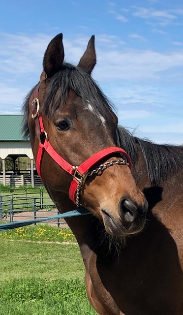
What a sweet, quiet, good guy this "diamond in the rough" cute young gelding is -- and he is just begging to get a great new home where he can be your best friend and enjoy trail riding, low level jumping, and life less strenuous than the racetrack. Leading Storm has bounced around from trainer to trainer -- he started his career running well but not quite being able to win on the tough NY circuit, then last summer he was sent to Finger Lakes for softer competition. He won a race at Finger Lakes -- still his only win in 14 starts -- and was promptly claimed by a trainer who was new to Finger Lakes. This former trainer did diagnostic x-rays after he claimed Leading Storm. The x-rays revealed a small non-displaced knee chip, and the vets said he could keep racing. We listed Leading Storm late last summer for that former trainer, when Leading Storm was sleek and shiny. That trainer raved about what a kind, quiet, good mannered sweet horse he was. But then that trainer had to leave town, and when no one had stepped up to give Leading Storm a new non-racing home, he was passed on to yet another trainer at Finger Lakes, who raced him several more times until the end of the race meet last fall. He put Leading Storm on a farm for the winter, and has put him back into race training this spring. But after a recent workout his knee bothered him for a few days, so it is now time to find him a new home. On the day we photographed him, Leading Storm had not yet shed out his winter coat, and he was missing his front shoes. But his knee was cold, and he jogged well despite missing two shoes, showing very cute movement. The groom who handled him said that he is a very good boy, always kind and easy to work with. Because Leading Storm has raced and trained on the knee chip without major issues, we think that in a less strenuous lower level career he will be fine, and will be a trusted friend who will forever reward the person who steps up for him. He has good balanced conformation, a very kind eye and friendly expression, and we think that once he is cleaned up, gets some good grooming to help him shed out his winter coat, and gets his feet done with shoes back on, he will quickly return to the shiny boy we saw last summer. He is by Forty Tales, a son of Tale of the Cat, out of a mare by Lion Cavern out of a Relaunch dam. Price: $750 Contact: Marisa 315-719-9665
http://www.equibase.com/profiles/Results.cfm?type=Horse&refno=9914233®istry=T
As always, a pre-purchase veterinary exam is recommended.
Oh, 2014 16.1h bay mare
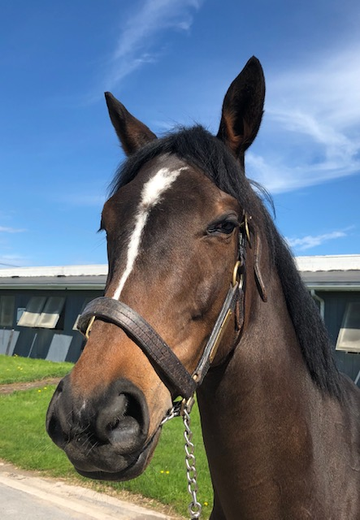
Located at Finger Lakes Race track, Farmington, NY Oh my, Oh gorgeous.... think of the fun you can have with this sweet mare's name! Oh is a much loved barn favorite because she is kind, beautiful, and great to work with. She is a homebred, and her owner/breeder wants to find her an excellent home. Oh did not come to the track until last year, and after one race last summer, she had some filling in her left front tendon. They ultrasounded it and found a very small tear, so they stopped on her and completely rehabbed the tendon. Oh came back to the track in March, but after a workout there was a slight filling in the tendon, but she never was lame or sore on it. They decided to be extra careful and stop her race training, and find her a new career. On the day we photographed Oh, she had been out of training for over a month, just walking in the shedrow, so she was a bit excited to be outside, although very respectful of her handler. She showed off nice suspension and balance with a lofty trot. Her handler says that she is a lovely mover, very nice to gallop, with smooth lead changes, and that she has been ridden in an indoor arena as well. Oh also trailers well. Given how slight her tendon injury was, and how carefully it has been managed, Oh should be fine for careers less strenuous than racing. She is pretty enough to excel in the show ring, and her movement suggests that dressage could be a good outlet for her. Oh is by Rule, a son of Roman Ruler, out of a mare by Storm Bird. An excellent home with references is essential for this special and much loved mare. Price: $1,500 negotiable Contact; Dana Saul 315-871-9383 (text preferred; please do not contact after 9 pm)
http://www.equibase.com/profiles/Results.cfm?type=Horse&refno=9720644®istry=T&rbt=TB
As always, a pre-purchase veterinary exam is recommended.
Martino, 2014, 16h bay gelding -- to FLTAP
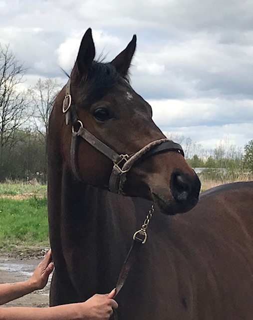
Located at a farm adjacent to the Finger Lakes Race Track in Farmington, NY (near Rochester, NY). Martino's trainer stopped on as we headed out and told us about this sweet gelding who is on a farm adjacent to the track. Martino has been a successful race horse with a decent record of 25 starts, 2 wins, 6 seconds and 2 thirds. Alas he sustained a hind sesamoid injury last March (2018) and has been successfully rehabbed. He was given the appropriate amount of stall rest, hand walking, is currently being turned out in a round pen and ready to be restarted. We think he could be a fun project because his brain is probably in a great place to transition easily to life at a farm. Martino's handler stated that he is good to work with on the ground and has been a good patient. His xrays, both at time of injury and the recent ones indicating he is ready to restart, are available for review by your veterinarian. Martino has also had his shots and, of course, has a current Coggins. His trainer thinks that he would be suitable for low level disciplines and would look equally as good under English or Western tack.
Price: $1000neg to a good home
Contact: Dan Conway 585-329-7803
https://youtu.be/9EaPhr7Pelc
As always, a pre-purchase veterinary exam is recommended.
Bess’ Girl , 2014 15.3 bay mare
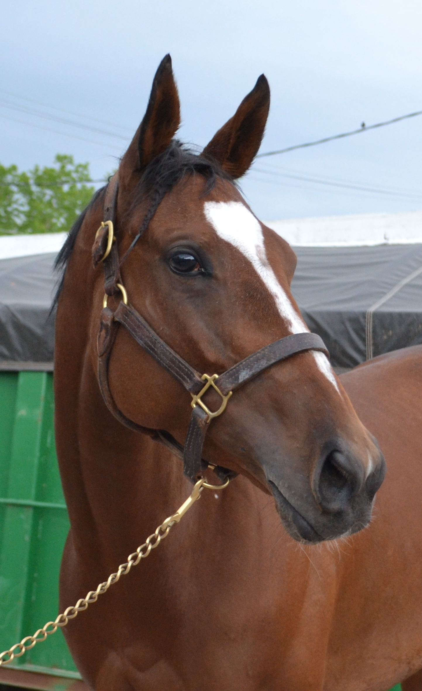
We listed this gorgeous daughter of Line of David, out of a Saint Ballado/Halo line mare, in the spring for a previous owner/trainer. But she was then picked up by another trainer, and wound up in the barn of yet a third trainer, who cannot keep her for the winter, so she needs to find a new home and career now. She is as sweet and quiet as she is beautiful. Her uphill build and unique light colored tail will definitely catch attention! When we photographed her in May (when we took these photos) she politely stood as thunder rolled in. She jogged quietly on a loose lead and demonstrated a long sweeping walk and lovely ground covering balanced trot that looks like it will succeed in the show hunter ring. When we recently saw her with her latest owner/trainer on a very cold November day, she was furry and a bit on the thin side, needed some grooming, had not been out of the barn in several days, and was missing a shoe and her feet were overdue for farrier care. So we did not get a new jog video, and did not get new pictures because the earlier photos show you what she will once again become when she gets some good care and TLC. The trainer we originally listed her for says she is a sweet kind mare with no vices and an easy keeper whose grain she actually had to cut and she still kept good weight. So she should be easy to return to her beautiful glory. Since coming to Finger Lakes this spring from Penn National, Bess has not only been through several hands, but she has been regularly raced every two weeks -- she has 15 starts this year! She could benefit from some R & R, turn out, and love! But once she gets all that we think she has great potential to be a lovely show horse or pleasure horse.
Price: $750 negotiable to a good home
Contact: Eddie Maver 786-285-2047 (contact person for actual owner/trainer to help with language barrier)
As always, a pre-purchase veterinary exam is recommended.
Itsabigno, 2016 15.3 bay filly
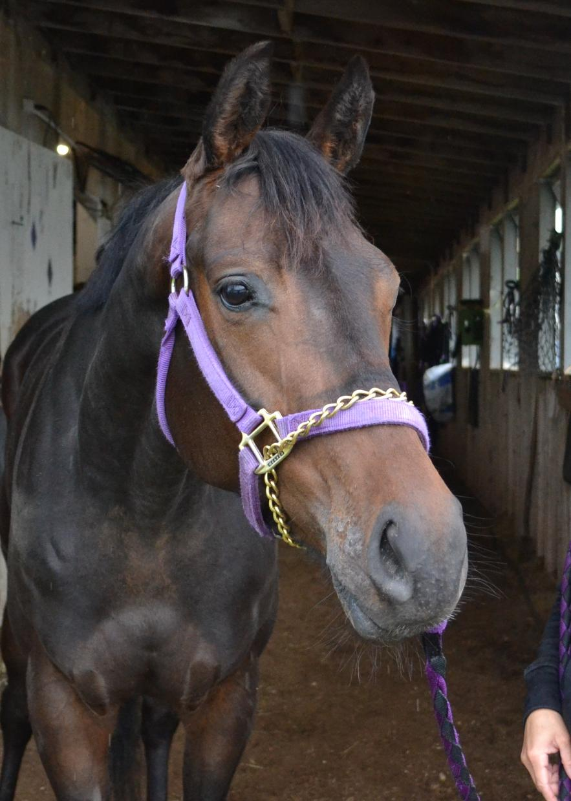
Itsabigno is a lovely filly by the very desirable Big Brown! Another who is as sweet and quiet as she is nice to look at. She’s an eye catching, two-toned bay with great feet, an uphill build, and a fantastic neck! She’s covered in dapples and has a long, full tail. She loves to pose to have her picture taken and didn’t let the downpour or thunder and lightening distract from her picture session! Her trainer reports that she is sound, and is easy and straightforward to gallop. She does require a kind bit and a light hand. She displayed a long, casual, sweeping walk, and a lovely, toe-pointing, quiet jog. This treat hound is sure to steal your heart!
Price: $2,500 negotiable
Contact: Amber Cobb 518-316-0089
As always, a pre-purchase veterinary exam is recommended.
Dr. Sin Dee 2016 15.2+ bay filly
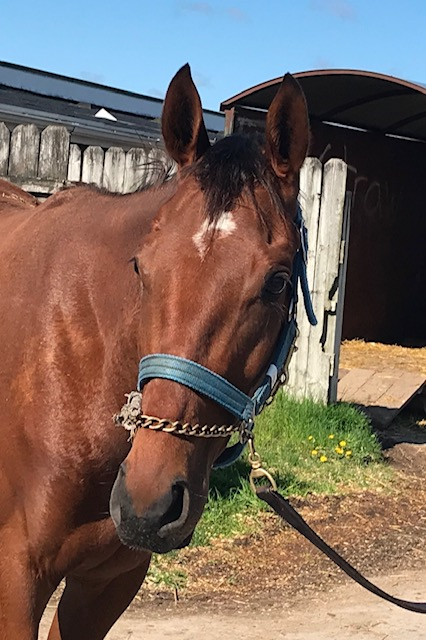
Here is a sweet, young filly who would be perfect for someone looking for a smaller mount. A washout on the racetrack, Cindy has been used as a safe, easy mount for young people learning how to exercise racehorses. Her connections also start young horses and work with a variety of incipient jockeys who need to ease into the work of riding racehorses and Cindy proved to be kind, patient and safe for them. She has one race under her belt and, between that inauspicious outing and lackluster workouts, her trainer has wisely decided to pull the plug. Cindy was very polite and quiet for her handler while we took her pictures and videos. She is described as sound and well mannered, with no bad habits.She is a cute mover who would fit in the show ring, on a polo field or in your pocket!
Price $1000
Contact Linda Dixon 585-329-9062
As always, a pre-purchase veterinary exam is recommended.
Mama's Funky Baby 2016 15.2 bay filly -- moved to FLTAP
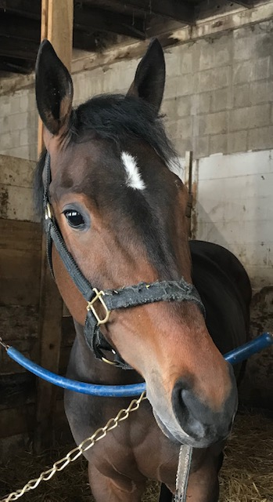
Baby is a diminutive young lass who is quiet and sweet as pie in her stall but has a lot of spunk out of it. Her trainer says that she is quiet and easy to work with on the ground and, since she stopped training after her 4/29 race, she has reserved a lot of energy for antics out of her stall. She had a chip removed from her right knee before she started racing and came back from her 4/29 race a bit ouchy, so the connections have decided to pass her along. Her trainer has cut back on her feed but Baby is still fit and stoked to show her moves. She has a good, compact build with good feet and will benefit from some turnout with time to mature and heal. Baby is a very cute, feminine filly with a blank slate of possibility off the track. She is by Awesome Patriot out of a Lion Hearted mare. She has 3 starts and doesn't seem to have the acumen for racing which is a score for those of you looking for a young, smaller filly for the discipline of your choice. Baby was a bit of a powder keg for her video but her movement showed glimpses of very nice movement while her handler kept her under wraps. We think this youngster is a bargain and a good prospect for your discipline of choice. She will undoubtedly thrive after a period of turnout to mature a bit and be fully ready for retraining.
For further information on adoption process and adoption fee please contact Finger Lakes Thoroughbred Adoption program (FLTAP), Melissa Porter (585) 500-5333
As always, a pre-purchase veterinary exam is recommended.
Power Fixture 2016 16.2 ch gelding
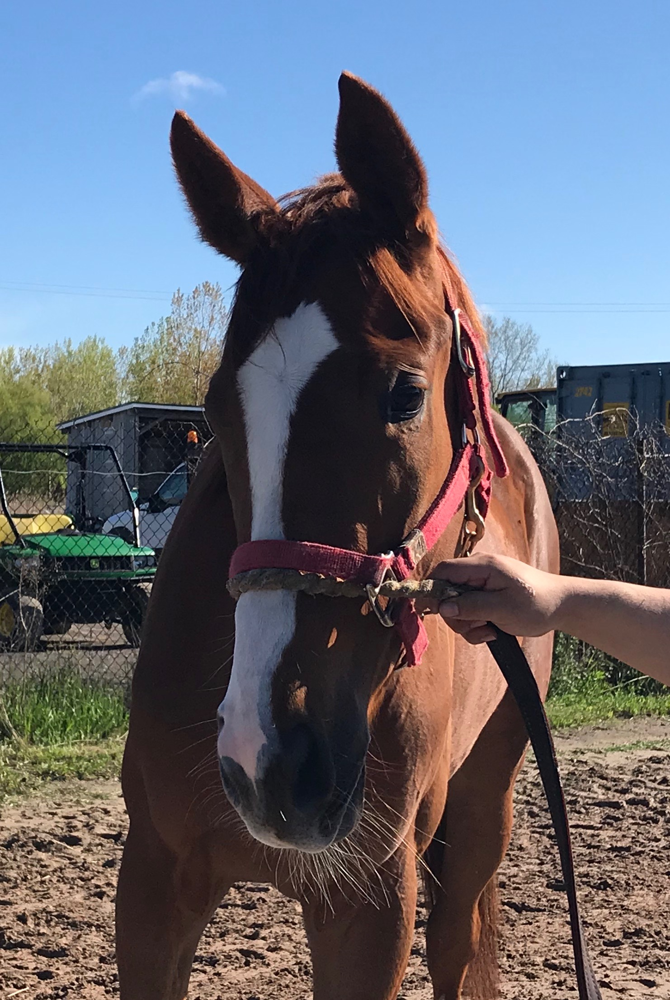
This handsome, unraced, young fella was the first of several young horses we met this morning. Before he was brought out of the barn we chatted with his trainer in front of his stall and we immediately loved his pretty face. He was just recently brought back to the track from winter on the farm and it is abundantly clear to his connections that his head really isn't in the game. Last year, as a two year old, he didn't show much interest or aptitude for racing but his trainer hoped a winter off would give him enough extra maturity to get with the program. Not so much! PF has a great appetite according to his trainer and has free choice hay in a net but is not putting on weight, so he looks gangly and very much like the baby he is. He is described as kind and wonderful to work with and does everything asked of him but is just not happy at the racetrack. His trainer thinks that a brand new environment would do him a world of good and we would have to agree. PW is sound and he exhibited attention to his handler although his attention was on the multiple horses going to and coming off the track near a main horse path. In an environment that pleases him, without the bustle of the backside, we think this young horse will fill out and come into himself. At the jog he showed nice suspension and movement. This youngster is a clean, blank slate to finish your way at a bargain price to boot!
Price $1500
Contact Deb Breed 585-289-3467 landline, no text, no calls after 8 p.m.
As always, a pre-purchase veterinary exam is recommended.
Houseer, 2015, 16h chestnut gelding
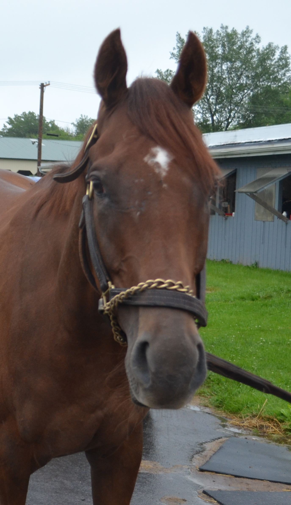
Another super sweet, quiet, guy we had the pleasure of meeting on a cold, rainy, windy day! Houseer didn’t put a foot out of place despite the less than ideal conditions. His trainer reports this is very typical for Houseer. He is reported to be kind and easy to work around. He is lightly raced with only 14 starts and is just no longer showing any interest in racing, so he’s ready to be successful in a different discipline! His trainer reports he is sound and clean legged. At only 4, he may still grow a bit more, and should definitely continue to fill out. Here’s a great opportunity to get the elusive young, quiet, sound, good sized gelding for a fabulous price! His trainer reports that during very busy times in the shedrow, Houseer may walk his stall, however, he settles right down when the shedrow is quieter, so we don’t foresee this being something that would continue at a farm, especially with some turnout. Houseer is by Divine Park out of a Brahms mare. http://www.equibase.com/profiles/Results.cfm?type=Horse&refno=9923454®istry=T&rbt=TB Price: $1,500 Contact: Paul Ubbink 585-727-8309. Text preferred.
As always, a pre-purchase veterinary exam is recommended.
Red Brook Road, 2014, 16.3+ bay mare
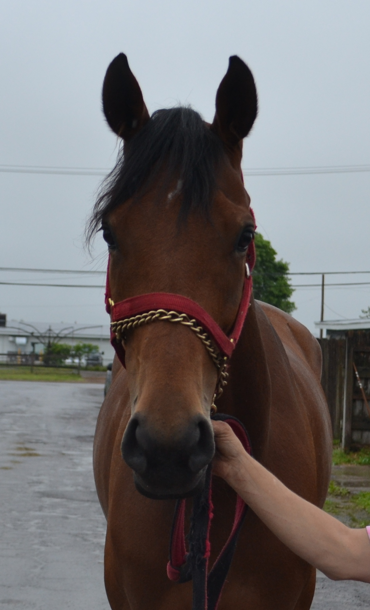
The whole shedrow couldn’t stop talking about how awesome “Brook” is. She truly is a barn favorite! Her trainer had absolutely zero negative adjectives to describe her. Her groom was also there during the photo shoot and reported that Brook doesn’t need to be tied for grooming and tacking, she has impeccable manners, and is a kind animal. They report she is great to ride with no quirky or naughty behaviors. She has been turned out at the farm and is reported to love it, so she should have a pretty easy transition to the off track life. Brook was super quiet during her photo shoot and jog video, despite the rain and wind. She cut her left hind ankle in the swimming pool a few weeks ago, so there is a visible scab in her photos, however her trainer reports this is just cosmetic and will continue to heal. We think she could go in man directions, but could see her in the dressage ring with her nice uphill build. She has earned $22,000 in her 19 starts with 1 win, 3 seconds, and 1 third. She is by Bellamy Road out of a Roi Normand mare. http://www.equibase.com/profiles/Results.cfm?type=Horse&refno=9680726®istry=T Price: $3000 neg to good home Contact: Jackie Stauffer 585-857-1413 Text preferred.
As always, a pre-purchase veterinary exam is recommended.
Sand City, 2014, 15.1 bay mare
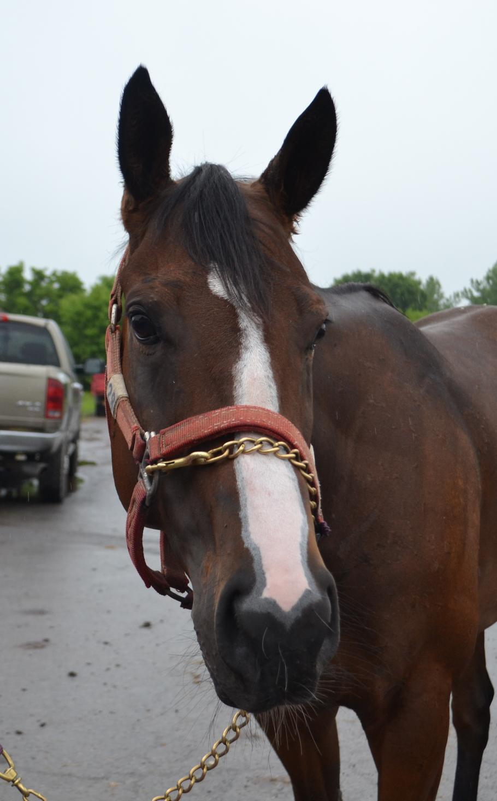
Sweet, sweet, sweet is how we would describe Sand City. When we arrived at the track for listings this day, it was very chilly, rainy, and windy. Sand City walked out on a loose lead and jogged politely with the chain hooked under her halter. She never put a foot out of place and her trainer reports this is her typical demeanor. They report that she is very easy to work with, has no vices, and has not had any soundness issues. She was turned out all winter with a group and really enjoyed the farm life. She enjoyed it so much, that when she returned to the track this spring, she hasn’t shown any interest in any of her races. In her 25 races, she earned over $87,000 with 2 wins, 6 seconds, and 4 thirds. She is by City Zip out of a YONAGUSKA mare. Please note, Sand City cut her hind left ankle in her last race. The cut is still healing, but is only cosmetic. http://www.equibase.com/profiles/Results.cfm?type=Horse&refno=9691450®istry=T Price: $850 negotiable. Contact: Jaime Boldt 585-943-4298 (text preferred)
As always, a pre-purchase veterinary exam is recommended.
Stone to Gold, 2014 16+h grey gelding
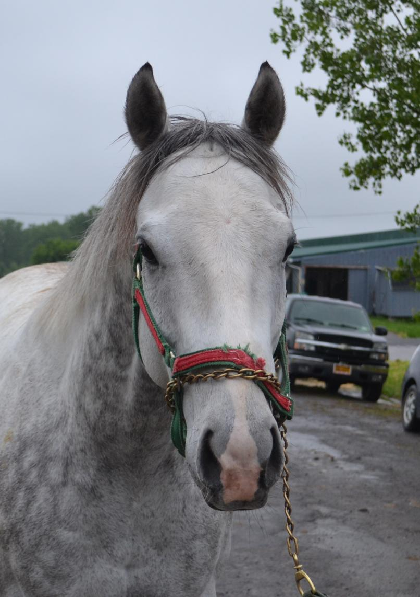
Stone to Gold exhibited a very light and flowing flat kneed trot that should show well in the hunter ring. His owner said he is a very sweet horse, very sound with no vices, and that peppermints are a sure way to win his affection! Stone to Gold was very friendly with our volunteer (although disappointed that she had no peppermints for him!), and he was quiet and perfectly behaved for his photos and jog. While he raced well last year, with one win and 4 thirds, his owner realizes that the end of the Finger Lakes racing season will be here before we know it, so he wants to see if he can find a great new home and career for Stone to Gold while he is sound, happy, and his potential for any new career is at its peak. This guy can go in any direction, with no limitations. He moves well enough for dressage or the show hunters, and his quiet friendly temperament will win anyone over! He is by Bustin Stones, a son of City Zip, and he is out of a mare by French Deputy, a son of Deputy Minister. These are lines known for good brains and jumping ability. Young sound athletic great moving grey geldings are the most popular horses, so move fast if you want to bring Stone to Gold home with you to feed him as many peppermints as you can! Price: $3,500 neg Contact: Joe Cabrera 315-704-8256
As always, a pre-purchase veterinary exam is recommended.
Sideways Vision, 2011, 16h+ chestnut gelding
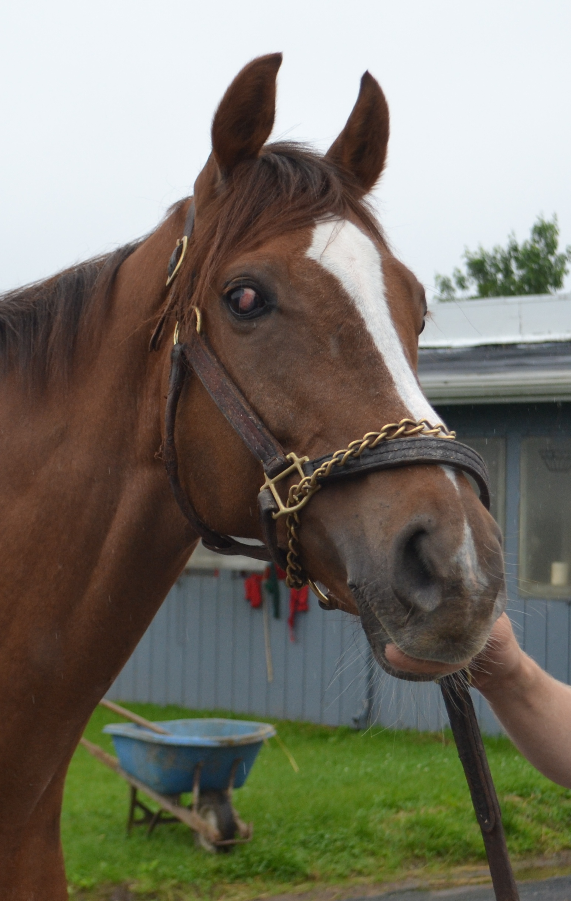
Our volunteers absolutely LOVED this cute guy. He reminded us greatly over an overgrown pony with that thick, cresty neck and his chunky build. His trainer reports that “Vision” is a barn favorite because of his goofy, silly personality. He reports that he is great to work around and has no vices or soundness issues (one old, set osselet that never impacts him) and is just an overall “fun guy”. He has a great uphill build and flashy roaning throughout his coat that adds to his cute appearance. His trainer isn’t positive why his eye looks the way he does, but the vet feels it is from a surgical eyelid procedure as a young horse. His current connections feel it is a cosmetic thing only and not impacting him. He showed us how he does blink when hands run in front of the eye from all directions and vet also feels that he is not blind. It certainly has not hurt his racing career. He has earned over $177,000 in his 66 starts with 8 wins, 12 seconds, and 13 thirds. Hitting the board 50% of his starts is a fantastic record and a testament to his soundness, durability, and work ethic. His trainer reports Vision will crib for a few seconds at feeding time only. They have never used a cribbing collar, so it is likely this could be eliminated by that. They report that has been turned out at the farm and is well behaved. Like most horses, he loves the laid back farm life. We think Vision will be a super fun prospect and we can’t wait to see him brought along! Vision is by Pollard’s Vision out of a Boston Harbor mare. Price: $1500neg Contact: Paul Ubbink 585-727-8309 (text preferred)
As always, a pre-purchase veterinary exam is recommended.
T J's Rose Ella, 2016 15.3+h ch filly -- now at FLTAP
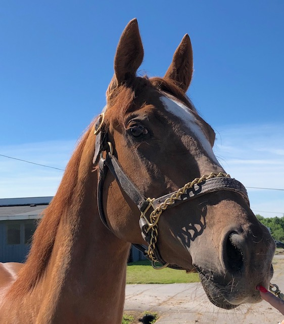
Located at the Finger Lakes Thoroughbred Adoption program barn on the grounds of Finger Lakes Race Track, Farmington, NY Fans of Frost Giant offspring, here is a lightly raced young and still growing daughter of that coveted sport horse sire who has unlimited potential for any new career -- but we think, like so many other Frost Giant offspring, that she will be great in eventing or its component disciplines. When T J's Rose Ella grows into her lanky and athletic frame and fills out, she is going to get much bigger, and will be a stunner. After 7 starts, it is evident that racing is not the right sport for T J, as she has not come close to hitting the board. On the day we photographed T J, it had been ten days since she last raced, and in the interim she had done nothing but walk in the shedrow, so she was excited and on the muscle to be outside where she could see horses training on the nearby track. But she stood politely for photos, and respected her handler and held everything together for a video, although her handler could not let her trot out beyond a slow jog. But even at the contained jog we saw tantalizing hints of an athletic trot with good hind end engagement and reach from the shoulders. Her trainer says she is very sound, has no issues, and is a good girl to work with, and we watched her stand quietly for grooming in her stall. Give this filly some time to grow up, and we think some lucky person is going to have a great sport horse prospect. Since she is so young, she is best suited for an experienced rider who knows how to bring along young TBs. She is by Frost Giant, who is a son of Giant's Causeway out of a Gone West mare. T J's dam is by Majestic Warrior, who is a son of AP Indy, and her damsire is Point Given, a son of Thunder Gulch. One of our volunteers has two OTTBs from these same Thunder Gulch/Gulch lines as T J's dam, and both of those horses are outstanding jumpers with A show quality form. T J is offered at an enticing price for such a young sound horse with great sport horse lines and potential. Price: TBD Contact: Melissa Porter at FLTAP (585) 500-5333
http://www.equibase.com/profiles/Results.cfm?type=Horse&refno=10042251®istry=T
As always, a pre-purchase veterinary exam is recommended.
Sisella, 2014 15.3h bay mare
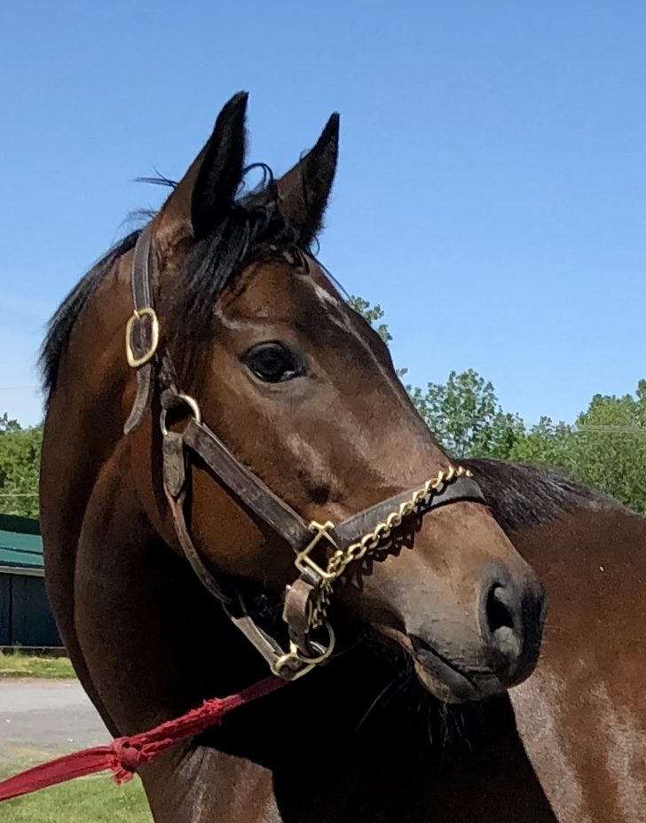
Located at Finger Lakes Race Track This lovely beauty gleamed in the sun, and posed alertly but quietly as she showed off her deep barrel and strong shoulder and good movement with a flat kneed reach at the trot. We admired her kind and intelligent eye, and her trainer says her personality is a match for that -- she is alert, friendly, and a very good girl who is kind and nice to work with. Sisella has been a good consistent race horse, who won three races last year, and overall has 4 wins and 13 top three finishes in 29 starts. But after enjoying the winter off at a farm, in her two races this season she is showing no interest in racing, and letting her people know that she would prefer a new career. Last year towards the end of the racing season she developed a slight soreness in a knee, but her trainer says that the winter of turn out seems to have taken care of that and she has shown no indications of any knee soreness this year. She does not think that Sisella will have any limitations for a new career. Sisella is by Boys at Toscanova, a young sire from the Bertrando/Relaunch/In Reality sire line who is siring big hearted horses with a lot of try and athletic ability. Her dam is by Golden Missile, a son of AP Indy, out of a mare from the Deputy Minister sire line. Sisella is offered at bargain price to help her find a great new home. Price: $1,000 Contact: Adrianne D'Alessandro 585-281-1810
http://www.equibase.com/profiles/Results.cfm?type=Horse&refno=9660799®istry=T&rbt=TB
As always, a pre-purchase veterinary exam is recommended.
Groton St. Scout, 2014 16.2h dk bay mare -- retained for racing
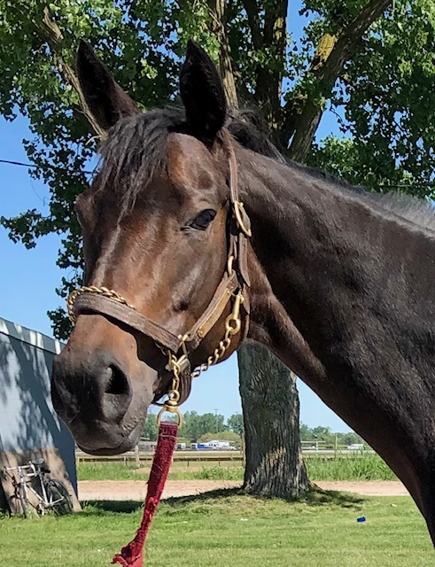
Located at Finger Lakes Race Track, Farmington NY This striking big mare sure does look like an excellent sport horse prospect with her huge shoulder and very good movement. Her trainer says she is a very kind horse, really good to handle and work with, and a pleasure to be around. They are ready to move her on to a new career because in her two starts so far this season, she has not run as well as in the past. Overall she has 3 wins and 19 in the money finishes in her 33 race career with over $100,000 in earnings, so she has been a good honest racehorse. She was perfectly polite for her photo session, and jogged quietly on a loose lead showing a big flowing walk and a well balanced flowing trot with good engagement from behind and a flat kneed reach from her shoulders. Groton St. Scout is by Boys at Toscanova, who is from the Relaunch/In Reality sire line coveted by many in the jumping sport horse world. Her sire is known for getting hard trying horses who like to work and who have good athletic ability. She is out of a mare by Dehere, who is a son of Deputy Minister. She also has Blushing Groom and Secretariat in her pedigree. This big kind lovely mare is bargain priced to help her find a great new home. Price: $1,000 Contact: Adrianne D'Alessandro 585-281-1810
http://www.equibase.com/profiles/Results.cfm?type=Horse&refno=9736383®istry=T
As always, a pre-purchase veterinary exam is recommended.
Le Brown James, 2014 15h bay gelding -- retained for racing
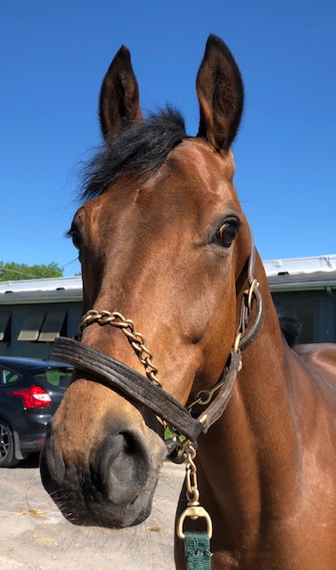
Located at Finger Lakes Race Track, Farmington, NY. He may not be as big as his NBA namesake, but we think this adorable fancy moving gelding is a slam dunk to be an MVP in any new equestrian career. James is ready to move on from the track because, unlike his namesake, he's not lighting up the scoreboard in the races; he has yet to win in 14 starts, although he has garnered several placings. His trainer says he is very kind and easy to handle, and very quiet. She says he is nice to ride -- "anyone can get on him" she reports. James has spent winters on her farm, ans she says that he turns out well with other horses. She thinks James would make a great horse for a kid working with a trainer to help with the retraining process, because of his size and sweetness -- but he's ideal for smaller adults too. She reports that James is very sound and has never had any issues, and we observed clean legs. For his jog video James showed off a beautiful, big strided and floaty toe- pointing trot that had us seeing visions of cleaning up in the children's hunters at the big shows! With his solid body and big movement, James will ride and feel like a much bigger horse than he is, so don't let his wither height deter you from such a great sport horse prospect. He is a son of the great Big Brown, out of a mare by Cryptoclearance. His pedigree is chock full of great sport horse sire lines -- Fappiano, Blushing Groom, Roberto, Hoist the Flag, Danzig, Damascus. Price: $2500 Contact: Donna Bireta 585-281-3058. text or call.
http://www.equibase.com/profiles/Results.cfm?type=Horse&refno=9695732®istry=T
As always, a pre-purchase veterinary exam is recommended.
Jeff's Goods
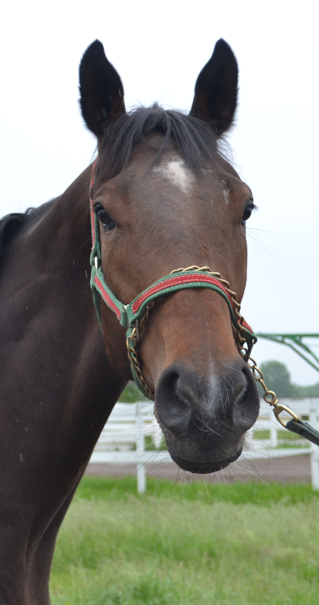
Rap Sheet, 2015 15.3h grey gelding
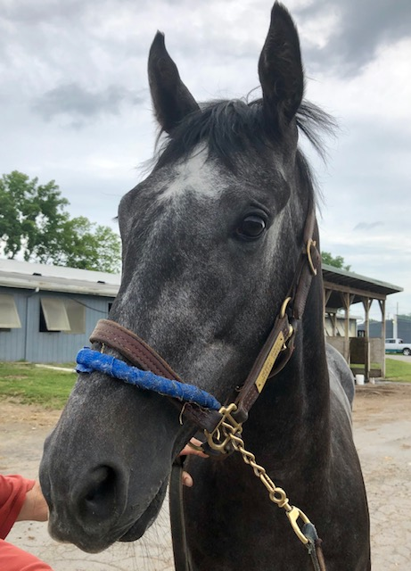
Located at Finger Lakes Race Track, Farmington, NY The only rap on this cute grey guy is a case of the slows! After twelve starts, he has yet to win, although he has racked up 8 seconds or thirds. But his owner would prefer to concentrate on more successful racehorses, so it is time for Rap Sheet to find a new career where he can excel. His trainer says he is a loveable kind horse, very good to handle with no vices. He attests that Rap Sheet is sound; the trainer told us that he recently had the horse thoroughly checked over by a vet, including x-rays to see if there was any physical reasons for his lackluster racing performance, and the exam and x-rays were clean. Rap Sheet showed off a flowing walk and trot with good engagement from behind for his video. This still growing young horse has unlimited potential to go in any new direction. He is by Desert Party, a son of Street Cry, out of a mare by Holy Bull -- excellent sport horse bloodlines. Price: $3500 negotiable Contact: Sal Iorio 585-455-4019
http://www.equibase.com/profiles/Results.cfm?type=Horse&refno=9948356®istry=T&rbt=TB
As always, a pre-purchase veterinary exam is recommended.
Victorious Song 2007 15.2 dk bay mare
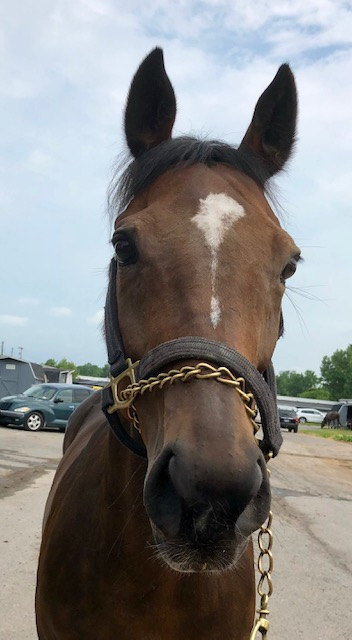
To our delight, we were honored to photograph our second warhorse of the morning, the adorable tank of a mare, Victorious Song. Until we do our Equibase research we usually know little about a horse's pedigree or race record and, every once in a while, we are stunned to find these gems with incredible race records. We "knew" that she had been an allowance horse once upon a time but we had no idea that she has made 120 lifetime starts! That's not a typo: 120 starts with 10 wins, 19 seconds and 26 third place finishes. Phew! Yet this intrepid darling of a mare is sound, in good flesh and dappled until the cows come home. Her handler relayed her recent history to us and was not at a loss for superlatives about Vicky's sweet, been-there-done-that personality and impressive stature. What she may lack in height she has in girth and we don't think she would be offended to be referred to as a tank. Victorious Song was retired two years ago to go to the breeding shed. Alas, two seasons failed to get her in foal and her current connection brought her back for racing this year, quite inauspiciously. With her quiet and kind personality and wise old soul experience, we feel confident that Vicky could adapt to many disciplines, including a mount for a young rider. Her barrel takes up a lot of leg so even taller riders will look appropriate on her. Any thoroughbred that is brought back to the races at the age of 12 is sound, even 118 races later. Her new home will be carefully selected to ensure that she is going to a good second career owner who will pamper and love this stellar warhorse. Victorious Song is by Roaring Fever out of a Deposit Ticket mare.
http://www.equibase.com/profiles/Results.cfm?type=Horse&refno=8117859®istry=T&rbt=TB
Price $1000 neg.
Contact Marisa 315-719-9665
As always, a pre-purchase veterinary exam is recommended.
Atomium 2013 16.2+ dk bay gelding -- new price
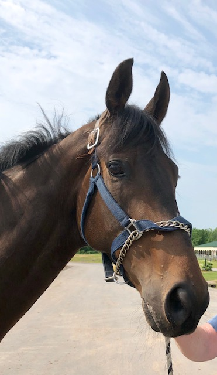
Atomium is a horse we listed in the past who finds himself once again ready to move on from racing. A lean, tall drink of water, Atomium's trainer joked that he was put together with pieces and parts of many different horses and another trainer in the shedrow laughingly concurred, but he has remained absolutely sound during his racing career. He was very energetic for his interview and exuberant for his jog video, but the volunteers pegged him as an athletic boy with a tall, uphill build, suited for eventing or foxhunting, and an elegant head and expression. His trainer told us that Atomium is a kind horse who craves attention, loves carrots and is struggling to get through his next condition on the track. He is a Kentucky bred by Latent Heat (Maria's Mon)out of a Distorted Humor dam who has compiled a decent race record of 2 wins, 3 seconds and 5 thirds out of 32 lifetime starts. After Atomium went back into his stall we lingered with his trainer and Atomium was very interested in joining the conversation. Again we commented on his beautiful head and kind expression. His trainer had him turned out all winter with a filly and Atomium was a gentleman and perfectly behaved on the farm. On the track he is a mild cribber, easily controlled with a collar which he does not need when on the farm. Tall, dark and handsome should get this guy noticed in whatever direction you take him.
http://www.equibase.com/profiles/Results.cfm?type=Horse&refno=9512764®istry=T
Price $750
Contact Dave Houck 585-259-9420
As always, a pre-purchase veterinary exam is recommended.
Emmy Knows, 2016, 15.3 dark bay filly
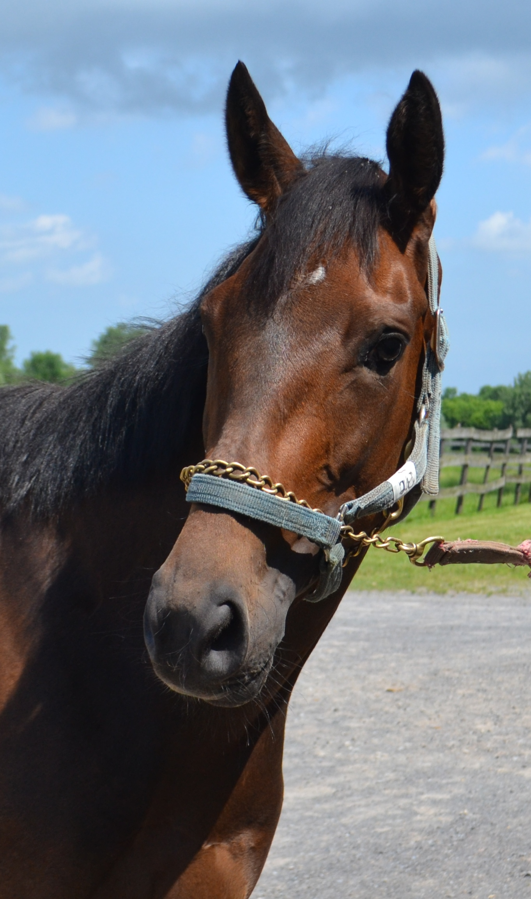
We think Emmy Knows will turn out to be one fancy, snazzy girl. “Emmy” as she is called by her connections is reported to be super sweet with a very quiet personality. It is reported that she has no stable vices and is good to handle for grooming/tacking, vet, farrier, etc. She is lightly raced with only 10 starts ($14,000 in earnings with 2 seconds and a third). She has come back sore from a race and it was revealed that she has a knee chip. She last raced on 6/22/19 and has been walking since then, so she was excited for a chance of scenery outside! She appeared sound at the walk with nice reach to her which should appeal to our dressage shoppers. She was exuberant at the jog (and not so pleased with all the flies) but in the brief jog we observed she showed a flat kneed movement, so perhaps hunters will also be her style. She shines with excellent care and has nice dappling to her. It is reported that Emmy has no vices. At only 3 years old, she still has some growing to do, so its the perfect time for some let down time while she finishes growing out and up! Emmy Knows is by Honorable Dillon out of a Wildcat Heir mare. http://www.equibase.com/profiles/Results.cfm?type=Horse&refno=10129626®istry=T Price: $1000neg Contact: Michelle Tasso 585-472-2804 (text preferred. Please NO calls or texts after 8pm)
As always, a pre-purchase veterinary exam is recommended.
Attaboy Henry, 2014, 16.2+h Bay gelding
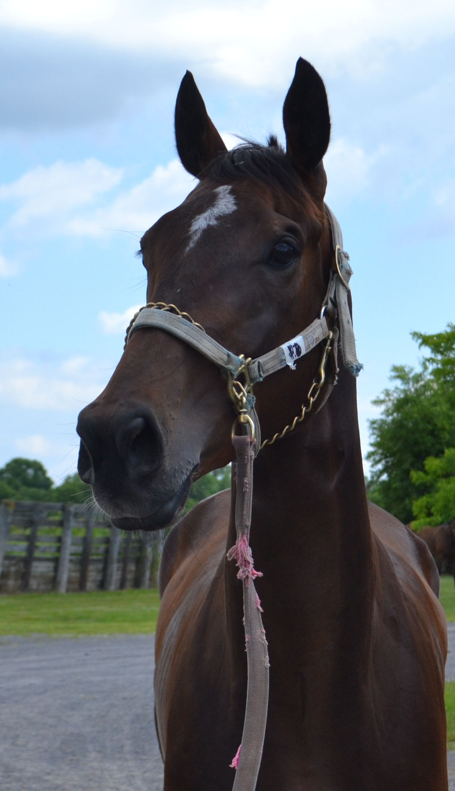
This big, kind eyed boy had our volunteers swooning. “Henry” had the gentle giant temper that so many shoppers are looking for. He walked quietly out of the shed row for his photo shoot and stood perfectly still despite lots of very loud machinery working behind the trees in a distance. This demeanor continued for his walk video (where he showed nice reach which should appeal to dressage riders) and for his jog video. His assistant trainer reports that he has a “super personality” and his groom reported him to be a “cool dude”. We think those are some pretty fabulous adjectives to describe a horse! He is lightly raced with only 8 career starts(earning $25,000 with 1 win, 2 seconds, and 2 thirds). His connections report that his legs are totally clean and he has not had any injuries. They also report he has no stall vices or behavior issues. He has started bleeding after his races, a condition that is very unlikely to impact him in disciplines less strenuous than racing. His trainer would love to see him go onto the hunter/jumper/equitation world and we could certainly see how he would fit in there, but we think he would also be an excellent dressage horse. Don’t miss out on this big, kind, sound gelding! Attaboy Henry is by Hal’s Image out of a Robyn Dancer mare. http://www.equibase.com/profiles/Results.cfm?type=Horse&refno=9659044®istry=T Price: $2500neg Contact: Michelle Tasso 585-472-2804 (text preferred. Please NO calls or texts after 8pm)
As always, a pre-purchase veterinary exam is recommended.
XY Runner, 2014, 16h Chestnut gelding
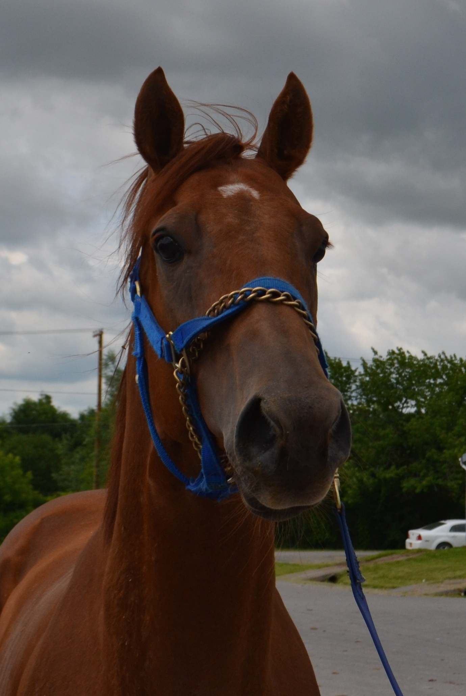
This $60,000 two year old was another super sweet, quiet, guy we had the pleasure of meeting on a beautiful day! XY Runner didn’t put a foot out of place despite a busy backside on this morning. His trainer reports this is very typical for XY. He is reported to be kind and easy to work around. He has earned over $46,000 in his 25 starts with 2 wins, 5 seconds, and 2 thirds. He is not likely to get taller, but we are fairly confident he will fill out off the track with turn out, good hay, and proper muscling. He jogged very quietly on the road, but we saw nice suspension and reach from the shoulder, and we feel he would make a great hunter prospect. Here’s a great opportunity to get the elusive young, quiet, sound, good sized gelding for a fabulous price! His trainer reports that XY does occasionally crib, but he does not wear a strap for this. It is likely this could be eliminated by using a cribbing strap/collar and lots of turnout! XY Runner is by Sidney’s Candy out of a Saint Ballado mare. http://www.equibase.com/profiles/Results.cfm?type=Horse&refno=9733874®istry=T Price: $1200neg Contact: Angel Lopez 315-719-4252
As always, a pre-purchase veterinary exam is recommended.
Gee N' Tee 2014 16.2 bay gelding
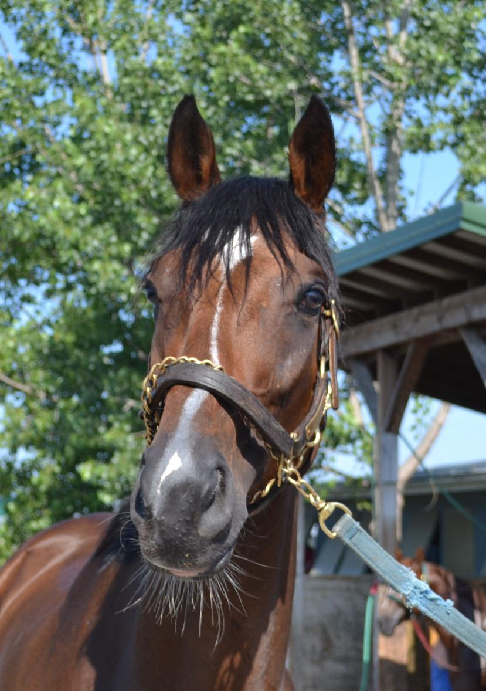
Here's a flashy guy who last raced on July 2, a dull effort that convinced his connections that he's just not going to perform in future efforts and best to move him on now. He was quite fidgety during his interview but the flies were out in force and he wasn't having it! Our volunteer photographer was very patient and did some dancing herself to get his conformation shots. His trainer/handler confirms that he is sound and has lost his heart for racing. He impressed as an athletic boy with a lot of energy to burn on a cross country course or perhaps in the hunt field, but he is a blank slate for just about any discipline. He is relatively lightly raced with 28 lifetime starts and 10 in the money finishes, which is a fairly decent race record. Although he started on the NYRA circuit, the majority of his races have been here at Finger Lakes. His trainer states that he has no vices, is good to gallop in the mornings and has good ground manners. Gee n' Tee is by Stormy Atlantic out of a Deputy Minister mare.
Price $2500
Contact Ortis Henry 315-830-1309
Pimm's Cup 2014 16 h ch gelding
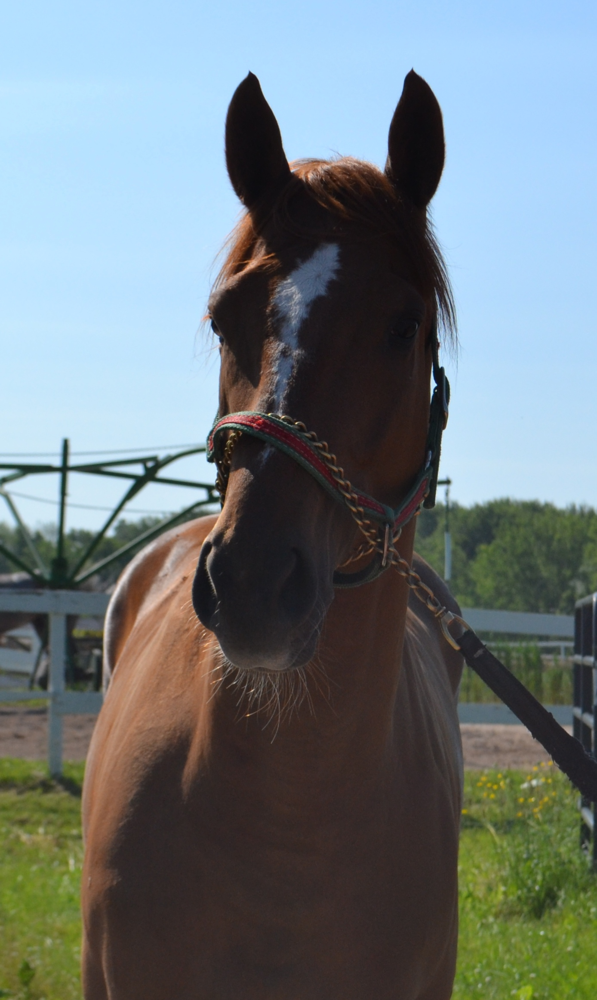
The beautiful Pimm was presented to us as a bit of a layup project after a stone bruise progressed to some lameness in the right front. Pimm's trainer had xrays done that show some rotation and he will need some corrective shoeing by a farrier familiar with founder and laminitis in horses. Pimm had an okay race record with 18 lifetime starts and 2 wins prior to his injury, his last race being 6/24/19 at Finger Lakes. We loved Pimm's gleaming coat and pretty head and face and are hopeful that someone will come forward to give him the help he needs. His xrays are available for review and Pimm's trainer can have a more detailed conversation about his condition.
http://www.equibase.com/profiles/Results.cfm?type=Horse&refno=9704683®istry=T&rbt=TB
Price $850
Contact Joe Cabrera 315-704-8256
Bustin Trudeau, 2017 15h chestnut gelding
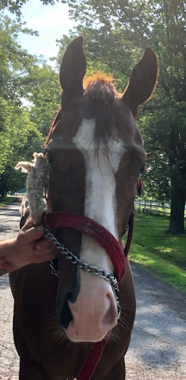
Located at a farm near the Finger Lakes Race Track, Farmington, NY He sure is cute, eh? And his clever name should bring a smile to our Canadian fans! This adorable unraced two year old is not showing enough racing potential in his morning training, so his owner has decided it would be best to find him a new career. With his clean legs, solid bodied and compact build, strong shoulder, and good movement, he can go in any direction you want -- and he does have published workouts on equibase as recently as June, so he is fully eligible for the 2020 RRP. While he will undoubtedly grow some more since he is only two, he is likely to remain under 16h, and we think that polo, barrels, or children's hunter are all promising outlets for him. His trainer says he is very sound, good to handle, but that he can occasionally try to sneak in a nip or two -- something that after his recent gelding, and with maturity, he should grow out of. While he is quiet, because he is so young and needs some time to mature, he would be better with an experienced OTTB retrainer. He is by Bustin Stones, who is a son of City Zip, and his stakes winning dam is by Concord Point, who is a son of Tapit. Price: $1,000 Contact: Mike LeCesse 585-303-9467 (call or text)
http://www.equibase.com/profiles/Results.cfm?type=Horse&refno=10279298®istry=T
As always, a pre-purchase veterinary exam is recommended.
Pure Quality 2015 17 h bay gelding
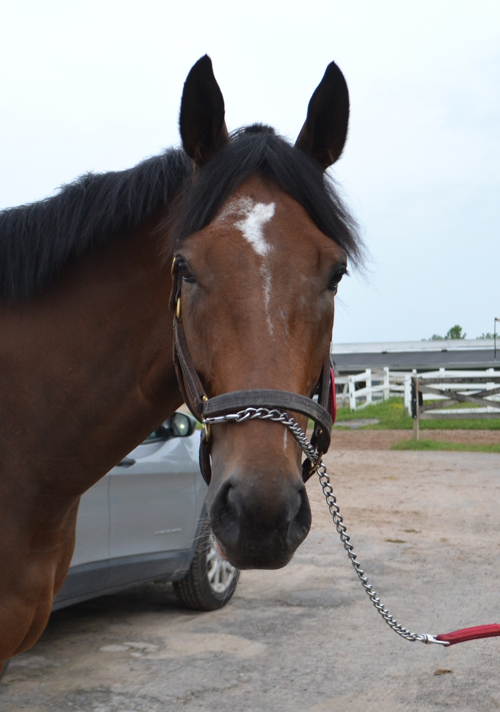
Here's a very impressive young gelding who is described as the proverbial "gentle giant". He is big, in height and substance, with good bone that could get him mistaken for a draft cross or WB. He has been barefoot since his shoes were pulled after his last race on June 24 of this year. He ran a game second that day but, unfortunately, he incurred a tendon injury that will need rehab, a relatively simple process with a calm, quiet boy like him and the tincture of time. He was ultrasounded after that last race and they are available for review by your veterinarian. Pure Quality is by Stormy Atlantic out of an Elusive Quality mare and, prior to his injury, he compiled a win and 3 seconds out of 9 lifetime starts. He was sound on the day we met him and was a perfect gentleman during his photo session. His owner/handler confessed that he is spoiled and loves his treats, but he's not obnoxious about it. His quiet, gentlemanly demeanor was striking because he has been out of training and is handling the stall rest with patience. There are videos of him galloping if you request them from his owner who will be happy to share them. This is one exciting prospect for the right person.
https://www.equibase.com/profiles/Results.cfm?type=Horse&refno=9842815®istry=T&rbt=TB
Price $1500
Contact Jan Keuer 315-651-5065
As always, a pre-purchase veterinary exam is recommended.
Meet the Mets, 2010 16.3 bay gelding: now at FLTAP
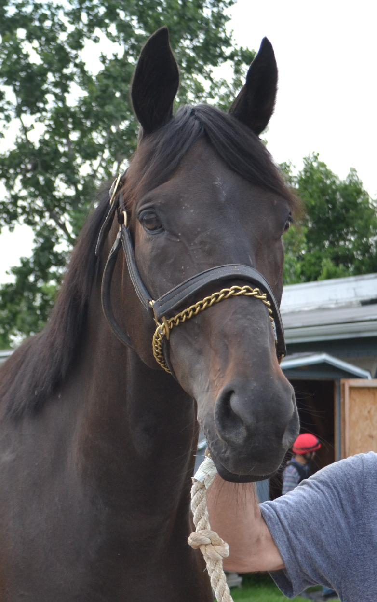
Hello handsome!
Our volunteers were excited to photograph and interview this big, beautiful boy who has earned his moniker as a warhorse. With 85 lifetime starts, 10 wins, 11 seconds and 15 thirds and over 210,000 in earnings, he has earned a retirement in a loving home, to be spoiled, turned out and brought along as a mount for your discipline of choice. This gelded son of Grand Slam out of a Slew City Slew mare has danced every dance, been claimed several times and is now just hoping for a perfect home off the track. His entire human family was present during his photo shoot to laud him with praise for his classy ways and his rider was there as well who proclaimed him "beautiful". He is without vices and does everything right. He does have some racetrack jewelry which does not affect his soundness. A big, beautiful and sound boy like this has a ton in the tank for his next life.
http://www.equibase.com/profiles/Results.cfm?type=Horse&refno=8886180®istry=T
Contact FLTAP at 585-500-5333
As always, a pre-purchase veterinary exam is recommended.
Bartletts Mark, 2015, 15.3h chestnut gelding: Now at FLTAP
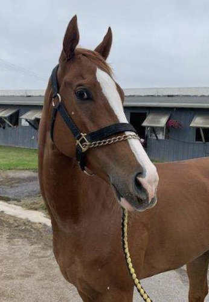
Located at a farm very close to the Finger Lakes Race Track in Farmington, NY (near Rochester, NY). Our volunteers didn’t meet Bartletts Mark in person, but his connections provided the below info, pictures, and video to get him posted. Mark’s connections haven’t had him very long, but they report he is super sweet and very personable who will definitely make someone a wonderful riding horse. They report he has raced since his two year old year without a substantial break and do not feel he is showing any additional potential in his racing career. He is lightly raced with only 14 starts with 1 win, two seconds, and two thirds. They recently moved him to a nearby farm where he can get some let down time, which should help ease his transition into other disciplines. They report that he does not have any vices or injuries. They feel he would benefit from some turnout time to loosen up his body, but he is retiring without any known limitations. We think this flashy boy will really turn heads wherever he goes! Bartlett’s Mark is by Midshipman out of a Honour and Glory mare.
https://www.pedigreequery.com/bartletts+mark Price: $1800 Contact: Beth Saul 315-573-2864
As always, a pre-purchase veterinary exam is recommended.
Santanoni 2013 16 h bay gelding
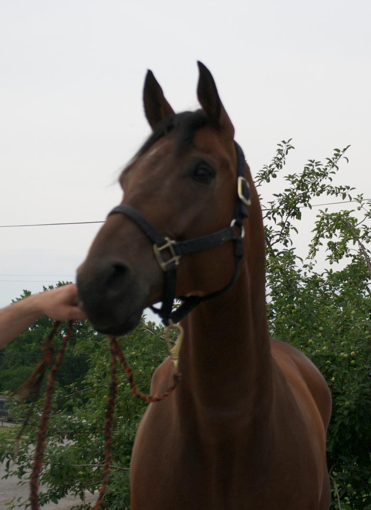
Here's a guy that ticks all of the boxes for any career but racing! He has good, solid bone, is sound has handsome good looks and his owner is pulling the plug after giving him all opportunities not to. He has no speed and is not competitive but he IS quite handsome. A lightly raced 6 year old, Santanoni has 8 lifetime starts and, while he did get a second and a third, he just can't notch a win. He is by Noonmark out of a Hook and Ladder mare. Santorini is described as sound, without vices and is an all around good guy with the potential to be whatever you desire.
Price $1500
Contact Michelle Tasso
As always, a pre-purchase veterinary exam is recommended.
TroubleinRiverCity, 2009, 16.3 hand, bay gelding
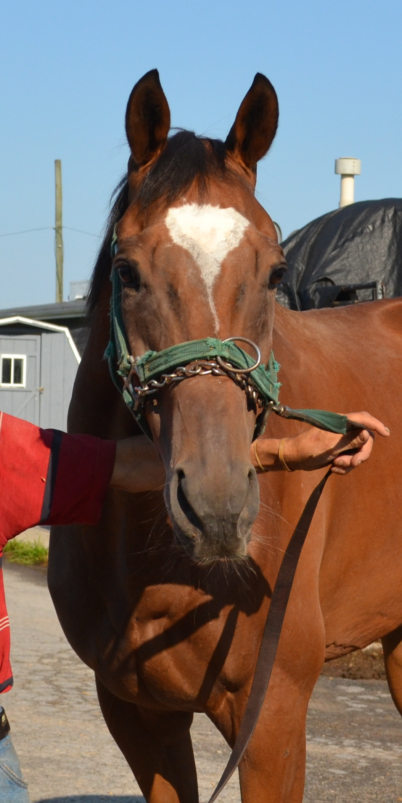
Located at Finger Lake Racetrack in Farmington, NY (near Rochester, NY). Our volunteers were absolutely in love with this true war horse! This guy’s trainer stated that he was so quiet, he’d get right on him in a halter and lead rope! He certainly showed as that as he jogged with both his trainer and then our volunteer, who reported that Troubleinrivercity stayed at her shoulder the entire time, adjusting his stride to meet hers! He is full of personality, waiting for head scratches and searching for peppermints. This guy is reported sound on clean legs and has no stall vices. If you’re looking for a tall, athletic, perfect gentleman, this is definitely the horse for you! Troubleinrivercity is by Trippi and out of From behind by Cloud Hopping. This guy has stayed sound for his 88 starts an has a very “been there, done that” attitude that will lend to a fantastic second career! Don’t let this one get away!
Price: $2,000 Contact: John (trainer’s brother) at 585-314-4111
As always, a pre-purchase veterinary exam is recommended.
Olivia’s Smile, 2014, 16 hand, chestnut mare
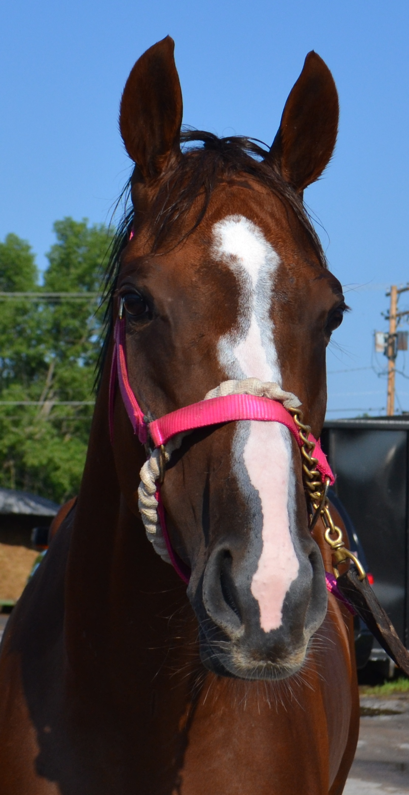
Located at Finger Lake Racetrack in Farmington, NY (near Rochester, NY). Olivia is her trainer’s favorite! She’s spent a ton of time on her farm, being handled by her mother who isn’t super familiar with handling racehorses. She is used to being turned out 24/7 and is low on the pecking order. Olivia is extremely easy to handle. She has a soft, sensitive mouth, is straight forward to ride, and loves to have a job. She is reported “sound as a dollar” on clean legs but just doesn’t want to run any longer. She is reported to be a mild cribber but the trainer has not tried to control it with a collar. Olivia’s Smile is by Midshipman out of Causin a Storm who’s by Giant’s Causeway. This sweet mare can go in any direction, but her steady, toe pointing trot suggests she’d make a lovely hunter!
Price: $2,000 negotiable Contact: Brooke Ficarella 585-944-6813
As always, a pre-purchase veterinary exam is recommended.
Twillie, 2015, 15.3 hand, liver chestnut gelding
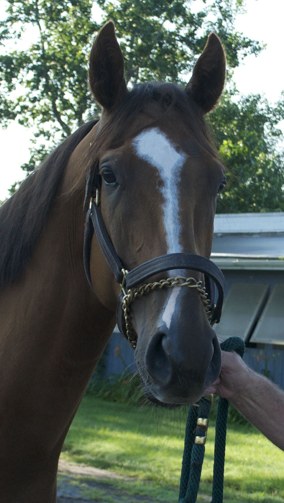
Located at Finger Lakes Racetrack in Farmington, NY (near Rochester, NY). If you’re looking for a sound, sweet, young guy, Twillie is for you! This guy is super easy to handle and have around. According to his trainer he is sound and vice free! He is quiet, very personable, and loves his scratches. With only 16 starts, this guy is already telling his trainer that he just doesn’t want to run. This guy is by the very popular stud Frost Giant out of a Fusaichi Pegasus mare. You don’t want to miss this volunteer favorite!
Price: $1,000 Contact: Tom Mueller 585-398-9942 (please note this is a home phone and he asks that you leave a message. Evenings are best to get a hold of him)
https://youtu.be/q4L5Foi1nrw
As always, a pre-purchase veterinary exam is recommended.
Ginger Al, 2016 15.3 -16h chestnut gelding
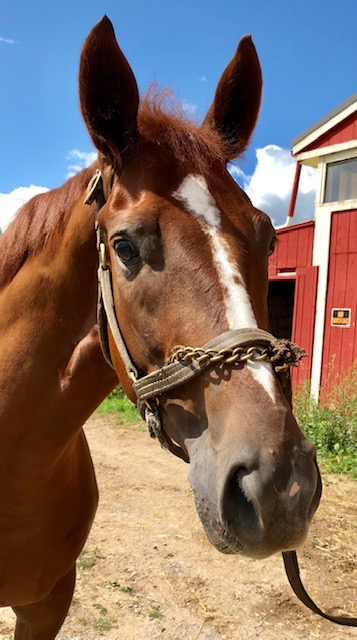
Located on a farm near the Finger Lakes Race track, Farmington NY Do you want a gorgeous and beautiful moving sweetheart of a TB who looks like a warmblood, is unraced, sound and clean legged, is going to finish growing into a big horse, and has a great sport horse pedigree? Well then step up for the fabulous Ginger Al, a son of Big Brown out a mare who is a Two Punch granddaughter. Ginger Al does have one race and several published workouts, so he is fully RRP eligible under their current rules. His trainer says he loves to work and tries hard, but while he is athletic, he is slow, and she does not think he is going to have any racing talent. She says he is very smart, and very good and responsive to ride -- she is also the person who gallops him. She described him as a beautiful mover, and when we saw him trot for his video we certainly agreed with her assessment -- he floats with great reach. She also describes him as a people lover cuddlebug, and she hopes he goes to a home that will love on him. He turns out alone or with other horses, ships well (He has often shipped to other tracks for his workouts), stands quietly to be groomed and for clipping and mane pulling. We observed this first hand, as he quietly tolerated having burdocks pulled out of his mane and forelock to get ready for his photos. Ginger Al has unlimited top level sport horse potential -- fancy enough for the show hunters, and with the build, pedigree and movement to excel in dressage or eventing as well. Price: $4,000 negotiable Contact: Dorothy Gentner 518-522-0229 (text or call)
http://www.equibase.com/profiles/Results.cfm?type=Horse&refno=10076842®istry=T
As always, a pre-purchase veterinary exam is recommended.
Swedenborg, 2016 16.1+h chestnut filly
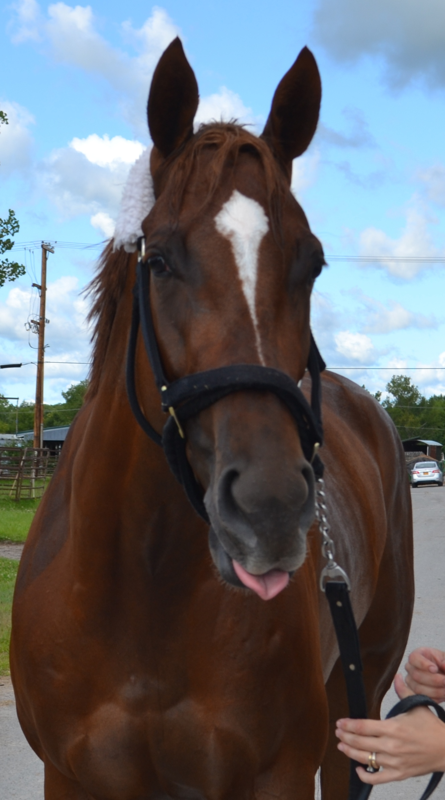
As her owner brought her out to give her a bath and get her ready for her glamour shots, we all oohed and aahed at what a gorgeous and solid bodied growing girl Swedenborg is! She blooms with dappled good health, and her owner says she is a very sweet and kind peppermint hound who lets her four year old twins love on her. Since winning for the second time earlier this year, Swedenborg has not fared as well against the tougher level of competition she must now face, so they want to move her on to a new career, where they hope she will find someone to love on her and keep her plied with peppermints. She has had 17 starts, with 2 wins and three seconds. Swedenborg is described as sound, and her legs are clean. For her jog video she displayed a smooth, balanced, flat kneed trot. She is only three, so she should grow some more, and with her solid build she will take up the leg of a taller rider. She has unlimited potential for any new discipline. She is sired by Gemologist, who is a son of Tiznow -- a very popular sire line for sporting disciplines. Her dam is by Henessey, and her second dam is a multiple stakes winner and stakes producer, so there is definitely broodmare potential in this young filly. Price: $2,000/ negotiable Contact: Ronnie Breed 585-749-7443
http://www.equibase.com/profiles/Results.cfm?type=Horse&refno=10108636®istry=T
As always, a pre-purchase veterinary exam is recommended.
"Chunky", 2016 16h bay gelding
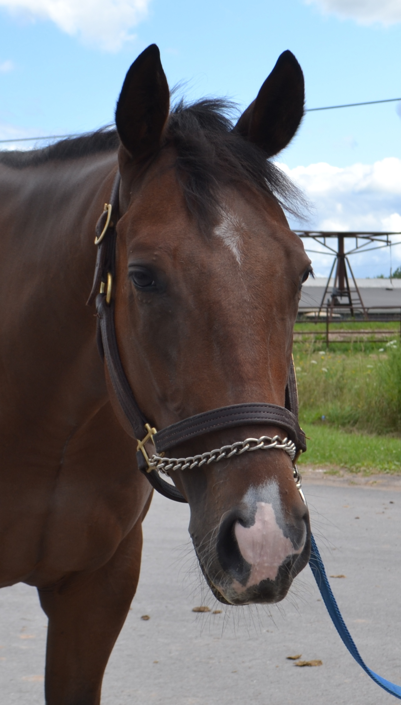
Located at Finger Lakes Race Track, Farmington, NY (near Rochester) His connections affectionately refer to this unnamed, unraced, but JC registered, completely adorable and very laid back young gelding as "Chunky." His nickname will give you some idea of why he is unraced -- eating and going slow in the middle of the pack are much higher on his agenda than speed. Because he is a big bodied and still growing young horse, they have not yet put a timed workout into Chunky, so he will not be RRP eligible under their current rules, although he is jogging and galloping on the track. Chunky is clean legged and sound -- as his trainer says, he has not gone fast enough to have put any strain on his legs. He is truly a blank slate that can go in any direction for a new career, but we think he would love disciplines where he can just trot and canter along in an even pace, such as show hunters or pleasure or trails. His trainer says he is very happy when he can trot along in a group in morning training, so we think he would love to go out with a bunch of horse and human buddies on trail rides or hunter paces. Chunky is by Bank Heist, out of Dustin's Magic by Grand Slam. His sire, Bank Heist, is by Maria's Mon, and that is one of the most coveted sire lines for sport -- in a recent issue of the Thoroughbred Makeover Magazine focusing on bloodlines for sporting/jumping disciplines, several experienced OTTB trainers said they would jump at the chance to get Maria's Mon offspring, who are good movers and jumpers with great brains. And Chunky's damsire, Grand Slam, is another line coveted for the same attributes. Price: $2,000 Contact: Hannah Lewis 607-661-3212
As always, a pre-purchase veterinary is recommended.
Paddy Kunuckles, 2010 16.1+ dk bay gelding
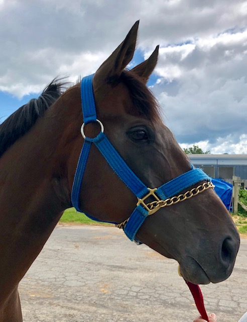
Here is another spectacular warhorse who brightened our morning with his shiny good looks and classy manners. He waited patiently in the road while we were busy with another horse and then posed perfectly for every shot. There was a language barrier with his handler/owner but it is clear that he has great affection for the horse and wants to retire him from racing while he is sound and sane. He jogged sound for us and showed no evidence of wear and tear from his accomplished career. Paddy Kunuckles (who doesn't want a horse with such a cute JC name??) has raced 87 times, mostly at Finger Lakes, with 8 wins, 7 seconds and 14 third place finishes and has been in the shedrows of quite a few trainers, so he has really been around the pike. This charming guy has loads of miles and potential for his future sporting career and, after some letdown, you will have a willing and wise partner for retraining. He is buy Friar (Arch) out of an Outofthebox (Montbrook) mare.
http://www.equibase.com/profiles/Results.cfm?type=Horse&refno=8851464®istry=T
Price $1500 negotiable
Contact Marisa 315-719-9665
As always, a pre-purchase veterinary exam is recommended.
Leinster Lass, 2015 16.2 bay filly: Retained for Racing
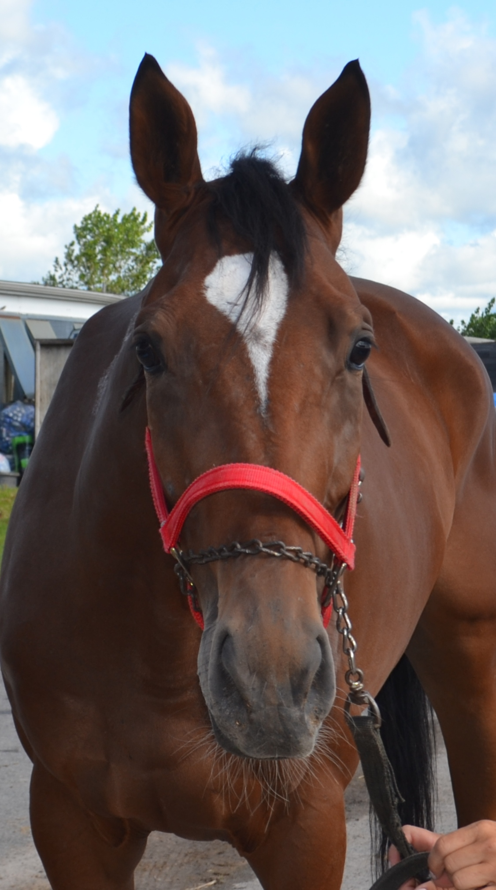
Located at Finger Lakes Race Track, Farmington, NY (near Rochester). This pretty and still growing girl has shown no racing ability in her 6 career starts, but we think she has unlimited potential for so many new careers. She has striking good looks, with an unusual white streak in her mane and a big heart in the middle of her forehead, and she has a nice toe pointing ground covering trot. Her trainer says she is a good girl, and sound. We observed clean legs, and she was certainly kind and obediant for her handler. We think she is going to grow some more, since she is still a bit butt high and has not grown into her leggy frame. So if you are looking for a big filly with a big step as a sport horse prospect, this one's for you! She is by Dublin, who is a son of Afleet Alex -- both sires known for good moving horses with good brains. We have placed several Dublin offspring in the last few years who are out enjoying eventing and hunter paces now. Her dam is by Smokin Mel, who is a Fappiano grandson. Price: $3500 negotiable Contact: Marisa (helping the trainer, due to language barrier) 315-719-9665
http://www.equibase.com/profiles/Results.cfm?type=Horse&refno=9921034®istry=T&rbt=TB
As always, a pre-purchase veterinary exam is recommended.
Devoted Wildcat 2009 15.3+ bay gelding
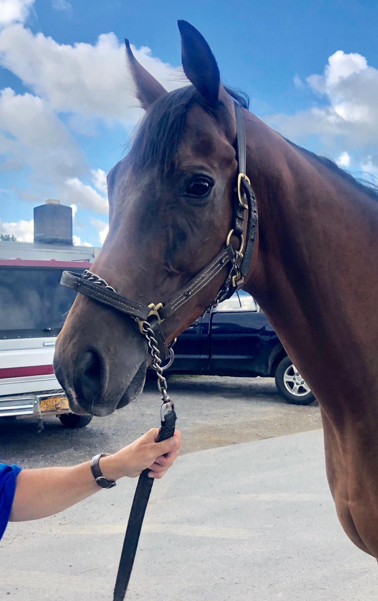
We've had some wonderful warhorses to offer this year and this guy is right up there as a volunteer favorite. This gorgeous horse is well traveled and has a variety of off track experience that gives him his been-there-done-that demeanor that is the hallmark of an older racer who has a lot of experience in their resume. With his 88 races all over the continent, he has amassed a whopping 14 wins, 13 seconds and 7 thirds, including a Stakes win and Stakes placement and $221,000 in earnings. His resume also includes lots of trail riding and ponying babies on the handler's farm in Canada. We loved his soft, wise eye and perfect composure while being photographed, as well as his nice shoulder and powerful hind end. He also demonstrated lovely, balanced movement at the jog and is absolutely sound. His handler also gallops him and relates that he has a great brain and never puts a foot out of place. This is a NICE horse for the money and one that we think has many miles left in him.
http://www.equibase.com/profiles/Results.cfm?type=Horse&refno=8584040®istry=T
Price $1500
Contact is Donna Bireta for trainer Ron Davies 585-281-3058
As always, a pre-purchase veterinary exam is recommended.
Ucantcatchmybreath 2015 16 h bay gelding
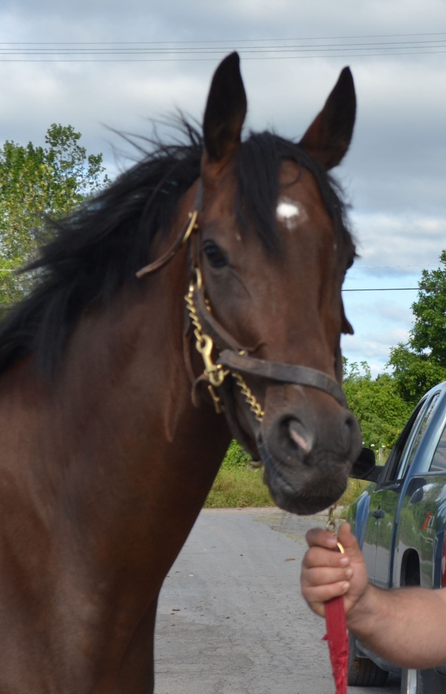
Not to be undone by the many gorgeous bay thoroughbreds we saw on a very busy morning, Ucantcatchmybreath wowed us with his gleaming dappled coat and flashes of cute movement. His handler was not accustomed to standing up horses for formal conformation pictures and his photographer gets kudos for capturing these beautiful photos. One of the grooms who was nearby offered that U is nice to work around, is without vices and is just not competitive after managing to break his maiden. He is Kentucky bred by Heavy Breathing (Giant's Causeway) out of a Leroidesanimaux mare (Leroidesanimaux is the sire of champion Animal Kingdom), so he sports an impressive pedigree. With only 7 lifetime starts, we think this youngster has an exciting future that should include some turnout before starting his retraining. He was very fresh on an unusually cool morning on the backside and the lipchain was a tool to keep everyone safe. Don't wait to call on this handsome young horse.
http://www.equibase.com/profiles/Results.cfm?type=Horse&refno=9865206®istry=T
Price $2000
Contact Ralph D'Alessandro 585-281-1029
As always, a pre-purchase veterinary exam is recommended.
New York Boy 2014 16+ bay gelding
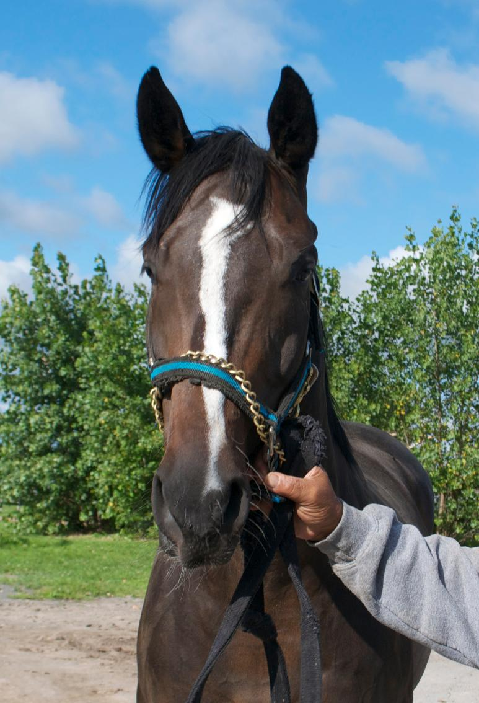
Here is a boy who ticks all the boxes if you like flashy, solid, dappled, young, sound and ready to move in a new direction. Since starting his racing career at Gulfstream Park, he has travelled to Turfway Park, Keeneland, Churchill Downs, Arlington, Aqueduct before landing at Finger Lakes in 2018. He last raced here on 7/4/18 when he sustained a bowed tendon which has been carefully rehabbed by his current owner/trainer. His vet has deemed his tendon 100% healed but would likely not hold up to the rigors of racing, but should be fine in a different discipline. His vet records, including recent ultrasounds, are available for serious prospective buyers. NYB is currently barefoot and his feet look great after his 13 month rehab on the farm. His owner has put a great deal of time and money into him in order to make sure that he is properly rehabbed before moving him on, and it shows. New York Boy is by Pollard's Vision out of a Kafwain mare. His race record reveals 50% in the money finishes over his 20 lifetime starts, which translates to an athletic individual who has wonderful potential in his future.
https://www.equibase.com/profiles/Results.cfm?type=Horse&refno=9655966®istry=T&rbt=TB
Price $1500 neg.
Contact Joe Cabrera 315-704-8256
As always, a pre-purchase veterinary exam is recommended.
I Win, 2012, 17h Dark bay gelding: retained by trainer.
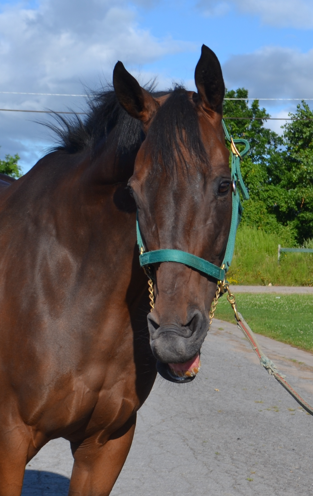
Located at the Finger Lakes Race Track in Farmington, NY (near Rochester, NY). Imagine all the fun you could have with this name in a sporting discipline! I Win has 38 starts under his belt with 3 wins, 5 seconds, and 4 thirds with earnings over $86,000. His connections report that despite his decent record earlier in his career, I Win is no longer showing much effort on the track and is letting them know he is ready to move onto a different career. His trainer told us “everything is perfect” on him that he has no soundness concerns or stable vices. He is a favorite of his trainer's daughter. She wishes she could keep him for a pony horse, but as we all know, you can't keep them all, so he is looking for a fabulous home. His groom had nothing but glowing reports for us about this boy. She reports he is a joy to work with. His connections sent us a nice video of him being ridden in a western saddle while still at the track. It’s not often we are able to get under saddle videos, so definitely take a look if you are on the hunt for a big, sound, gelding! I Win is by Silent Name out of a With It mare. Price: $3000 Contact: Adrienne D’Alessandro 585-281-1810
As always, a pre-purchase veterinary exam is recommended.
Starship Starlet, 2013, 17h dark bay mare
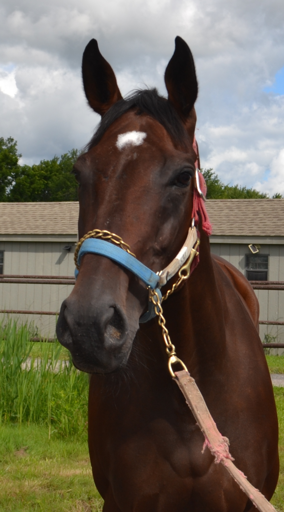
Located at a farm adjacent to the Finger Lakes Race Track in Farmington, NY (near Rochester, NY). This classy mare has all the good looks and athleticism that her connections thought would make her an excellent racemare, but Starlet has other plans. She hit the board only 1 time in her 14 starts. She is reported to be retiring totally sound and clean legged, she is just now showing any talent to make it worth continuing to race her. Her assistant trainer reports that she is super sweet and good to ride. Her groom also reported that she is easy to work around with no naughty habits. She has no stall vices. We Starlet’s coat is gleaming with dapples. She is well put together and we are sure she will turn heads wherever she goes-even without the chrome! Starlet is currently enjoying the more laid back farm life at a farm adjacent to the track. This should help her transition into her retraining for whatever comes next! We could really see this girl in the dressage ring, but surely she could go in many different directions. She definitely has some height to her so she would likely be a good fit for a taller, long legged rider. This is a bargain price for tall, sound, and good natured, so we suggest reaching out quickly if Starship Starlet seems like a good fit for you! Starship Starlet is by Congaree out of a Gold Token mare. Price: $2000 Contact: Michelle Tasso. Texts strongly preferred. Please NO calls or texts after 8pm. 585-472-2804
As always, a pre-purchase veterinary exam is recommended.
Pure Bliss, 2012, 16h bay mare
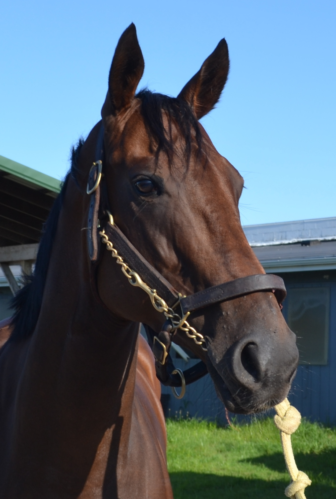
Located at Finger Lakes Racetrack in Farmington, NY (near Rochester, NY). There is a whole lot to love about this mare, so the name Pure Bliss is quite fitting for her! Bliss is a tall, stocky girl who might be a good fit for a taller rider. Her handler reports she is easy to work around and handle, and she didn’t put a foot out of place during her photo shoot. They also report she has no stall vices. Although Bliss doesn’t have lots of chrome, she certainly has lots of dapples to ooh and ahh over! Bliss, who sold as a yearling for $60,000, has earned over $118,000 in 58 starts with 6 wins, 9 seconds, and 10 thirds. Wow! Her trainer reports that she is just not training well enough to continue working her, so it’s time for her to move onto a new career. We think she could go in lots of different directions! Pure Bliss is by Pure Pride out of an El Prado mare.
http://www.equibase.com/profiles/Results.cfm?type=Horse&refno=9324331®istry=T&rbt=TB
Price: $1,000 Contact: Kaitlynn. 585-683-9854
As always, a pre-purchase veterinary exam is recommended.
Pressdamusic button, 2016, 16.1 bay gelding
Located at a farm very close to the Finger Lakes Race Track in Farmington, NY (near Rochester, NY). We think this would be an excellent name for the dressage ring! Music is a blank slate and could really go in any direction! His connections report he is retiring totally sound! He is lightly raced with only 12 lifetime starts (1 win, 2 seconds, 2 thirds). Since breaking his maiden, Music just hasn’t shown much interest in racing, so it’s time for him to find a new gig. His connections report he is super sweet and personable. They say he can be a very mild stall walker at the track during busy times of the day. He was very quiet in his stall when we observed him despite much of the barn being excited about horses unloading off the trailer, so it’s possible this won’t be an issue in a farm environment. Music is currently enjoying the easy life over at the farm, which should help him transition into his retraining process. At only 3 years old, Music is still growing. He is a bit butt high right now, so he would likely benefit from a bit more time to finish growing and filling out. He is going to be a big, beautiful sporting prospect for someone! This is seriously a bargain price for a young, sound, big gelding with a good mind. We suggest calling quickly as he ticks the boxes for many shoppers. Pressdamusicbutton is by Maclean’s Music out of a Humming mare. http://www.equibase.com/profiles/Results.cfm?type=Horse&refno=10078201®istry=T Price: $850 Contact: Jamie Boldt 585-943-4298 (text preferred)
As always, a pre-purchase veterinary exam is recommended.
Hackensack Hill, 2015, 16h+ grey gelding
Located at a farm very close to the Finger Lakes Race Track in Farmington, NY (near Rochester, NY). Cute, sound, with a great personality...all wrapped up in the highly coveted grey wrapper! Hackensack Hill is described as totally sound and quiet to work around. His connections report he loves to be cuddled in his stall and will wrap his head around you for hugs! They also report he has no stall vices and is retiring sound. He has 28 starts with 4 wins, 4 seconds, and 4 thirds. Three of his wins were this year and he is just not competitive enough for the racing conditions he is now qualified for, so it’s time to send him off to a new career! He will be quite the catch for some lucky person! Hackensack is now hanging out at the farm which should help ease his transition into his retraining process. He was quiet during his photo shoot and very excited to graze between pictures! He is by Congaree out of a Wiseman’s Ferry mare. Price: $2500 Contact: Jamie Boldt 585-943-4298 (text preferred)
As always, a pre-purchase veterinary exam is recommended.
Salsa River Girl, 2015, 15.3 bay filly
Located at a farm very close to the Finger Lakes Race Track, Farmington, NY (near Rochester). The beautiful Salsa River Girl is a trainer and FLF volunteer favorite, and we think she is the bargain steal of the season! Friendly, inquisitive, intelligent, sweet and cuddly in her stall, quiet and well behaved -- these are the raves that her trainer says about her! Salsa is described as sound, with no vices. And she is a very good mover, with a light lofty ground covering trot that shows her athleticism. With her deep girth, strong shoulder, good bone, great movement, and an exceptional sport horse pedigree, we think she is an outstanding eventing, dressage, or H/J prospect. She is likely to grow a bit more, but she's got plenty of substance to take up the leg of taller riders. While Salsa won a couple of races last year, this year she was letting her trainer know that her heart was no longer in the racing game. She has been hanging out on a farm very close to the track for a couple of months, so she is already completely let down and ready to restart -- and she is fully eligible for the 2020 RRP. Her sire is Two Step Salsa, who is gaining a reputation as a sire of good brained horses who are good jumpers and movers. He is from Seeking the Gold, Wavering Monarch, Seattle Slew and Storm Bird lines -- all great sport lines. Salsa River Girl's dam is by Champali, from the Dewan branch of the Bold Ruler line with Dixieland Band close up. Her second dam is by Northern Jove, who is a renowned sire of jumpers. For all that this filly has to offer as an exciting sport horse prospect, her bargain price should seal the deal! Price :$850 Contact: Jamie Boldt 585-943-4298 (text preferred)
As always, a pre-purchase veterinary exam is recommended.
Cause I’m Alex, 2011, 16.3h dark bay gelding
Located at the Finger Lakes Race Track in Farmington, NY (near Rochester, NY). This guy’s pedigree just screams talent, but his perfect personality and wise soul are equally desirable! Alex is by Afleet Alex, and out of a Giant’s Causeway mare. He has earned over $320,000 in his 52 starts with 12 wins, 9 seconds, and 11 thirds (WOW!!), all while remaining the barn favorite for his trainer’s assistant and her young children. He is described as a kindhearted warhorse, with a gentleman’s attitude and a wise soul. The assistant trainer was absolute gushing over Alex and was almost in tears when discussing having to send him off to a new home. She reports that her young children love Alex and he will very quietly stand to be pet, groomed, and even walked by them. Alex did have a small tendon injury about 8 weeks ago, but he has been rested since then and is jogging sound. He displayed very nice movement at the jog (even with some missing shoes) and was totally quiet despite being on stall rest for some time. He is reported to have no stall vices. We are confident this super classy horse will transition well to his new career. He will surely bring his athleticism, kind heart, and intelligence to a new discipline with ease. Please note: we forgot to take a picture of his front legs. Oops-we were busy oohing and ahhing over his adorable personality. His connections have a picture they can text to interested parties though!
http://www.equibase.com/profiles/Results.cfm?type=Horse&refno=9178744®istry=T
Price: $1,000neg to excellent home Contact: Kaitlynn 585-683-9854
As always, a pre-purchase veterinary exam is recommended.
Blessingoracurse 2015 16 h bay filly
After meeting her our volunteers are confident that she can definitely be your next blessing in horse form! This lovely young lady was very patient and classy while she was stood up for pictures, even as the morning routine bustled around her. She was very polite and quiet and her owner/trainer explained that this is typical behavior for her. She was covered in dapples and he said that, even with her winter coat, she was dappled in February. She's built like a tank on sound legs and just hasn't put much effort into her racing career. Since breaking her maiden in October 2018 she hasn't managed to hit the board and it's clearly time to throw in the towel and transition to her new career. We think this lovely young filly has a ton of potential in another discipline after spending some time in turnout to recharge her batteries. She is by Teuflesberg (Johannesburg) out of a Personal Flag mare,
Price $2000 neg.
Contact Dave Houck 585-259-9420
http://www.equibase.com/profiles/Results.cfm?type=Horse&refno=9896747®istry=T
As always, a pre-purchase veterinary exam is recommended.
Reason for Gold 2016 16.3 ch gelding
Reason for Gold is a tempting prospect for someone looking for a large gelding who will probably top out at 17 hands. He is lightly raced with 8 lifetime starts and 4 in the money finishes and, while his owner/trainer will continue to race him, he is not confident that he will jump up and become competitive with the conditions he has. As often happens, some horses are able to eke out one win (usually at lower level claiming races) but just can't progress beyond that. He impressed us with his gentlemanly behavior and unflappable personality, even as his stable mate jumped and rollicked on the walker right next to us. His handler relayed that he has absolutely no vices, is sound and never puts a foot wrong. He also explains that he is happier in turnout than being in a stall and feels that he would be a good candidate for 24/7 turnout. Reason for Gold is very nicely built and is still butt high so we think he will be magnificent when he finishes growing and maturing. He is by Bob and John (Seeking the Gold) out of a Full Mandate mare.
Price $3500 OBO
Contact Joe Cabrera 315-704-8256
http://www.equibase.com/profiles/Results.cfm?type=Horse&refno=10100634®istry=T
As always, a pre-purchase veterinary exam is recommended.
Montybythemarsh, aka Monty, 2015 17.1h dark bay gelding
Located at a farm in Clifton Springs, NY, near Finger Lakes Race Track. Here is a huge, stunning, almost black gentle giant who is the true blank slate to start your way. Monty is unridden, and unregistered, but you can undo those "uns"! He has been saddled and bridled, but his owner/breeder just has not had the time to get him trained to ride. But that means you can start him exactly how you prefer, for the discipline of your choice. Monty is a true 17.1 hands -- we sticked him -- and he may well still grow some more. He is a beautiful mover with spring and reach -- you can hear observers say a spontaneous "wow" on his jog video. Monty is also a very quiet and laid back gentleman -- his handler reported that her 7 year old child handles him, and as you can see on the video, he jogged with just a lead rope, no chain. Monty is completely sound, with clean legs. His owner took her time in letting him grow and mature, and then realized this year that he was just too big to try to make him into a race horse. She thinks he would make a spectacular dressage prospect, and we also think that he could stand out in the show hunter ring, or in jumping and eventing. Monty is a half brother to Noontime Girl, out of the same dam. His sire is Marsh Side, who is a son of Gone West and was a stakes winner running long on the turf -- attributes that usually translate well to eventing. We have placed other Marsh Side offspring that are also big and beautiful movers with great brains, and they are succeeding as show hunters and in dressage. His dam is Meringue, who is Smoke Glacken, who is by Two Punch. This sire line is much sought after in the eventing and jumping world. Huge young gorgeous fancy moving and quiet horses with superstar potential like Monty don't come around very often, so move fast if you want to be the lucky one to take advantage of this rare opportunity. Price: $7500 Contact: Chris Nunn 315-374-1877 (text preferred)
As always, a pre-purchase veterinary exam is recommended.
Noontime Girl, 2014 16.3h dark bay mare
Located at a farm in Clifton Springs NY, near the Finger Lakes Race Track. Big, beautiful, a great mover, and a kind temperament -- Noontime Girl has it all, and she is going to make a great sport horse for a taller rider. And she is a half sister to "Monty," out of the same dam , just as fancy and gorgeous as her younger bother, almost as big, and unlike her brother, she is fully trained to ride, RRP eligible, and available at a fraction of his price! She is a homebred, so you can learn her entire history. She had four races last year, with one second, but then she got an irritated tendon from a poor leg wrapping job, known as a "bandage bow." So she came back to her owner/breeder's farm, and now her leg is cold, tight, and fully healed, she is completely sound, and she has no limitations for any new discipline. Her owner thought about sending her back to the racetrack, but realized that by the time she got racing fit again, it would be near the end of the racing season, and as a five year old who has not yet broken her maiden, if she did not win a race right away Noontime Girl would not be eligible to run next year. So her owner decided that the timing was best to find her a new career. Noontime Girl enjoys turnout, and her groom raved about her as a great mare to work with who loves her person. Noontime Girl jogged politely with just a lead rope, no chain, and showed a flowing trot with great reach, even though there was limited space on the farm to really let her trot out. We could tell that she is one impressive mover -- her owner/breeder says that every horse produced from her dam has been a great mover. Noontime girl is by Noonmark, who is a son of Unbridled's Song. Her dam, Meringue, is by Smoke Glacken, who is by Two Punch. These are sire lines coveted in the sport horse world. We think this big fancy mare is quite the bargain! Price: $1,500 Contact: Chris Nunn 315-374-1877 (text preferred)
http://www.equibase.com/profiles/Results.cfm?type=Horse&refno=9724786®istry=T
As always, a pre-purchase veterinary exam is recommended.
Dark Coffee, 2016 17h dark bay colt
This gorgeous young big colt is very sweet and laid back, and would make an equally gorgeous gelding -- but with his pedigree, we also think that if you are looking for a TB stallion to pair with warmbloods for sport horses breeding, he is well worth considering. Dark Coffee had only one race, in late November of his 2yo year, and in December, after a workout down in Florida, he was diagnosed with a knee chip.He had surgery to remove the chip and was carefully and fully rehabbed, and he went back into race training this summer. He has been breezing steadily since July, with several timed workouts, so he is fully RRP eligible. But his knee got slightly sore after his latest breeze and his connections feel that given his size, he may not hold up to racing, so they want to find him a new career. We saw him two days after hie breezed, and he jogged soundly, showing off very good ground covering movement. The assistant handler, who is the contact person, says that Dark Coffee has a great disposition, is very good to handle, and is not at all studdish. We saw this for ourselves -- he was very friendly and quiet for his photo session. He has been turned out with geldings, and gets along fine. She said he cribs slightly on occasion in his stall, but rarely cribs when he is turned out. Dark Coffee is by Warrior's Reward, who is a son of Medaglia D'Oro, from the El Prado/Sadler's Wells sire line so coveted by the sport horse/jumping world. His dam is by Strong Hope, who is a son of Grand Slam, another sire much loved in sport horse disciplines. This big gorgeous sweetheart is offered at a bargain price to an approved good home that can see his potential for many new careers. While upper level eventing and jumping may not be in his future, lower levels and dressage could be suitable. Price: $1,000 negotiable to an approved good home Contact: Michelle Tasso 585-472-2804 (text preferred; do not contact after 8 pm).
http://www.equibase.com/profiles/Results.cfm?type=Horse&refno=10055854®istry=T&rbt=TB
As always, a pre-purchase veterinary exam is recommended.
Mom's Touch, 2013 15.3h+ dark bay mare: retained by owner
Located at owner/breeder's farm in West Falls, New York, near Buffalo. Mom's Touch is a homebred from an owner/breeder whose horses are lovingly cared for, well trained, and all of those we have listed have gone on to great success in new careers ranging from dressage to eventing. Mom's Touch should be no exception -- she has the uphill build, good mind, soundness, and great sport horse breeding that should make her very successful in many new disciplines. Her conformation and temperament and movement warranted her winning the award for best overall TB at a breeders' show when she was a yearling! Her track trainer says she is a sound and very nice horse to be around and work with, and has no vices. Her owner is ready to retire her from racing and move her on to a new career because after she won another race this spring, she has performed less successfully against the tougher competition she then had to face. Mom's Touch has had 32 career races, with 3 wins, 7 seconds, and 6 thirds -- this 50% in the money rate shows what a competitive, hard trying athlete she is -- traits that will transfer well to a new sporting career! Mom's Touch is sired by Touch Gold, who is a son of Deputy Minister out of Buckpasser mare. Her dam is by Comeonmom, a son of Jolie's Halo, who is b y Halo. And her dam's broodmare sire is by With Approval, who is a son of Caro. These are great bloodlines for jumping, eventing, or dressage. Price: $3500, negotiable only to an excellent approved home Contact: Linda Reading 716-949-8112 (text preferred)
http://www.equibase.com/profiles/Results.cfm?type=Horse&refno=9562604®istry=T
As always, a pre-purchase veterinary exam is recommended.
The Glominator 2016 16.1 bay gelding
Here is a son or racing royalty, Animal Kingdom (by Leroidesanimaux), Kentucky Derby winner, who was bred to be a contender on racing's most prestigious stages, but DNA doesn't translate to stardom and Glommie didn't get the memo! His first two races were last summer at Saratoga where he didn't show prowess at the Maiden Special Weight level and he has dropped through the ranks and still doesn't show racing prowess at Finger Lakes. He has had 17 attempts to break his maiden and his absolute final race will be on 9/4/19 at Finger Lakes, after he which he will be officially retired. His trainer thinks that he was meant to be a turf horse and would make an appealing eventing mount, and that he needs to mature and grow into himself to be successful in his next discipline. His demeanor during his photo session was impeccable and that's the class breeding showing through. He is a lovely, young gelding with a boatload of potential with his looks, soundness, class and youth making him an exciting prospect for someone who recognizes his youth and can bring him along correctly.
Price $3000
Contact Alex Hillegass 484-896-8754
http://www.equibase.com/profiles/Results.cfm?type=Horse&refno=10225679®istry=T&rbt=TB
As always, a pre-purchase veterinary exam is recommended.
Semper Paratus, 2016, 16h, dark bay gelding
Located at a farm adjacent to the Finger Lakes Race Track in Farmington, NY (near Rochester, NY). Semper Paratus means “always ready” in latin and is the official motto of the US Coast Guard. This handsome boy certainly seemed to have an “always ready” personality when we met him! Semper Paratus is described as totally sound and intelligent, but not showing any racing potential. His connections recently took him to a different race track to see if he would be more successful on different footing, but ultimately they have decided his heart just isn’t in the racing game. His groom told us that he is good to handle and does not have any stable vices. He seems like a guy that enjoys having a job to do. Semper Paratus is built like a TANK. He could be in the running for one of the stockiest horses we have ever listed. He would be an excellent choice for a long legged rider that needs a big barreled horse to take up their leg. Despite a very loud, unusual noise in the distance during his jog video, Semper Paratus was well behaved and showed lofty movement with good shoulder reach. At only 3 years old, he likely will still grow a bit more, so he could really finish out as a massive dude! This $47,000 yearling is by Flatter out of a More Than Ready mare. http://www.equibase.com/profiles/Results.cfm?type=Horse&refno=10108599®istry=T&rbt=TB Price:$2000 Contact: Michelle Tasso (text preferred. No calls or texts after 8pm). 585-472-2804
As always, a pre-purchase veterinary exam is recommended.
Not a Coupon, 2014 17 h bay gelding
Riders searching for big, handsome and from fantastic sporting lines may need to consider this gentle giant. He is one of the handler's favorite horses and he jokingly references his forward momentum, which is formidable when he's intent on grazing. He trains well in the morning and has no soundness issues but he just doesn't bring his A game in the afternoons when it matters most. This is a big boned fella who is described as easy to work around and without vices. He is Kentucky bred by Fappie's Notebook, from the Fappiano line, out of a Party Manner's mare. He has had just one win out of 33 lifetime starts with 10 in the money finishes and his connections would prefer not to keep him over the winter, but move him on now. This guy has the potential to be an amazing sporting discipline mount with his light movement at the jog and ground covering stride. Coupon comes with a big ticket but the owners are willing to negotiate to the right home.
Price $7000
Contact Kathy Babcock 585-704-1357
http://www.equibase.com/profiles/Results.cfm?type=Horse
As always, a pre-purchase veterinary exam is recommended.
Couzier 2014 16.2 bay gelding
Our last gorgeous tall, dark and handsome of the day was just as spectacular as the ones before him. It was hard to pick a favorite of the day but this guy is definitely in the running. He has been with his current connections for about four months and, like his stablemate, he needed to put on some weight. His current connections says he is a "doll" to gallop, is very sweet and cuddly and is an all around good citizen. He has spent some time on the family farm and does very well in turnout with a herd. Other than his good looks, Couzier also sports a great pedigree. He is by Malibu Moon (A. P. Indy) out of a Ghostzapper mare. He was a $90,000 two year old and he went on to be a decent racehorse. Of 29 lifetime starts he has compiled a race record of 4 wins, 2 seconds and 3 thirds. He is another fellow who has raced at multiple tracks along the East coast and his only race here was on 7/27/19 at Finger Lakes. His trainer states that he has been fairly heavily raced this year and would certainly benefit from a period of turnout, preferably with plenty of attention, treats and scritches.
Price $3000
Contact Dylan Clarke 352-286-7559
http://www.equibase.com/profiles/Results.cfm?type=Horse&refno=9694281®istry=T
As always, a pre-purchase veterinary exam is recommended.
Southern Commission 2014 16.2 dk bay gelding: retained for racing
Lucky for us, we kept meeting tall, dark and handsome boys all morning! This hunk comes to Finger Lakes by way of Charles Town and Parx, where he had his most successful racing. After 34 starts with 3 wins and 4 third place finishes, his competitive edge has waned so it's time to move him along, although he is entered to race on 9/4/19. Southern Commission's trainer also gallops him and says he is perfect in training and his other regular rider claims him as a favorite. He is described as very sweet and well mannered on the ground, absolutely sound and without vices. By the time the volunteers got to his barn it was later in the morning and his legs had already been done up. Serious buyers can ask the contact for pictures without bandages. He came into his current barn underweight and his connections have successfully worked to put pounds on him, which he says has been easy with enough grain and plenty of hay. He is a Florida bred by Field Commission out of an Orientate mare.
Cost $3000
Contact Dylan Clarke 352-286-7559
http://www.equibase.com/profiles/Results.cfm?type=Horse&refno=9666045®istry=T
As always, a pre-purchase veterinary exam is recommended.
Bullion Babe, 2016, 16h, dark bay filly
Located at the Finger Lakes Race Track in Farmington, NY (near Rochester, NY). This flashy girl will have you standing out wherever you go! We admired her dappled coat and bright whites on the sunny day we did her listing. Her trainer reported that she is retiring sound and has never had any injuries. She is lightly raced with only 13 starts (1 win, 2 seconds, and 1 third) and her connections just feel she is not competitive enough. They report that she is very easy to work with, wonderful to ride, and has a very classy demeanor. Her trainer thinks that she could be a good prospect for someone looking to get into the OTTB world with professional guidance. It is reported that she is a mild cribber only at feed time. She has never tried using a collar, so it’s possible that would eliminate it. We’ve also seen improvements after adding daily turnout and ground feeders. Bullion Babe is by Goldencents out of a El Corredor mare. Price:$2000 Contact: Hanna Lewis 607-661-3212
A pre-purchase veterinary exam is recommended.
Loyal Heart 2013 15.3 ch mare
Pay no attention to that rather pronounced lordosis! This mare has been the real deal on racetracks up and down the eastern seaboard. She only raced twice at Finger Lakes after a year off and has not returned to her winning ways, but, after looking her up on Equibase we also note that she is very well bred. Her sire is Eskendereya, a son of Giant's Causeway, who is also sire of the superstar sprinter Mitole, a candidate for this years HOTY. Mitole just easily won another Grade 2 Stake at Saratoga in August. Her dam is by War Chant, a son of Danzig out of a champion race mare, Hollywood Wildcat. Loyal Heart's second dam is Wavering Girl, who was a Canadian champion and also a Grade 1 stakes producer. Her third dam, Battle Creek Girl, is a superstar broodmare, multiple graded stakes producer. In other words, Loyal Heart is by a top sire from the Giant's Causeway line, and from a very rich stakes producing and winning female family. Along with her solid race record, she has excellent broodmare potential. As for her demeanor, she had a very quiet, been-there-done-that presence, which is not surprising considering the travelling she has done throughout her career. She also showed the nice movement of a classy, well bred animal with no signs of unsoundness. Language was a barrier with her handler but please note that her contact person, while she may not have much information about this specific horse, can get information for you.
Price $2000 neg.
Contact Marisa (for Nelson) 315-719-9665
As always, a pre-purchase veterinary exam is recommended.
Trek, 2014 16.1h bay gelding
Hey Star Trek fans, this cleverly named son of the mare Starship Cruiser should be right in your galaxy. We were drawn in by Trek's beautiful head, kind eye, and very friendly personality. His solid bodied good looks, good movement, and excellent pedigree add to the attractive package. Trek is lightly raced, with only 4 starts. He was showing good racing talent with close up placings at the maiden special weight level, but last year in his fourth start, another horse ran up into his hind legs and cut his hind tendon. He went to his owner/trainer's farm where she properly and patiently rehabbed him, and he is now fully healed and cleared for any discipline. All you can see is a slight bump on the tendon. Trek just returned to the track, but his trainer realizes she does not have time to get him racing fit again before the end of this year's Finger Lakes meet, and Finger Lakes does not permit 6 year olds who have not won before to race there. So Trek is ready to move on to a new career. The trainer's son, who is an exercise rider, reported that he recently tacked Trek up, took him for a ride on the track, and that Trek was perfectly behaved, "very chill, "bowed his head, and calmly strided out and like he had never had any time off. Now that's a sensible horse who wants a job! Trek was a $75,000 yearling. He is by champion sire Awesome Again, and his stakes placed dam Starship Cruiser is by Golden Missile, a son of AP Indy, and out of a stakes winning Fappiano mare. The Deputy Minister, Blushing Groom, AP Indy, and Fappiano lines in his pedigree bode well for his sport horse potential. An excellent home is essential, and this owner/trainer appreciates being able to follow her horses and likes to get frequent updates on their post-track life. Price: $3,000 negotiable Contact: Judy Turetsky 315-415-3550
http://www.equibase.com/profiles/Results.cfm?type=Horse&refno=9668061®istry=T&rbt=TB
As always, a pre-purchase veterinary exam is recommended.
Wild Frost, 2014 16.1h dark bay mare
Frost Giant fans, take a look at this striking daughter of that fave sport horse sire! This dappled beauty has let her trainer know that her heart isn't in racing any more, but that opens up a great opportunity for people looking for a sport horse prospect who has no limitations for any new discipline. Wild Frost is relatively lightly raced, with 19 starts, 1 win, 3 seconds and 2 thirds. Since her trainer decided it was time to move her on from racing, she recently pulled Wild Frost's shoes, so the mare was a bit footsore jogging barefoot on pavement, but we could see that she is a nice mover, which is typical for Frost Giant offspring -- and they tend to be very good jumpers too. Wild Frost is described as sound and without any vices. She toes out on her right front, but her trainer says this has never caused her any issues or soundness problems. Since Wild Frost has been doing nothing but walking the shedrow for a month since her last race, she could benefit from some turn out time to let her down from the track but then she will be ready to restart for her new career. Her pedigree is ideal for jumping disciplines. Her sire Frost Giant has sired many successful eventing and H/J horses, and he is by Giant's Causeway out of a Gone West mare. Wild Frost's dam is by Yankee Victor, who is from Halo and Caro lines, and her dam's sire brings in another cross of Caro. Wild Frost's full sister is a stakes winner on the NY circuit, so she also has good broodmare potential. A good home is essential. Price: $2,000 negotiable Contact: Stacy Torelli 585-506-7663
http://www.equibase.com/profiles/Results.cfm?type=Horse&refno=9776506®istry=T&rbt=TB
As always, a pre-purchase veterinary exam is recommended.
Tommaso, 2012 16.2 dark bay gelding
"Tommy" is all class, a beautiful mover, and a much loved homebred who looks and moves like a potential sport horse star! And he is also a kind and friendly guy, who kept nuzzling us and his handler as we admired him. Indeed, "Tommy" is so much admired that he got a huge plug from another trainer, who saw us taking his photos and video, and who made the effort to come up to us and tell us that Tommy is a gem, a great horse, all class, always well behaved, always hard trying, and will be a wonderful horse in a new career. After 4 wins and 12 in the money finishes in 45 career races, Tommy is ready to move on to a new discipline as a horse who is clean legged, sound, happy, and still eager to work. His owner/trainer says he is sound, a great horse to handle, very kind, with no vices. We spoke to the owner/trainer's son, who is an exercise rider, and he says that Tommy is great to ride, never does anything wrong, and is eager to do what his rider wants. Tommy impressed us with his dappled beauty, balanced build, strong shoulder, intelligent eye, and eye catching lofty movement with good push from behind and reach from the shoulder. He is by Raffie's Majesty, from the His Majesty/Ribot sire line, and out of a mare from Mr. Prospector, Buckpasser, and Prince John/Princequillo lines. These are stout and durable TB lines that have produced many great jumping and dressage horses. We have placed some of Tommy's half siblings out of the same dam, and they are eventing and competing in dressage. Tommy has enjoyed winter turnout on his owner's farm, gets along well with other horses, and he is the perfect age to be ready to go right to work in his new job. Trust us -- Tommy is a fabulous horse, and his owner/trainer will insist on a fabulous home. So be ready with your references to convince her you are worthy of the great Tommaso! She appreciates new homes that keep in touch and regularly send her updates on her horses. Price: $2500 negotiable to an excellent home Contact: Judy Turetsky 315-415-3550
http://www.equibase.com/profiles/Results.cfm?type=Horse&refno=9320522®istry=T
As always, a pre-purchase veterinary exam is recommended.
Bennington Drive, 2015, 15.3h, bay gelding
Located at a farm very close to the Finger Lakes Race Track in Farmington, NY (near Rochester, NY). This flashy boy will have you standing out wherever you go! We admired his dappled coat and bright whites on the sunny day we did his listing. His trainer reported that he is retiring sound and has never had any injuries. He has 26 starts under his belt with 2 wins, 5 seconds, and 4 thirds, but just hasn’t been as competitive during this meet, so his connections are ready to move in onto a new discipline. They report that he is very easy to work with, wonderful to ride, and has a very classy demeanor. His trainer told us that he is “the absolute sweetest” in his stall and loves to cuddle and be brushed. She reports that during the busy time at the track, he can be a stall walker, but that this behavior goes away when on the farm. We had some extra time visiting with him prior to his photo shoot and he was totally quiet hanging out in his stall, so we do not think this will be an issue at the farm, especially when he starts getting turnout. Bennington Drive is by Emcee out of an Empire Maker mare. http://www.equibase.com/profiles/Results.cfm?type=Horse&refno=9900983®istry=T Price:$850 Contact: Jamie Boldt 585-943-4298 (text preferred)
As always, a pre-purchase veterinary exam is recommended.
Bear Tracks, 2009 16h dark bay gelding
Dazzling dapples for days! Bear Tracks is a gorgeous, solid bodied and truly amazing war horse who is still sound and happy after dancing every dance for many trainers in many races over the years. He has racked up 110 starts,with 42 in the money finishes, 9 of them wins over his remarkable career. While Bear Tracks' heart is still in the game, he is just not as competitive this year as he has been in the past, so his trainer knows it is now time to let this much loved wonderful horse move on to a new career. His legs are clean, and he is a very good mover, with a light spring to his ground covering step. Any horse who has held up this well and stayed sound and happy over such a lengthy career is surely truly durable and uses themselves very well-- and he will hold up for a lot more years! His trainer says he is a well mannered and smart horse, great to have in the barn. Do not let Bear Track's age deter you -- this is one great horse, and stunning to look at! He is by Medallist, who is a son of Touch Gold. His dam is by Northern Idol, who is a Northern Dancer grandson. Halo, Deputy Minister, Dixieland Band, Private Account and Buckpasser are other sires in his pedigree who are sought after in sport horse pedigrees. Price: $1,500 negotiable Contact: Eddie Maver 786-285-2047
http://www.equibase.com/profiles/Results.cfm?type=Horse&refno=8688330®istry=T&rbt=TB
As always, a pre-purchase veterinary exam is recommended.
Town Tart, 2013 16h dark bay mare
This gorgeous dappled beauty is a favorite of all of the FLF volunteers who have seen her on two different occasions -- and she is a trainer favorite too! She is beautiful, and her trainer says she is a kind, mellow mare who is great to work with, sound with no vices. She has been a good race mare, with 4 wins and over $112,000 in earnings in only 23 starts. She has won or placed at the top tracks such as Belmont and Aqueduct and Keeneland, and she has run well on turf and dirt. This admirable record is the sign of an athletic and versatile mare with a great work ethic -- all traits that bode well for success in a new sporting career. Town Tart is ready to move on to a new career because this year her heart just isn't in racing anymore. She posed like a model for her photo session, and then she jogged politely alongside her trainer on a loose lead, showing good ground covering movement. She is by Tizdejavu, who is a son of Tiznow. Her dam is an Unbridled's Song granddaughter. These are exceptional sport horse lines! Price: $1500 negotiable Contact: Eddie Maver 786-285-2047
http://www.equibase.com/profiles/Results.cfm?type=Horse&refno=9537776®istry=T
As always, a pre-purchase veterinary exam is recommended.
Surtap, 2013, 16h+ ch gelding
Located at the Finger Lakes Race Track in Farmington, NY (near Rochester, NY). This handsome son of Tapit was as classy and quiet as he could be and needed little persuasion to pose without the wiggles. The big bonus for us as volunteers is that his regular exercise rider was effusive in his praise of Surtap, stating that he is a wonderful horse to gallop, has a soft mouth and collects himself in a natural frame. The connections for this exciting prospect have had him for several years and he has enjoyed turnout on the farm where he gets along with others in the herd. His handler reports that he cribs mildly but only on his feed tub when he eats. Surtap has had a decent race record with 10 in-the-money finishes out of 36 lifetime starts, including 4 wins. He has remained sound but is no longer competitive which is why he is moving on now. We loved his kind eye and his cute, flat kneed jog. He is by the hot TB sire Tapit out of a Cherokee Run (Runaway Groom) mare, a stout pedigree for sport disciplines. We think he is the total package at a very reasonable price.
Price: $2000
Contact: Paul Ubbink 585-727-8309 text preferred
As always, a pre-purchase veterinary exam is recommended.
Border Agent, 2015 16+h chestnut gelding: retained for racing
Border Agent is a beautiful young gelding, flashy with chrome, with a beautiful big strong shoulder that ties in nicely to his neck. And if all that isn't enough to give him exceptional curb appeal, this guy really got us excited when we watched his nice swingy walk and super cute huntery movement at the jog. This young Kentucky bred gelding is relatively lightly raced, with only 14 starts and one win, who has travelled to several racetracks in his brief racing career. He ran for the first time at Finger Lakes on 9/11/19 and his connections are not optimistic about his ability to go through his conditions. But his potential for any new discipline is unlimited! His pedigree is outstanding for sport/jumping discipline. He is by Point of Entry, who is a son of Dynaformer out of a Seeking the Gold mare. Border Agent's dam is by Swain, who is from the Blushing Groom sire line. Roberto, His Majesty, Ribot, Affirmed, Key to the Mint, and Deputy Minister, are other excellent sort horse sires in his pedigree. This youngster has it all!
Price: $3000
Contact Dylan Clarke 352-286-7559
http://www.equibase.com/profiles/Results.cfm?type=Horse&refno=9876739®istry=T&rbt=TB
As always, a pre-purchase veterinary exam is recommended.
That Makes Sense 2013 17 h bay gelding
Before we ever saw this horse out of the barn, one of the shedrow workers who has been around racehorses for decades remarked that he is a "perfect" horse. So, when this classy dude walked out of the barn with the shank draped over his back, calmly walking beside his trainer, we knew that we were seeing a special horse! We can't overstate the multiple superlatives to describe him, from his super chill demeanor, his in your pocket personality, his size, his impressive race record...everything! But his back story just continued to impress when we researched his Equibase information. That Makes Sense has been no slouch on the racetrack, with 7 wins, 7 seconds and 7 wins out of 44 lifetime starts, mostly at Finger Lakes, but he did start his career at larger tracks on the eastern seaboard. Oh, we should mention that he was a $550,000 yearling purchase. Do you want to sit on a half million dollar horse for bragging rights at the least? He is a spectacular offering with spectacular breeding, by Street Sense out of an A. P. Indy mare, Take this guy home with you soon!
Price $3000
Contact Coco Dominguez 585-360-7397
http://www.equibase.com/profiles/Results.cfm?type=Horse&refno=9518660®istry=T
As always, a pre-purchase veterinary exam is recommended.
Tuff Stef, 2016 15.3 Chestnut filly
Who’s looking for a young, very lightly raced, athletic filly? Tuff Stef checks all those boxes! She’s reported as sound, a straightforward ride with no vices! Stef’s trainer reports that she is a very kind filly and she loves her peppermints! Our volunteers observed that, despite a month of stall rest and being a bit excited to be out, she was still very respectful of her handler. Stef is a well put together young lady that has never been sore. Her trainer reported that she hit her tendon in her last race and an ultrasound showed that she has a hair fiber damage. Two sets of ultra sounds are available to serious parties. She is moving sound on it now, per trainer, and has never taken an off step! Tuff Stef is by Teuflesberg out of a Pollard’s Vision mare. Don’t miss out on a young, sweet mare!
Price: $1,000 negotiable Contact: Dan Conway 585-329-7803
As always, a pre-purchase exam is recommended.
Wild Wild West, 2016, 17h grey gelding
Located at the Finger Lakes Race Track in Farmington, NY (near Rochester, NY). It’s very rare that we list horses that check all the boxes that this lovely boy does, so we strongly suggest acting quickly on this boy! Wild Wild West is described as a total love who is easy to work around and a joy to have in the barn. His owner, trainer, and caregiver (who have all been on the track for many decades) all had glowing accolades for this huge guy. At only three years old, Wild Wild West definitely has some more growing to do (he is still a bit butt high) and he will definitely fill out more, so he is best suited for someone needing a large horse. His connections report that he is retiring totally sound and clean legged, he just is not showing any racing talent. He is very lightly raced with only three starts. He did not hit the board in any of his starts. His connections report that he has no stall vices. Wild Wild West was extremely quiet and friendly during his photo shoot. He really seemed to be a “people horse” and enjoyed the attention. He jogged politely on a loose lead for his video. Wild Wild West is by Flashback out of a Silver Charm Mare. http://www.equibase.com/profiles/Results.cfm?type=Horse&refno=10124118®istry=T&rbt=TB Price: $5000 Contact: Ed Ackerman 585-924-8814 (home)
As always, a pre-purchase veterinary exam is recommended.
Jo Jo 2010 15.3 h chestnut gelding
Jo Jo is a gent who has been listed by us in the past and enjoyed some time away from the track in his short lived retirement. Since his vacation, he was brought back in for race training to be part of the Mass bred racing at Suffolk Downs and Finger Lakes, but he never regained his ability to finish in the money. Jo Jo has been a hard trying, durable and sound racehorse and is really ready to embark on a new career. He has remained sound and we think he has potential for just about any discipline. Jo Jo has striking roaning marks on his right side and a kind eye that draws you in. Indeed, he was so quiet and kind during his session with us and was very much a gentleman. For his walk and jog video he showed good movement with engagement from behind and some suspension. We have some older video of him moving around his paddock at liberty. Jo Jo is described as a good boy with no vices, easy to work around and good to gallop. Jo Jo is by Heatseeker, a son of Giant's Causeway. His dam is by Mr. Prospector and she traces on her dam line to Stop the Music/Hail to Reason/Turn To. These are excellent sport and jumping lines.
Price: $1500
Contact Marisa Monserrate 315-719-9665 References will be required and checked
https://www.equibase.com/profiles/Results.cfm?type=Horse&refno=8892877®istry=T&rbt=TB
As always, a pre-purchase veterinary exam is recommended.
Farris 2016 dk by 16.2 h gelding
It was a dark bay horse kind of day and Farris may have been the fairest of the bunch. At least one of our volunteers drooled over this gleaming, dappled hunk, a youngster with some growing yet to do. Farris is reported to have a goofy personality and his handler gets a kick out of him hanging out in the shedrow with his tongue hanging out. He is sound and has no vices, is good to gallop but has little aptitude for racing, with an inauspicious record for his 6 lifetime starts. We double checked his equipment because of his gorgeous thick neck and shoulder and learned that he was gelded a few months ago. He's built like a tank and he was so quiet and poised during his photo session. His handler has a bad knee so our brand new volunteer showed him in hand on a loose lead and Farris was a perfect gentleman. Farris is by Tizway out of a Mizzen Mast mare, a pedigree that sports the Cozzene/Caro line, known for jumpers with great brains on the dam's side and the In Reality sire line. This gorgeous gelding is going to be special.
Price $2000
Contact Mike Lecesse 585-303-9467
http://www.equibase.com/profiles/Results.cfm?type=Horse&refno=10098806®istry=T&rbt=TB
As always, a pre-purchase veterinary exam is recommended.
Here Comes Arnold 2016 16+h chestnut gelding
We had to put on our shades when Arnold walked out of the barn! He has a gorgeous, shimmering chestnut coat that changed with every angle we saw him from. His trainer loves to cuddle with him and explains that, as an orphan foal, Arnold is very bonded to her. He is friendly and does everything right but just can't get the job done on the track. He tries hard and his trainer told us "I wish I could put his heart and try into my better performers", high praise for his work ethic and eagerness to please.We loves Arnold's deep chestnut and beautiful shoulder and we think that he would love to have a special relationship with his new person. Arnold is lightly raced with 11 starts and just can't pass muster. Arnold is by Here Comes Ben (Street Cry) out of a Red Bullet (Unbridled) mare.
Price $1000
Contact Rachel Sells 585-748-0983
As always, a pre-purchase veterinary exam is recommended.
Salsa Dog, 2012 16.1h bay gelding

Located at Finger Lakes Race Track, Farmington, NY (near Rochester) Salsa Dog is a volunteer favorite, and for good reason: he's gorgeous, with excellent balanced conformation, he's as sweet and quiet as they come, and he's a beautiful mover! His personality, looks, and movement have captured our volunteers’ attention as an outstanding prospect for sporting disciplines, ranging from show hunter to eventing or dressage, and we think he is a “must see!” A new volunteer jogged Salsa Dog, and he was a perfect gentleman for her. He demonstrated a nice reaching walk and lovely light toe pointing trot, balanced, with good suspension! He has no vices and is reported sound with clean legs. But he is ready to move on to a new career because the majority of his 7 wins and 13 additional placings have come on the synthetic track surface at Presque Isle, which is done for the season, and he does not perform as well on the hard dirt surface at Finger Lakes. Salsa Dog has unlimited potential for any new discipline, and he is the perfect age to restart right away. He is by Two Step Salsa, a son of Petionville from the Seeking the Gold sire line. His dam Homesteader is by Pioneering, out of a mare from the Vice Regent/Northern Dancer sire line. Trust us volunteers who see them all: Salsa Dog is a true gem, and do not overlook this one — he is an outstanding prospect offered at a bargain price! Price: $1,200 Contact: Mike LeCesse 585-303-9467
http://www.equibase.com/profiles/Results.cfm?type=Horse&refno=9270989®istry=T
As always, a pre-purchase veterinary exam is recommended.
Phoebe's Fast Cat 2016 dk b 15.1 h filly
"Sophie" is an exceptionally sweet and polite youngster who has never raced. She has, however, worked her way into her trainer's heart and it's easy to understand why she glowingly talks about how gentle and endearing she is. Sophie doesn't have a lot of height but she is a very solid tank of a girl and her trainer does report that she can tend on the portly side, so check the "easy keeper" box on your checklist. Sophie's trainer (also her exercise rider) explained that she tends to switch leads often when doing speed work and that is the main reason she has stopped on her. She has a full set of radiographs of hocks and stifles that are available for review by your veterinarian. Sophie is not at all unsound and showed off a very nice jog with lots of loft and suspension. She is reportedly good about everything thrown her way, stands on crossties, good for the farrier and is an all around good girl. Sophie is by D'Funnybone (D'Wildcat) out of a Defer (Danzig) mare.
Price $750
Contact Jackie Falk 508-633-4668
http://www.equibase.com/profiles/Results.cfm?type=Horse&refno=10045866®istry=T
As always, a pre-purchase veterinary exam is recommended.
Little Nell, 2012, 15.2+h Bay Mare
Located at the Finger Lakes Race Track in Farmington, NY (near Rochester, NY). Nell has been a volunteer favorite for a couple years now. Each time we have visited with her, she has been the same kind, quiet, intelligent mare. We think this very pretty mare wants a girl to love on her and braid her mane with pretty bows and turn her into a star in the hunter ring. We adored her very nice hunter movement, her pretty head, and her balanced build and sweet personality. “Nell” has beautiful, correct conformation. She looks bigger than she is because she has such a nice balanced build. She has a big barrel which we think will take up the leg of a taller rider. Little Nell has 70 starts under her belt where she has earned over $58,000 with 3 wins, 5 seconds, and 15 thirds. She is described as incredibly easy to work with and ride. She posed politely, and jogged quietly on a long loose lead. Nell had just raced when we took her video and she was still a bit stiff. When we have filmed her in the past, she showed gorgeous hunter movement. With her laid back demeanor and sweet personality, she could be a good choice for someone looking to get into the OTTB world who is working with an experienced trainer. Her owner/trainer tells us she has been turned out by herself over winters and loves turnout. This should help ease her transition into the post track life. Little Nell is by Discreetly Mine, who is an AP Indy grandson, out of a mare who is a granddaughter of Broad Brush.
Price: $1500 negotiable Contact: Marisa 315-719-9665
As always, a pre-purchase veterinary exam is recommended.
Ferncourt, 2015 16h bay filly
Located at Finger Lakes Race Track, Farmington, NY (near Rochester) We saw this pretty, athletic looking young daughter of Catienus just a few days after she had raced, and she moved with lightness and spring, showing none of the post-race stiffness that many horses display. She has a kind eye, alert expression, and a solid bodied compact build. Her legs are very clean, and her trainer says she is very sound with no issues and no vices. He says she is very kind and good to work with. But she just is not a racehorse -- she has had 12 races, and has never finished better than fourth. She started her racing career at the top level NYRA Belmont/Aqueduct circuit, and her recent transition to the lighter competition at Finger Lakes has not led to more success. Ferncourt showed a flowing walk with good reach, and a light spring to her jog. She had to jog for us right next to some horses on a walking machine, and they started acting up as she trotted towards them, which got her a bit excited, but she quickly came back to her trainer, showing her responsiveness. We have placed several offspring of her sire Catienus who have gone on to excel in new careers involving jumping -- one as a to show hunter on the big A circuit, and others as successful eventers. Her dam is a daughter of Pulpit, who is a son of AP Indy, and her damsire is Danehill, form the Danzig line. This is an excellent sport horse pedigree. Fercnourt has unlimited potential for any sporting discipline, from H/J to eventing, and with her compact build, light quickness on her feet, and Storm Cat sire line, we can also see her as an excellent polo prospect. She is offered at quite the bargain price for a young sound filly with so much potential. Price: $1,000 negotiable Contact: Ortis Henry 315-830-1309 (text or call)
http://www.equibase.com/profiles/Results.cfm?type=Horse&refno=9863618®istry=T
As always, a pre-purchase veterinary exam is recommended.
Chapel Party, 2014 16.2h dark bay mare
Located at Finger Lakes Race Track, Farmington, NY (near Rochester) When a track groom who has cared for dozens of horses over the years tells you that THIS ONE is her absolute favorite, we certainly pay attention, and we think you should too! As she showed us this lovely young mare, Chapel Party's groom (who we have dealt with for several years, and is an honest and astute horse lover) kept raving about what a sweet, kind, quiet, and intelligent horse Chapel Party is. She is convinced that whoever is lucky enough to get this big, almost black beauty will cherish Chapel Party forever as an absolute gem -- she is that kind of sweet big-hearted mare who will love you, eagerly do whatever you ask, and has the great brain to take it all in stride and happily figure it out! We admired Chapel Party's big frame, kind eye, great shoulder, and very nice movement. She showed off a big flowing walk and good movement with reach and an even cadence at the trot. She has the movement to compete in the hunters, in dressage, or eventing. Imagine what she will look like once she is off the track, fills out and her top line is developed! And her unflappable intelligent nature was amply demonstrated to us when, as her groom was jogging her, something fell and banged in the nearby barn, startling us, and setting off horses in the barn who started kicking the walls. But Chapel Party hardly turned an ear or a hair, and just kept on politely jogging alongside her groom (you can hear the loud bang in the jog video). Chapel Party had a knee chip removed a couple of years ago, and has raced well subsequently. She has one win this year in 7 starts, and two wins overall in 22 starts. Her groom says that sometimes she is the slightest bit ouchy for a day or two after a race, but then is fine, and that she always passes the pre-race veterinary inspection and has never missed a day of training. She jogged soundly for her video, showing off her lovely movement. While her past issue may mean that she is not 4* eventing or grand prix jumping potential, for most of us who realistically aspire to more moderate levels of competition in the H/J or eventing disciplines, Chapel Party should have no limitations. She has an excellent pedigree for sporting disciplines. Her sire Desert Party, is a son of Street Cry, and we have placed several of his offspring who have gone on to success in jumping/eventing careers. Her dam is by Chapel Royal. who is from Buckpasser and Damascus sire lines. She is being offered at a bargain price for her size, quality, movement, and temperament. Price: $1,000 negotiable Contact: Adrianne D'Alessandro 585-281-1810
http://www.equibase.com/profiles/Results.cfm?type=Horse&refno=9724684®istry=T
As always, a pre-purchase veterinary exam is recommended.
She Remembered, 2014 16.3 bay mare
This big, leggy bay mare is by Misremembered is out of a Lear Fan mare. Notable names in her pedigree include Ride the Rails, Blushing Groom and Hail to Reason.
Even though it was getting ‘muggy and buggy’ in the late morning after an early rain, this pretty girl led and posed quietly. She’s described as a “kind girl” by other trainers in the barn who know her. We saw evidence to confirm this reputation as she stood patiently and allowed herself to be slightly repositioned several times as we worked through foreign language communication issues with her trainer while posing her for her conformation pictures. We admired her powerful hindquarters, deep heart girth, and especially noted her very prettily arched neck. For her video, she displayed a nice overreach at a walk with a quiet, workmanlike, and get-the-job-done attitude. She seems to be quite the no-nonsense kind of girl! Her leggy jog showed hints that promised of some lovely movement but we also noted that she appeared to have a touch of soreness, perhaps the residual from having raced only a few days prior to us videoing her. We assume that she will work out of this within a short period of time and believe that she would definitely benefit from being off the track and having regular, daily turnout. This classy girl has an impressive resume too, having started at some big-name tracks such as Belmont, Aqueduct and Saratoga. She’s amassed almost $74,000 in earning with 30 lifetime starts and managed 4 wins. But she hasn’t had finished on the board yet this year, and so, it is time for her to transition to her next career. With her quiet demeanor, this big and attractive mare could fill out very nicely to shine as either a hunter prospect or pleasure mount. Looking for a lovely, big, kind, quiet mare? A small investment in a little R&R with some downtime for her to chill and relax off the track, in a quieter environment, and you will have a great partner with the work ethic and attitude to apply herself to whatever job you might ask of her. She’s seasoned enough to be steady, but at only six years old, she is the perfect age to re-start with many, many productive years ahead of her. We think that in the near future, someone may be very happy that they took a second look at her, and offered this lovely mare the chance to transition to her second career. Price: $1,200 Contact: Marissa (contact person for trainer Sam Morales) 315-719-9665 (text or call)
http://www.equibase.com/profiles/Results.cfm?type=Horse&refno=9661904®istry=T&rbt=TB https://www.pedigreequery.com/she+remembered
As always, a pre-purchase veterinary exam is recommended.
Just Watch Me, 2012 16.3h, dk bay gelding
Located at Finger Lakes Race Track, Farmington, NY (near Rochester). We first observed this gorgeous, solid-bodied boy in his stall where he stood quietly and politely lowered his head in order to be haltered. His handler could not express enough superlatives about his behavior, “he’s the best”, “a sweetheart” and has the “best personality”. She says he has no stall vices, except that he can occasionally ‘dig’. As he was led outside, we continued to drool over his sleek, shiny coat, beautiful dapples, and gentlemanly behavior. He was a true “supermodel”, quickly setting- up and posing like a pro! This beautiful gelding has spent his entire career at Finger Lakes, starting 48 times with 7 wins and a total of 28 in-the-money finishes for lifetime earnings exceeding $134,000. For his video he displayed a nice, relaxed walk on a loose lead. He seemed super content and chill to enjoy just being admired in the fall sunshine. He moved soundly at the jog and we could not find of any issues that would limit him in any way for any discipline his second career might take him. His calm demeanor, good manners, and movie star looks will certainly help in making this a relatively easy transition. He’d stand out in any show ring! Just Watch Me (isn’t that a great show name too?) is sired by Eurosilver and out of a mare named Doyourthing, by Known Fact. He sports Unbridled and Nijinsky lineage in his sire’s line. If you were kicking yourself for missing out last week on either Salsa Dog or Farris, here’s your chance to get their equally chill and photogenic stablemate. And if you are already picturing yourself cantering around the show ring on this handsome boy, don’t delay! He’s also likely to be snatched up quickly! Price: $2,500 Contact: Mike LeCesse 585-303-9467
http://www.equibase.com/profiles/Results.cfm?type=Horse&refno=9307087®istry=T&rbt=TB https://www.pedigreequery.com/just+watch+me3
As always, a pre-purchase veterinary exam is recommended.
Jupiter Rising, 2014 16.1h grey/roan gelding
Located at Finger Lakes Race Track, Farmington, NY (near Rochester) Gorgeous Grey lovers -- feast your eyes on Jupiter Rising! And if his stunning good looks aren't enough to make you fall in love with him, he is a beautiful mover too! And he has an outstanding sport horse pedigree, and is also a kind good horse to handle, according to his groom. Jupiter Rising is lightly raced, with 16 starts, 1 win, and 4 additional placings. He was running on the big time Saratoga/Belmont circuit, and then in Maryland, and he was recently sent to the owner's Finger Lakes trainer to find him a new career, because the owner prefers to focus on horses with stakes potential, and Jupiter was proving not to be as competitive after he broke his maiden. Jupiter was friendly and polite for his photo session, and seemed to be unfazed by lots of activity going on around him. When he trotted off, both his handler and our volunteers started exclaiming over his lovely movement -- light and balanced, with a great toe pointing reach from the shoulders, and good engagement from behind. He has a set osselet on one front ankle, and the contact person who showed him to us said he has been galloping since his arrival at Finger Lakes with no issues or soreness. We felt the ankle, and it was cold and set. Jupiter Rising is a son of Exchange Rate, who is a Danzig son much admired in the sport horse world for siring horses with good brains and great movement and jumping ability. Jupiter's dam is by Red Ransom, who is by Roberto out of a Damascus mare -- two more great sport horse sire lines. Caro, Key to the Mint, Caro, and Spectacular Bid are other sires popular in the sporting world that appear in Jupiter's pedigree. We can see Jupiter excelling in many new disciplines, from the hunter ring to dressage to eventing. Young grey geldings are very popular offerings, even when they don't move as well as Jupiter. So if you are interested in this stunning boy, we advise moving quickly. But please remember, do not contact busy racetrack people (who have to get up before dawn) after 8:30 pm! Price: $2500 Contact: Dana Saul 315-871-9383 (text or call)
http://www.equibase.com/profiles/Results.cfm?type=Horse&refno=9673320®istry=T&rbt=TB
As always, a pre-purchase veterinary exam is recommended.
Debutante Girl, 2013, 15.3h, chestnut mare
This sweet girl loves to be groomed and loved on in her stall. Her trainer told us that, “we love her like family” and was adamant in insisting that, “she has to go to a good home”. We can easily see why! We observed a very cute and affectionate mare with a pretty face and a soft, kind eye. She’s described as an “honest, hard worker who enjoys having a job”. Her race record reflects this as she has earned over $133,000 in her 45 starts with 9 wins, 15 seconds, and 9 thirds. WOW! That’s hitting the board in nearly 75% of her races, which is pretty remarkable! We observed her to be very friendly, nuzzling her handler while her pictures were being taken. We noted her long, sloping shoulder and balanced build. We observed her to be very well-behaved during the filming of her video, even though there were distractions with activity nearby with the horses on the hot walker. But this pretty girl behaved well, with only a few ladylike snorts! She also displayed cute movement, with a light, springy trot. She does have very small, old knee chips, but we were told that she has raced on them without any issues. We feel that she would be a fun partner for a variety of lower-level disciplines; honest and agreeable enough to try hard for you in whatever you asked of her. She is by Pomeroy out of a Bluegrass Cat mare. Are you looking for a horse that is also a good friend to play with? Then don’t miss out on this cute and affectionate mare. She will be a fun horse for someone to bring along and her easy-going and affectionate nature will only help her transition. She is a bargain at $850, negotiable.
Price: $850neg Contact: Jamie Boldt 585-943-4298 (text preferred)
As always, a pre-purchase veterinary exam is recommended.
Hunter’s Dream, 2016 16.1h dk. bay gelding
Located at the Finger Lakes Race Track in Farmington, NY (near Rochester, NY). This leggy, good looking youngster still has some growing and maturing to do, but we immediately noticed his shiny, dappled coat, strong shoulder, and deep heart girth. He is by Treasure Beach, who is a son of Galileo, the world's greatest sire, and a son of Sadler's Wells. We know several eventers and sport horse people who covet the Treasure Beach offspring, because they are serious athletes, good movers, great jumpers, and have great brains. Hunter's Dream's dam is by Wildcat Heir, and out of a mare from the Unbridled/Fappiano sire line. His handler describes him as a “really good boy” to work around. She states that he became a “slight cribber” only recently, and that he presently wears a collar for this.She thinks that once he is off the track, gets to enjoy turnout, and a less stressful environment, this reaction to the confinement of the track environment is likely to go away. After 15 starts (with one win and 5 in the money finishes), she feels that he is not competitive in the next level of competition, so they are looking to move him on to a new career. She states that he is “completely sound” and we also observed a freely moving boy with clean legs and no blemishes. He stood well for his conformation shots and was friendly and patient as we estimated his height. When he jogged, we saw an athletic and nice moving horse, with the classic ‘toe-flicking’ trot. He appears well-balanced and exhibited cat-like grace and self-carriage and body awareness. We think that this one has true upper level potential. We saw him four days after he had last raced, and in the intervening days he had done nothing but walk around the shedrow, so when he got to come outside to jog, he showed flashes of exuberance, but was very respectful of his handler. He would likely benefit from a couple months to let down and grow and fill out, but if you are patient enough to bring this fantastic youngster along, you could have a nice-sized, handsome partner with unlimited athletic potential for a bargain price! Price: $850 negotiable Contact: Jamie Boldt 585-943-4298 (text preferred)
As always, a pre-purchase veterinary exam is recommended.
Tequila Roar, 2012 16.2h dark bay gelding --sold for racing
Located at Finger Lakes Race Track, Farmington, NY (near Rochester) We listed Tequila Roar last fall for his previous owner/trainer, who was also his breeder -- where he was a barn favorite. But as often happens to hard trying racehorses who keep bringing home the checks, another trainer at the track acquired Tequila for the purpose of racing him some more this year. And Tequila has been good to him, winning and placing and earning his keep. But now he is slowing down and letting his connections know it is time to finally let him move on to a new career. We were happy to see that Tequila Roar remains the same polite and extremely well- mannered gentleman as he was last year. As he walked out of the barn, and before we recognized him, we were struck by his lovely deep brown color, reminiscent of dark chocolate (yum!) punctuated with distinctive white flecks sprinkling his neck. Last year, his prior owner had told us that as a youngster, he had a skin condition that caused some hair loss, and when the condition cleared and the hair grew back, it came in white. We think that his spots and three white socks give just enough chrome to add to Tequila’s appeal and make him stand out in any crowd! Even though the morning humidity was spiking and the flies were out trying to distract this good boy, he was patient and well-mannered as we worked through some foreign language communication issues with his trainer to set him up to pose for his conformation shots. We were able to confirm his excellent reputation in the barn as a great horse to handle, with a winning personality. He moved with a nice relaxed overstep at a walk. In the past, we’ve seen lovely, good, even movement from him in his videos. Today, we saw glimpses of nice hunter movement at a jog, but he seemed a bit stiff from his race just a few days before. This is common due to the hard dirt track at Finger Lakes, and in our experience horses come of it, especially when they get off the track and get to enjoy turn out. Tequila Roar certainly has a more than respectable race record with 39 career starts, 6 wins and 11 additional in-the-money finishes and lifetime earnings of $82,957 -- a testament to his heart and work ethic. He is by Roaring Fever out of a Cobra King mare. He sports Storm Cat, Seattle Slew, Hoist the Flag, and Bold Forbes in his lineage on his sire’s side. And In reality, Clever Trick, and Foolish Pleasure appear on the distaff side. Tequila Roar is a big hearted hard try-er with a great work ethic. With a little downtime and some R&R, he could easily go in any direction you want for a new career. We believe this sweet, classy guy is truly worth someone stepping up to take a chance on him! Price: $1,000 negotiable Contact: Marisa (contact person for the trainer Sam Morales) 315-719-9665 (text or call)
As always, a pre-purchase veterinary exam is recommended.
Judge Stanton, 2016 16.2+ bay gelding
Located at a barn adjacent to Finger Lakes Race Track, Farmington, NY (near Rochester). We first met this big, handsome boy while we were waiting by his stall. We were impressed by his friendly and sweet nature. His legs had already been done up, and when our contact arrived, we were impressed as he stood quietly and patiently, untied in his stall, while his wraps were undone. Judge Stanton is exceptionally well-proportioned, solid-bodied, and nicely muscled. He has very muscular and well-shaped hindquarters, hinting at a powerful engine and rear-wheel drive. Imagine your next OTTB with sports-car handling! From his beautiful body condition, and long nicely arched and muscled neck, we were surprised to discover that he was only a three-year-old! He is lightly raced with only seven starts, but is amazingly well-traveled for such a young horse. This classy youngster has raced at Aqueduct and Churchill Downs before arriving at Finger lakes to break his maiden in August. Judge Stanton has a couple of small knee chips; we were told that this has never created any soundness issues. His connections are very forthright and will make his x-rays available to serious prospective buyers as well as be happy to further discuss his vet history with you. He will be best suited for a flat work career unless you do the surgery to remove the knee chips. But oh my, what a fabulous dressage horse he can be, since he is a jaw dropping gorgeous mover! Although there were distractions and he was intently watching something off in the distance, he was a good boy as we snapped his pictures. He has a lovely, ground covering walk; nice and relaxed with good reach. He jogged soundly and displayed suspension with a good push from behind. We were able to see a lightness and rhythm in his extremely well balanced and nicely forward movement. Dressage enthusiasts, please take note! He also has an excellent pedigree that proclaims his sport horse potential. He is by Alpha, a stallion whose grandsire is A.P.Indy. His sire’s bloodline also includes the Fappiano family. He is out of a mare named Back in the Shade by Put It Back, whose lines trace back to the sport horse line In Reality. And, just for fun, in case you want to ‘name-drop’ to some of your non-horsey friends, he’s got several iconic racehorse names that even they’ll recognize peppered into his pedigree (Secretariat, Spectacular Bid, Seattle Slew, Alydar, A.P.Indy). Although, to be quite honest, there is already plenty enough to brag about with this beautifully built and moving boy. Price: $750 neg. Contact: Michelle Tasso 585-472-2804, (text preferred) please do not call after 8:30PM
http://www.equibase.com/profiles/Results.cfm?type=Horse&refno=10063404®istry=T https://www.pedigreequery.com/judge+stanton
As always, a pre-purchase veterinary exam is recommended.
Floria Tosca 2014 15.3 h bay mare
Floria is a very pretty and polite young mare who exuded class while patiently posing for her photos. Floria has been a good earner on the track and has made it abundantly clear to her connections that she prefers the lovely grass under her feet and none of that dirt stuff, thank you very much. As her handler said, once she ran on turf, including winning an allowance heat on the turf at Suffolk Downs, she has not wanted to step foot on a dirt track. Alas, Finger Lakes still only has a dirt track and it is getting too difficult and expensive to ship her to turf or synthetic tracks for her racing efforts. When we approached her stall Floria was tied loosely at the front of her stall and her handler explained that, during the hectic morning bustle, Floria will walk her stall. Once all the hubbub has subsided she is untied and is fine for the rest of the day and evening. Floria is a well handled little mare and her handler explains that she is just about perfect about everything. She cross ties, jumps on a trailer, ships well and has great ground manners for everyone from her groom to her farrier to her vet. Floria has been a good earner on the track with 5 wins, 3 seconds and 1 third out of 38 starts. Floria turns out well with other horses and is a lovely, sweet girl who would love nothing more than to be snuggled and fussed with. Boys at Toscanova is by Officer, from the Relaunch/In Reality sire line that has produced many good jumpers who have excelled as sport horses. Floria Tosca's dam is by the great Dynaformer, from the Roberto sire line. Dynaformer is well known as a sire of great jumpers who have excelled in eventing, steeplechasing, and fox hunting. Floria's dam and granddam are stakes placed winners, so there is also good broodmare potential in this lovely mare.
http://www.equibase.com/profiles/Results.cfm?type=Horse&refno=9694382®istry=T&rbt=TB
Price $1500
Contact Marisa (for trainer) 315-719-9665
As always, a pre-purchase veterinary exam is recommended.
Racing Raven 2015 16.2+ dk bay gelding: sold for racing
Racing Raven was presented to us after being out of race training for a couple months and his Assistant Trainer had nothing but superlatives to describe this handsome fellow. She stated that he is a good boy with a lot of class, easy to gallop and work with on the ground, would be ammy friendly and is an all around solid citizen. Raven sustained an injury to his right front tendon sheath that is thought to have happened when he got cast in his stall but is recovering well from it. We loved his kind eye, deep barrel and strong shoulder. He is currently bare foot behind and hasn't been doing much now that he is out of training, so that, combined with the brisk wind, made him a bit happy. Racing Raven is by Overanalyze (Dixie Union) out of an Elusive Quality (Gone West) mare. He is retiring from racing with 4 in the money finishes out of 9 starts. His contact, Dana, has all the answers to any questions you may have.
http://www.equibase.com/profiles/Results.cfm?type=Horse&refno=9883800®istry=T
Price $1000 neg.
Contact Dana Saul 315-719-9383
As always, a pre-purchase veterinary exam is recommended.
Mister Muy Bien 2016 16.3 bay colt
Oh my, very muy bien! Here is a leggy colt who has just about everything that eventers are looking for. He is already approaching 17 hands and will likely grow some more. With different muscling and filling out, all of that chrome and flash, we think this guy will be something special with your finishing.. He is reported to be quite studdish and is also mouthy, but the remedy for that is so easy and reasonable that he will be a stellar gelding! Finger Lakes Finest offers a gelding incentive and buyers often have the on-track vets perform the gelding procedure so they can get the handling and walking necessary for healing. MMB started his racing career at NYRA but made his way to Finger Lakes where he did break his maiden. As is often the case with horses who take a little more miles until they notch their first win, the second win is even more elusive and his connections want to cut their losses before the winter sets in. His handler reports that he is super athletic and, until he is gelded, needs a very experienced handler. He had just sprung one of his shoes so was jogging without it for his video. MMB is by Central Banker (Speightstown) out of a Not for Love mare, so he has a super sport horse pedigree, particularly for an eventing prospect. We have a hunch that he will get a lot of attention and some of our more popular horses are getting snapped up quickly, so don't hesitate to pull the trigger on Mister Muy Bien.
http://www.equibase.com/profiles/Results.cfm?type=Horse&refno=10189101®istry=T
Price $3500
Contact Dana Saul 315-871-9383
As always, a pre-purchase veterinary exam is recommended.
Noble Behavior 2015 16.2 ch gelding: sold for racing
Noble Behavior is one of the very few liver chestnuts that we are privileged to list. Before he was even out of his stall we learned a great deal about him from his very forthcoming trainer. We were delighted to see this gorgeous youngster walk out of the barn through a water door and into the sunlight to admire his shiny coat and beefy constitution. His handler/trainer gallops him and knows everything about him stem to stern because she spends a great deal of time with her charges. Noble was a perfect gentleman in every aspect of his meet and greet, hanging out on a loose lead to graze as we chatted about him. She reports that he is a good boy about everything: he is good to gallop, good for the farrier, cross ties and is personable and affable with his human fans. Noble is reported to be leg sound but has some back soreness. We think he would benefit from turnout and and some chiropractic and/or massage treatment to get him right as rain. We loved his solid, big tank of a body and his very kind personality. His sweet and willing personality is going to endear him to his new human, one that will give him the tincture of time before embarking on his retraining. Noble broke is maiden at Aqueduct in March of this year and has not been successful in scoring a second win since then. He is by Noble Causeway (Giants Causeway) out of a Speightstown mare, a stout pedigree for sport. http://www.equibase.com/profiles/Results.cfm?type=Horse&refno=9970218®istry=T&rbt=TB
Price $2000
Contact Dorothy Gentner 518-522-0229
As always, a pre-purchase veterinary exam is recommended.
Bagabunda 2017 16.2+ h dk bay gelding
Here is our third excellent offering from the same shedrow as Bakersfield and Toddle House. We are never disappointed when they pull out one of their horses and this one offers a lot of stature and flash. Bagabunda is big as a two year old and will only get bigger, probably in the 17 hand range. He has been running on the synthetic track at Presque Isle but most recently had his 5th lifetime start, and his first here at Finger Lakes. His lackluster performances so far could be attributable to his size and his youth, or maybe he isn't a racehorse. Bagabunda is reported to be sound, a gentleman and without vices and we were very impressed with his quiet and polite demeanor . He is by Bellamy Road (Concerto) of a Stakes placed dam by Belong to Me (Danzig). We think this youngster is an exciting prospect for someone looking for a big boy with tons of untapped potential.
http://www.equibase.com/profiles/Results.cfm?type=Horse&refno=10240259®istry=T
Price $4000
Contact John Tebbutt 585-230-5710
As always, a pre-purchase veterinary exam is recommended.
Toddle House 2016 16 h dk bay filly: retained to race
Toddle House is such a cute name that we think that's a good reason to make her your own, but there's so much more. This filly was so charming and quiet that she really did just want to snuggle and be loved on, which we more than happy to oblige. Toddle is cute and feminine, still butt high, with a very feminine face and lovely disposition. She has managed to hit the board once in her 4 lifetime starts but is running in the 8th race on 10/14/19 so you have the opportunity to either watch the race live or after the fact as a replay. We loved her friendly personality and gorgeous neck tied into a pretty shoulder. Toddle is by the hot sire Central Banker who is by Speightstown and out of a Deputy Minister mare. Why not give the trainer a call and toddle on down to Finger Lakes to scoop up this cutie patootie?
http://www.equibase.com/profiles/Results.cfm?type=Horse&refno=10060385®istry=T&rbt=TB
Price: $2000
Contact John Tebbutt 585-230-5710
As always, a pre-purchase veterinary exam is recommended.
Bakersfield 2013 15.3 h dk bay gelding
We had two rounds of photo shoots with this stunning fellow following a technical problem and we liked him even better the second time! This guy is the complete package: stunning good looks, solid bodied, good natured, sound, friendly and an all around good egg. He's also well traveled, having plied his wares from Tampa Bay to Woodbine in Canada and now finishing his career at Finger Lakes. He has lost his heart for racing although he did score a recent third place finish to bring his record to 3 wins, 8 seconds and 1 third out of 30 starts. We have a hunch that Bakersfield could excel in just about any discipline and think he would rock Western tack, but his future is bright and open to your finishing. He is by Silent Name from the Sunday Silence line out of a Valid Wager mare.
http://www.equibase.com/profiles/Results.cfm?type=Horse&refno=9590595®istry=T&rbt=TB
Price $3000
Contact John Tebbutt 585-230-5710
As always, a pre-purchase veterinary exam is recommended.
Battle of Evermore 2012 16.1 dk b gelding
We're adding this gorgeous gentleman to our roster of warhorses and, boy, does he deserve it! Evermore was purchased at auction as a yearling for $165,000 and resold as a two year old for a neat $285,000 with the hopes and dreams of a successful campaign as a racehorse. And he is just that, and then some. He hasn't been with his current trainer for long, having come to him from Penn in late summer. He last raced here on 9/23/19 and has been nursing a injured suspensory since then. Despite being out of work and maintaining his fitness, he was well mannered and so quiet that he soaked up all the attention and mints we lavished on him while we went about the business of photographing him on a busy road. Over the course of his career he has notched 8 wins, 4 seconds and 9 starts from 33 lifetime starts, well over 50% in the money finishes and two Stakes placed finishes, with earnings of just over $300,000. Evermore has class, pedigree and the temperament of the champion he is. He is described as having impeccable ground manners and a sweet personality, which we corroborated yesterday. His exercise rider happened to walk by and offered that he is a good boy to gallop.He will require rehab but surely his angel is out there who will give him the winter to heal up and form a bond. To our knowledge no diagnostics have been done but on-track vets can do so at your expense. This 7 year old still has lots of miles and time to be a champion off the track too.
http://www.equibase.com/profiles/Results.cfm?type=Horse&refno=9348362®istry=T&rbt=TB
Price $850
Contact Ralph D'Alessandro 585-281-1029
As always, a pre-purchase veterinary exam is recommended.
Fast B 2013 16.1 h ch gelding
Fast B is not so fast but he is beautiful and oh, so sweet. He has had a spotty and unremarkable career. He didn't start racing until he was four, had a year off and was brought back this year for another crack at it, to no avail. He has not managed to notch a win and the time is long overdue for him to move along. What we loved about this horse is his big chest and shoulder, uphill build and sweet demeanor. He patiently stood in the rain, being moved and posed for our photographer and politely accepted the peppermints offered by a volunteer. Fast B is lightly raced with only 13 lifetime starts, all here at Finger Lakes. He is by Fast Draw, a son of Gone West out of an Arazi mare so he has a good sport pedigree along with a lovely, light and balanced jog.
http://www.equibase.com/profiles/Results.cfm?type=Horse&refno=9528879®istry=T
Price $2000
Contact Ed Maver 786-285-2047
As always, a pre-purchase veterinary exam is recommended.
Get Busted 2011 16.1 h dk bay gelding
We listed Get Busted in the past and now, a few races more under his belt, he has earned the status of warhorse. With 78 lifetime starts, 6 wins, 10 seconds and 6 thirds, this seasoned gent is so, so ready to put the racetrack life behind him. Get Busted has cycled through several trainers and is now pretty much idle, waiting for his person to come along and transition him to a job. His trainer reports that he is sound and, as we have said in the past, he is a been-there-done-that kind of guy who is great to work around, is good to gallop and easy to love on. Get Busted is by Bustin Stones (City Zip) out of a High Yield (Storm Cat) mare. Hook up you trailer and head to Finger Lakes for this guy before the snow starts to fly!
http://www.equibase.com/profiles/Results.cfm?type=Horse&refno=9110607®istry=T
Price $750
Contact Alex Hillegass 484-896-8754
As always, a pre-purchase veterinary exam is recommended.
Tribble Trouble, 2015, 16.2h, dark bay gelding
Located at Finger Lakes Racetrack in Farmington, NY (near Rochester, NY). This big, sweet gorgeous guy impressed the volunteers with his sweet, quiet demeanor and incredible, lofty movement. According to his trainer, this guy never ran because he’s just showing no aptitude for running. What he lacks in speed, he makes up for in movement! And he moved like this with missing shoes! Tribble Trouble is a homebred, and the owner can give you his entire history, and this breeder/owner cares about finding her horses the best homes that will keep in touch with her, and references will be required. He is reported sound and has no stable vices! His trainer stated he is straightforward and no nonsense to gallop! Tribble Trouble is by Cosmonaut out of a Comeonmom mare. Cosmonaut is by Lemon Drop Kid, and Tribble Trouble's damsire Comeonmom is a grandson of Halo, and his dam's broodmare sire is Caro. FLF has placed some Lemon Drop Kid offspring who have gone on to excel at the upper levels of eventing, and Halo and Caro are two of the most coveted sport horse sire lines.
Price: $3,500
Contact: Linda Reading 716-949-8112
As always, a pre-purchase veterinary exam is recommended.
Grosero, 2011, 16h, bay gelding
Located at Finger Lakes Racetrack in Farmington, NY (near Rochester, NY). Anyone looking for their first restart, Grosero is your guy! He had been off the track for a year and owners wanted to bring him back to try again, but Grosero just didn’t want to run! He’s much rather be on the farm where he is reported easy to handle and a complete gentleman! He’s been turned out with others and does well. He is reported to be an easy keeper. He is reported to be straightforward and easy to ride. He stood very patiently for his pictures and jogged quietly despite the rain and wind. If you’re looking for a sweet, easy going guy, Grosero is the one for you! He is by Point Determined out of a Storm Cat mare.
Price: $2,000 negotiable
Contact: Alex Hillegas 484-896-8754
As always, a pre-purchase veterinary exam is recommended.
Radiating Color 2015 16 h bay filly
We saw this very nicely put together filly pretty much on the fly, snapping pictures quickly as the rain intensified. We loved her strong shoulder and deep chest, along with a lovely neck. She is lightly raced with only 8 starts and has yet to have any success on the track. She ran 4 days after her interview with us and proved that her heart is just not in the racing game. In searching her pedigree and race record, we observed that her dam, Citrine, was a hard-knocking racemare who finished her career at Finger Lakes after amassing an amazing 17 wins out of 83 starts. Citrine was by Rodeo (Gone West) and it is safe to say that she has a stout pedigree for sporting disciplines. She is reported to be sound and we observed clean legs and a nice jog with good balance and cadence. Radiating Color is definitely going to need to find her new home by the end of the meet, which is rapidly approaching. Hitch up your trailers and make a trip to Finger Lakes to meet her in person and take her home!
http://www.equibase.com/profiles/Results.cfm?type=Horse&refno=9940397®istry=T
Price $1000 neg.
Contact Ed Maver 786-285-2047
As always, a pre-purchase veterinary exam is recommended.
Frost Z, 2015, 16h, chestnut gelding
Located at Finger Lakes Racetrack in Farmington, NY (near Rochester, NY). This lovely gentleman dazzled volunteers with his impressive movement! On a cold, windy day, he stood patiently for his photo shoot, eagerly searching for peppermints! He is reported sound with no vices. His trainer reported that he is straightforward and easy to ride. Frost Z is by the very desirable stud Frost Giant out of a Victory Gallop mare. Eventers and Dressage riders take note- this guy’s movement is absolutely incredible and his personality is just as nice!
Price: $3,000
Contact: Adrianne D’Alessandro 585-281-1810
As always, a pre-purchase veterinary exam is recommended.
Impazible Creek, 2014, 16.2h, grey mare
Doesn’t get much prettier than this! We observed this sweet mare to be very friendly, nuzzling her handler while her pictures were being taken. We noted her correct, uphill, and balanced build. She was very well-behaved during the filming of her video, even though there were distractions with activity nearby with the horses on the hot walker and she has been hand walking only. Impazible Creek is lightly raced with only 15 starts. She has earned over $57,000 with her 1 win, 3 seconds, and 4 thirds. Her trainer reports that she previously had knee chips removed and is not holding up during workouts. She feels she is best suited as a broodmare prospect. She also feels she may be sound for riding if given some time. She sold as a yearling for $55,000 and should appeal to breeders for both racing and sport horse careers. She has an excellent sport horse pedigree, and there is lots of quality black type in her female family for racing breeding purposes. She is by Mission Impazible, who is by Unbridled's Song out of a mare from the Hold Your Peace/Speak John/Princequillo line. Her dam is by Elusive Quality, a son of Gone West. Impazible Creek's dam has already produced a multiple stakes placed runner who has earned over $300,000. Her second dam is a graded stakes winner and Grade 1 placed, and her third dam is a half sister to champion Open Mind and other stakes winners. With her size, good bone, stunning looks, and excellent pedigree, Impazible Creek is a very enticing prospect for breeders. Price: $2000neg Contact: Alex Hillegass 484-896-8754
As always, a pre-purchase veterinary exam is recommended.
Best Buddy 2014 15.3+ dk bay gelding
Here is a gelding that stole our hearts, with everyone in our contingent oohing and aahing over him! From his rakish forelock to his solid bodied beauty and adorable personality, we all fell a little in love with "Billy". He has a solid, short coupled tank of a build, a beautiful face with a great eye and such a cute and mannerly demeanor that drew us in. Billy's trainer has nothing but praise to heap on him, from his ground manners to his carriage under tack, which she describes as a nice headset when galloping on a long rein. At times he develops some filling in his right front tendon sheath and his judicious owner does not want to grind on him and is looking for a wonderful off-track home. Of note, Billy's dam is Easter Buddy, a Mr. Prospector mare that produced, among others, Clean Jean, a Stakes winner and dynamo on the racetrack with 17 wins out of 45 starts. He is a homebred by Pomeroy and has one win out of 29 lifetime starts. Billy just didn't get his mom's prowess but we are certain that he will excel in a non-racing discipline. Despite being out of training for a while, Billy was a gentleman and charmed us with his love for peppermints and his super sweet personality/ .
http://www.equibase.com/profiles/Results.cfm?type=Horse&refno=9730532®istry=T&rbt=TB
Price $1500
Contact Chris Trakas 617-697-5555
As always, a pre-purchase veterinary exam is recommended.
Gimme Goosebumps 2016 16.3 h bay filly
What a lovely filly and what a great prospect for the right person who is willing to put in time to bring her along patiently and correctly. We were so impressed with the elegance and patience demonstrated by this leggy filly. She sustained a right front sesamoid fracture just after the break in her last race on September 10th and has been hand walking for 3 weeks after 4 weeks of stall rest. She is sound at the walk and, naturally, we didn't ask for a jog. Radiographs are available for your veterinarian to review.Her trainer has cut back her grain and she is still in good weight and he states that she has been a good patient during her rehab. Goose has excellent breeding, by Teuflesberg out of a Street Sense mare and she notched one win out of seven starts. Our volunteers loved her friendly personality and statuesque good looks and, after rehab, she will most definitely give you goosebumps when she matures and develops into the horse of your dreams.
http://www.equibase.com/profiles/Results.cfm?type=Horse&refno=10075118®istry=T&rbt=TB
Price $750
Contact Lou Sirianni 585-766-5901
As always, a pre-purchase veterinary exam is recommended.
Audrey’s Choice, 2011, 16.1 h, gray mare
Located at a farm close to Finger Lakes Race Track, Farmington, NY (near Rochester, NY). Wow. We hit the trifecta this weekend by having not one, not two, but three lovely gray mares to list! What are the odds of that? We were immediately impressed by the overall size of this mare. And yet, we noted that she still has a pretty and feminine face. She is big and solid-bodied, stands over a lot of ground, and has nice dense bone. She has a big, nicely sloping shoulder and long neck. We suspect that you feel as if you have a lot of ‘front porch in front’ of you when you sit on her back. She does have an old bow on her left foreleg but we were told that she has raced successfully (and won) on it. Her contact does not feel that this will interfere or limit her in any career less strenuous than racing. She’s described as being generally ‘easy to handle’ and we were told that she does not have any stable vices. She was barefoot when we saw her and appeared completely comfortable without her shoes. Although there were plenty of distractions with horses moving around in the surrounding paddocks and leaves blowing all around, her handler was able to contain any exuberance. After we snapped several photos, she displayed a nicely forward walk and moved soundly at the jog with flashy, springy action. Surprisingly, this Kentucky bred mare has never actually raced at Finger lakes. Over the past few summers, she raced at Presque Isle, and last raced there in August (08/05/19), making her fully eligible for 2020 RRP consideration. Her lifetime earnings exceed $133,000 with 53 starts, and she has racked up an impressive 10 wins, 8 seconds and 6 thirds. Audrey’s Choice is sired by Dunkirk, son of Unbridled’s Song, and whose lineage includes notable sport horse sires such as Fappianpo (through Unbridled) as well as A.P. Indy. She is out of Honorary, a Saint Ballado mare, who traces back to Hail to Reason through the Halo line and can also claim Ribot in her pedigree. Her owners tell us that a good home is a must for this hard-working mare who has paid her dues. But remember, grays are always very popular listings and gray mares are rarer yet. So if you are interested, don’t delay or you might be very disappointed! Price: $1,000 negotiable to good home Contact: Chris Progno 585-303-0527. Text preferred.
As always, a pre-purchase veterinary exam is recommended.
Cold Sober, 2015, 16.2 h, chestnut gelding
Located at Finger Lakes Race Track, Farmington, NY (near Rochester, NY). His connections describe this blaze –faced chestnut gelding as, “big, young, sound and handsome”. And as this confident boy stepped out of the barn, we whole-heartedly agree that this sound bite succinctly says it all. He really is the entire package! We observed a big, balanced, well-proportioned body with a long, sloping shoulder and long, gracefully arched neck supported by solid underpinning with correct and clean legs and feet. He’s lightly raced, with only 18 starts, in which he chalked up 2 wins and lifetime earnings exceeding $39,000. He’s described as having speed, but not liking to run; and we were told that he does better at the farm. So after his last race earlier in the week, his people have decided to move this very handsome boy on to his next career. His handler stated that he has no stable vices. We observed him being perfectly polite and respectful during his photo shoot but were also told that, “he’s a lot of horse, high energy, and strong”, so this gorgeous and self-assured gelding would probably do best with an experienced OTTB handler to help him reach his full potential. But what potential!!! He has a huge ground covering walk and is naturally well-balanced with a light, airy trot displaying even cadence, suspension and push from behind. With his striking beauty and movement, we think he’d be a dynamo in the dressage ring! But by the ever popular sport horse sire Frost Giant, he’s certainly got the pedigree for the eventing world too. And with his confidence, strength and speed, he could be a spectacular event prospect as well. On the distaff side, he’s out of a Dehere mare who traces linage back to Secretariat and Mr.Prospector. So if you are looking for a “big, young, sound and handsome” dressage or event prospect, you’d better sober up and call quickly. He won’t be on the market for long! Price: $3000 Contact: Michelle Tasso 585-472-2804 text preferred and please no calls after 8PM
As always, a pre-purchase veterinary exam is recommended.
Jessica’s Girl, 2017, 15.3 h, bay filly
Located at Finger Lakes Race Track, Farmington, NY (near Rochester, NY). We were completely charmed by this sweet, pretty little filly. Although we could immediately recognize her youth, we were impressed by her body condition and muscling, and how nicely she is filled out for a 2-year-old filly. She has a long, sloping shoulder, pretty neck, muscular hindquarters and is deep and solid throughout her body. Given her age, she’s likely to grow a bit more, but we can already see that she will be a lovely mare. She was primped and polished to look pretty for her pictures; and she was sweet and well-behaved during her photo shoot. She allowed herself to be positioned easily, and showed off a little personality by wriggling her lip and making everyone laugh. She’s described as being generally good to work around, without any stable vices except that she can be a bit ‘moody’ at times. For her video, her walk was a nicely forward march with a good overstep. She displayed light, airy and even movement with good suspension during her jog. Even though it was a cool and windy day and she hadn’t been worked, any minor flashes of exuberance were easily contained by her handler. She has only had one start, back in August, where she made it abundantly clear that she did not want to be a race horse, thank-you very much. Who doesn’t love a girl who knows her own mind? Her last published workout was mid-October. Her people have since decided that she did not display the talent to be a racehorse and would be happier pursuing a different career. She is 2020 RRP eligible. Jessica’s Girl is by Paynter whose lineage includes several popular sporting sires including Blushing Groom, In Reality, and Seattle Slew. She is out of a mare named Jessica’s Halo who traces back to Hail to Reason through the Halo bloodline. All indicators for a good sport horse prospect. This filly is sound, without any limitations. A blank slate that you can finish in any direction that you’d like to go. So don’t hesitate! Price: $1,500 Contact: Paul Ubbink 585-727-8309. Text preferred.
As always, a pre-purchase veterinary exam is recommended.
Scoop N Nailz 2015 16.1 h bay gelding
Here is a super chill youngster who managed to keep his marbles when three horses on the walking machine directly behind him were engaged in raucous jumping, bucking, farting play, and making a lot of noise in the process. He thought about erupting, but he didn't and was respectful of his handler as she coaxed him into his beauty shots. "Seabiscuit", his barn name, has been a pretty good racehorse with 3 wins out of 23 starts, two of those at Finger Lakes and 1 at Charles Town. His trainer relayed that he has a small chip in the upper joint of his right knee and has been racing sound on it. He is a gentleman to work with on the ground and goes on occasional hacks around the backside to change up his environment and keep him engaged and relaxed. He has found himself in tougher conditions and his success on the track is his gold ticket to a life in a new career with you! He is reported to be an all around good egg,standing well for the farrier and the vet, ships well and is good to gallop. He has a great sporting pedigree by Maryland sire Rock Slide who is a son of A. P. Indy out of a Powerscourt (Sadler's Wells) mare, with lots of familiar names for sporting success. Xrays are available for "Seabiscuit" to review with your veterinarian and he is sound. His trainer had nothing but superlatives to describe this handsome, correct fellow. The meet is ending soon and so is your resolve to pull the trigger on Seabiscuit!
http://www.equibase.com/profiles/Results.cfm?type=Horse&refno=9896195®istry=T
Price $2000 neg.
Contact Alex Hillegass 484-896-8754
As always, a pre-purchase veterinary exam is recommended.
Noeyandjimmyspop 2014 16.2+ chestnut gelding
This is one flashy boy with good size and a winning personality. Noey started his racing career as a three year old and then took his four year old year off due to his former owner passing away and leaving Noey in somewhat of limbo. He was brought back this year and just isn't performing well enough to keeping cracking at it. We loved his beautiful neck, shoulder and heavily dappled dark chestnut coat. He is reported to be sound with excellent ground manners, is great to gallop in the mornings and loves his peppermints. A peek at his pedigree would indicate that he has terrific potential as an upper level sporting discipline. He is by Flatter (A. P. Indy) out of an Oliver Twist mare with only 16 lifetime starts and 3 wins, all 3 of which were on the synthetic surface at Presque Isle Downs. PID has ended it's 2019 meet and the current connections are now serious about moving him on. With his beautiful conformation and sensible brain, we think he has the goods to be a stunning eventer although there is no doubt he will excel in the discipline of your choice. The end of the meet is fast approaching so don't hesitate on pulling the trigger on this lovely gelding. Another lovely gelding we listed on Saturday has already been snapped up and we think this guy will be as well.
http://www.equibase.com/profiles/Results.cfm?type=Horse&refno=9737368®istry=T
Price $5000
Contact Victor Dean 585-481-4433
As always, a pre-purchase veterinary exam is recommended.
Pepe, 2010 16 h bay gelding
Pepe was listed with us last year when he was still racing and , when he didn't sell, his owner turned him in to her track pony. Pepe works in the morning ponying horses during training and he works the races in the afternoons taking his charges to post. Alas, as good as he is as a track pony, this hardworking guy doesn't like horses pushing on him and getting jumped on by the rowdy ones, so his doting owner would like for him to find a new career. Pepe was so friendly and laid back that he caused a few giggles by the entourage of people around him while he tried to figure out who had the peppermints! Pepe is said to love attention and we observed a personable gelding who could have held court with us all morning. He is currently barefoot, is sound, is built like a tank and we think he would be a perfect partner for someone looking for a trusty hacker although we bet he could excel at just about anything. Pepe has been a very good racehorse with 6 wins out of 54 starts and enough in the money finishes to make him an asset in the racing shedrow. He is by Harlan's Holiday out of a Carson City mare. http://www.equibase.com/profiles/Results.cfm?type=Horse&refno=8857063®istry=T&rbt=TB Price $ 800 Contact Elena Grabowski 315-690-2530 http://youtu.be/nHIikR9AFeY As always, a pre-purchase veterinary exam is recommended.
New York Bourbon 2014 15.3 gr/ro filly
We know that all of our followers that love gray babies will swoon over this pretty mare who has been a bust on the race track with 37 attempts at a win and coming up short every time. But she ticks all the boxes with her ground manners, soundness and all around good citizenry. Her trainer says that she is sound and doesn't like the track environment, will run her stall during the morning bustle, but is fine on the farm when away from the track environment. He doesn't like that she isn't in good weight now but expect it to turn around once she is happily ensconced on a farm in turnout, as she has been when wintering in the past.Bourbon is reported to be sound, great for the farrier, loads and ships well and is a sweetheart in every way. She was sweet and well mannered the morning of her interview and loved the attention we gave her. Bourbon is by Stay Thirsty (Bernardini) out of a Behrens (Pleasant Colony) mare. Load this lovely mare on your trailer before the snow flies, give her some turnout and start having some fun with her in the spring.
http://www.equibase.com/profiles/Results.cfm?type=Horse&refno=9670239®istry=T
Price $2000 OBO
Contact Joe Marino 315-521-0583
As always, a pre-purchase veterinary exam is recommended.
Infinite Zest, 2016, 15.1h chestnut filly
Located at the Finger Lakes Race Track in Farmington, NY (near Rochester, NY). Cutie patootie alert! For those out there that recognize that good things come in smaller packages, this could be your girl! Zest was so, so polite and well behaved during our meet and greet on a day that had some others feeling a bit exuberant. We admired her kind eye and gentle, intelligent demeanor. We all agreed that she would be one we wish we could smuggle home in our cars! Zest is lightly raced with only 7 starts and has yet to hit the board. Her connections realize that racing is just not her thing and she will be better suited in a different discipline. She is reported to be retiring completely sound and without vices. We think because of her size and age, she will really appeal to our polo shoppers out there, but we also think she could make a cute hunter, dressage horse, or anything else your heart desires! She is by Lemon Drop Kid out of a Monarchos mare. http://www.equibase.com/profiles/Results.cfm?type=Horse&refno=10091872®istry=T Price: $850 Contact: Jamie Boldt 585-943-4298
As always, a pre-purchase veterinary exam is recommended.
Gethot Stayhot, 2012, 16.1 h, bay mare
Located at Finger Lakes Race Track, Farmington, NY (near Rochester, NY). This big sweetheart of a mare drew us in with her beautiful, kind eyes. Her handler spoke of her with great affection and shared several tidbits about her fun personality. We’re told that she is good to work around (which we observed first hand) and “loads like a champ”. She was quiet and well-mannered during her photos as we admired her balanced proportions, long arched neck, muscular hindquarters, and solid, deep body. She has some track jewelry on her ankle, but we were told that she has raced and remained sound on it without any issues. We observed pretty, hunter-like movement during her walk and jog video. No residual soreness was apparent to us, even though she had run in the past week. And, if you’d like to actually see her run, she is also entered to race again on Tuesday (10/29). This big-hearted, hard-trying mare, who sold for $40K as a two-year old, has more than earned her keep over her career. With 9 wins out of 62 starts, she’s been on the boards an impressive 45% of her starts and has lifetime earning exceeding $164,000. She’s a durable, hard-working horse. But because she’s been less competitive during the past season, her connections have decided it is time to move her into a new career. She is by Posse, out of an Elusive Quality (Gone West) mare and also has In Reality lineage in her pedigree. If you might be looking for a sizable, nice moving, war-horse mare with a fun personality, a solid work ethic and a quiet workmanlike demeanor… we think you should definitely take a long look at this girl! She is a bargain and will be a steady partner for you in any variety of different disciplines for many years to come. Price: $1,000 Contact: Dana Saul 315-871-9393 or Beth Miller 315-573-2864 (call or text)
As always, a pre-purchase veterinary exam is recommended.
Hopper Dropper, 2013, 16.1 h, bay gelding
Located at Finger Lakes Race Track, Farmington, NY (near Rochester, NY). We admired this big, handsome gelding as he walked out. He's described as being a good boy who is "nice in his stall". We found him to be agreeable, and a little bit of a camera ham. He stood well and looked for treats in a very good-natured way during his photo shoot. We marveled at his shimmery coat, as well as his nicely balanced and proportioned body, well-muscled hindquarters, and solid underpinning with clean legs. Our overall impression was that he is a big, clean and sturdy horse. "Hoppy" is described as being "good to ride, but a good-feeling horse", sound and athletic. We saw a little of this in his video with minor flashes of exuberance that were contained by his handler. He showed cute, balanced, graceful, and athletic movement during his jog video. He's had a successful race career with 36 starts, 2 wins and over $130,000 in earnings. Hoppy is by Touch Gold, out of a Alydeed mare and has successful sport horse sires (including Buckpasser and Storm Cat) in his pedigree. At six, he has travelled enough to be seasoned, and is the perfect age to restart and get right down to business in his new career. With his athleticism and build we think he has strong potential as an event prospect. So don't drop the ball on this one, and hop on over to Finger Lakes to check him out before the snow flies! Price: $1,500 neg. Contact: Terry Genecco 585-820-2575 text preferred, please before 8PM
Discreet Ransom, 2016, 16.0 h, bay gelding
Located at Finger Lakes Race Track, Farmington, NY (near Rochester, NY). We observed this gorgeous youngster stand patiently as he was being brushed in his stall. His handler was full of affectionate praise for this “good boy”. We noted his nice compact and well- balanced body with well-spring ribs and a long, sloping shoulder. Outside, his coat gleamed with a copper sheen on an overcast day, but he was “a little sharp” for his video (as any racing fit, young horse who had only hand-walked for the past four days since his last race on a blustery day with some rambunctious horses acting up on the walker nearby would be!). But good boy that he is, he always remained under control and respectful of his handler. We were told that he is very sound and has never had any ankle, knee or tendon issues. We observed clean legs and noted his free, elastic and athletic movement in both the walk and jog. This youngster only has nine career starts with a first and a third. But fortunately for you, he’s owned by a breeder whose focus is concentrated on allowance and stakes quality horses, so his connections have decided to move him along. And this young gelding has a sports pedigree par excellence! FLF has placed several horses by his sire Discreet Cat, and they have all proven to be exceptionally good jumpers. His dam is by Red Ransom, who is by Roberto out of a Damascus mare. We think this boy has the pedigree and athleticism to be an excellent event or jumper prospect. Discreet Ransom is another high-potential horse who would do best with an experienced OTTB handler who is patient enough to let him down for a brief period to disengage his brain from the track environment, in order to fully develop and mature to become the exceptional sport horse prospect that we think he will be! Price: $2,000 neg. Contact: Dana Saul 315-871-9393 or Beth Miller 315-573-2864 (call or text)
As always, a pre-purchase veterinary exam is recommended.
Iampoe, 2014, 16.1-1/2 h, dk. bay gelding
Located at Finger Lakes Race Track, Farmington, NY (near Rochester, NY). His owner (who has groomed and galloped this gorgeous boy since he was two) describes Poe as ‘a Cadillac ride’. We’d have to agree that this beautiful gelding is like a very flashy Cadillac... one with all the luxury options and upgrades! At his stall, we immediately fell in love with his kind and intelligent face. We observed a well-mannered horse, with a strong connection to his owner. Outside, he posed politely and was exceptionally people-friendly, begging all the volunteers for peppermints. He has a big, solid, balanced body supported by clean, sturdy underpinning and propelled by powerful, well-muscled hindquarters. He displayed a nice overreaching walk and a lofty, forward trot. We were told he is sound, with “no blemishes, no work done, no injections, and no pre-race meds”. We observed a very clean legged horse who moved freely despite having raced earlier in the week. Iampoe has an amazing sports pedigree too! He is by the ever-popular sport horse sire Frost Giant from an Honor and Glory mare and also has Hail to Reason (through Roberto) on his distaff side. He is lightly raced with 24 starts in which he’s amassed 2 firsts, 3 seconds and 3 thirds. He hasn’t been on the boards since early July, and is no longer happy and competitive, so his owner seeks to find her beloved boy a great home where he will shine. She believes that he “could be anything”. We find this to be an accurate assessment! This handsome stunner could do well in a variety of disciplines, without any limitations. But if you want the take the keys to this Cadillac of a horse, you had better act quickly! Frost Giant babies are always in high demand and comparable horses have placed very quickly. Price: $4,000 negotiable Contact: Tammi Lord 585-736-0769 text preferred, before 6PM
As always, a pre-purchase veterinary exam is recommended.
Cool Crinoline, 2015, 16.3 h., dk. bay gelding
Located at Finger Lakes Race Track, Farmington, NY (near Rochester, NY). This leggy son of Frost Giant could be ringer for 'Black Beauty' and even has a pretty star on his handsome face just like the in the story! We're told that he is a "good boy", easy to groom and work around, and that overall he is a quiet and happy horse. And that's exactly what we observed, both in and out of his stall. He was a perfect gentleman during his photo shoot. He remained relaxed and polite while he was positioned for his photos and video, even on a windy, drizzly and chilly day. He is a handsome giant, big bodied, with powerful hindquarters, and a long, sloping shoulder who stands over a lot of ground. He displayed a relaxed walk and a leggy trot with cute, easy movement that we think could help him to stand out in either the hunter or dressage ring. And he will be even more handsome as he fills out a bit more and sports a shiny, summer coat. Sure to catch any judge's eye! He's lightly raced with only 15 starts during which he has accumulated over $19,000 in earnings with two wins, but he has not been on the boards since early June. Finding that he's not competitive in his current conditions, his connections are looking to find him a good home where he can have a new job and truly excel. He is by the ever-popular sport sire, Frost Giant and out of a Distinctive Pro mare who claims Mr. Prospector in her lineage. If you want to add this tall, young, handsome, well-bred, and very polite gentleman to your dance card, you don't want to be caught cooling your heels on this one! Price: $1,500 Contact: Angel Lopez 315-719-4252
As always, a pre-purchase veterinary exam is recommended.
Double Down Donna, 2015 bay mare, 15.3 h
Located at Finger lakes Race Track, Farmington, NY (near Rochester, NY). We loved the bright, intelligent expression on this pretty young mare's face. She is by Tale of the Cat (Storm Cat), out of a Mr. Sinatra mare with Buckpasser on her distaff side. A friendly, perfect little lady during her photo shoot, she seemed to relish the attention of several volunteers as they assisted her handler in posing her for beauty shots. We were told that she's generally good to ride and work around but that she "takes a strong hold". We admired her general proportions, especially her wide, deep chest and square, muscular hind quarters. She gave us the impression of being a solid, balanced, round and agile horse. We observed generally clean legs except for an old osslet on her LF ankle, but we were told that she's raced on it (and won) without any issues. Donna has a respectable race record with 5 wins, hitting on the boards an impressive 48% of her 21 starts and having lifetime earnings exceeding $58,000. Like most of the horses we saw during the day, she had a little extra sass in her step from the chilly, windy conditions (and having been locked up in the barn during to the prior day's wind storm), but any exuberance was easily contained by her handler. She moved soundly at the jog, and we saw cute movement with spring and bounce in her step. Fortunately for you, her current connections would rather move her along than winter this lovely lady. Will you be lucky enough to take her home with you before the snow flies? Price: $850 Contact: Jaime Boldt 585-943-4298 (text preferred).
As always, a pre-purchase veterinary exam is recommended.
Krafty Kate, 2017 16h dark bay filly
Located at Finger Lakes Race Track, Farmington, NY (near Rochester) We think that Kate is going to be an amazing sport horse when given time to grow up and mature! She has it all -- beautiful looks, solid bone, an alert and inquisitive personality, very good movement, and an ideal sport horse pedigree. Kate is described as very sound, a sweetheart to work with, interested in what is going on -- but so far in her 4 starts she has not shown enough racing ability to persist. She is bred to run long on the turf -- which bodes well for eventing, but it hasn't led to success in the sprint races that predominate on the hard dirt track at Finger Lakes. On a blustery day that had many horses showing their frisky side, Kate was remarkably responsive to her handler for her jog video, and showed light and balanced movement with excellent suspension. She is already a good sized horse at 2, and since she surely will grow more, we think she is going to mature into a big and physically impressive mare! She is sired by Japan, a young son of Medaglia D'Oro, who is from the El Prado/Sadler's Wells sire line. Her Irish bred dam is by champion European sire Darshaan, who is from the Mill Reef/Never Bend sire line. This fancy filly with huge sporting potential is offered at an enticing bargain price for the person who can show patience in bringing this youngster along the right way. Price: $1000 negotiable Contact: Kaitlyn 585-683-9854
http://www.equibase.com/profiles/Results.cfm?type=Horse&refno=10253307®istry=T&rbt=TB
As always, a pre-purchase veterinary exam is recommended.
Top Hat Tryst, 2016 16.3h grey gelding
Located at Finger Lakes Race Track, Farmington, NY (near Rochester) WOW -- this gorgeous grey youngster checks all the boxes -- so act quickly if you want to have your own tryst with him! He is lightly raced, with one win and three thirds in 8 starts, and his trainer says he is sound. We admired his well put together balanced frame, and strong shoulder and hind end and his strong bone. He has unlimited upper level potential! Top Hat was strutting his stuff for the jog video, happy to be outside despite the chill and wind, since the horses had been cooped up inside the day before due to a severe wind storm. While he pranced and held his tail high, he was very obedient to his trainer, and he showed off lofty fancy movement that should rock the dressage phase. We even got to see a collected canter! He has an excellent pedigree for sporting disciplines. His sire, Liaison, is from the Caro sire line, out of a mare from the Cryptoclearance branch of the Fappiano line. Top Hat's dam is by Unbridled's Song, and she was a $300,000 yearling out of a stakes winning Copelan mare. Everyone wants big young great moving geldings, and everyone loves the greys, so we expect Top Hat Tryst to be a very popular offering -- so don't hesitate to call fast on this one. Price: $3500 firm Contact: Marisa 315-719-9665
http://www.equibase.com/profiles/Results.cfm?type=Horse&refno=10061040®istry=T
As always, a pre-purchase veterinary exam is recommended.
Release the Memo, 2016 blk 15.3h+ filly
Located at Finger Lakes Race Track, Farmington, NY (near Rochester) The memo on this black beauty says that to see her is to love her -- our volunteers were certainly smitten. We watched her stand politely to be groomed and admired her beautiful feminine head and kind eye, as her handler emphasized what a well behaved and sweet filly she is, with no vices or issues. Her velvet black coat shone in the sun, and she eagerly but politely accepted our peppermints. She has a strong shoulder and compact solid build. Her legs are clean and tight, and her handler said she is very sound -- she just hasn't run fast enough. After just 4 starts, it is obvious that she did not get the memo about the racing game -- although she won her first start as a two year old on a synthetic track, she has no liking for the Finger Lakes dirt. Although the conditions for jogging her were hardly ideal -- the road outside her barn was very uneven and had a big pothole recently filled in with loose stones -- she showed nice movement that made us think she could be a lovely hunter. She has has an excellent sport horse pedigree. Her sire is Teuflesberg, who is by Johannesburg out of a Devil's Bag mare. These Hennessey/Halo bloodlines are popular in jumping/eventing disciplines -- we know several people who seek out Johannesburg descendants for their brains and talent. Her dam is by Rizzi, out of a mare from Best Turn/Turn-to lines. $2500 negotiable Contact: Adrianne D'Alessandro 585-281-1810
http://www.equibase.com/profiles/Results.cfm?type=Horse&refno=10060871®istry=T
As always, a pre-purchase veterinary exam is recommended.
Starship Rockette, 2014 15.2+h bay mare
Located at Finger Lakes Race Track, Farmington, NY (near Rochester) We had the pleasure of photographing two lovely and sweet bay sisters that brightened up a gray and blustery day -- the Starship sisters! We present here Starship Rockette, a solid bodied kind -eyed girl who is as sweet as the peppermints she kept lapping up from one of our volunteers. By the time we got to her barn, Rockette was already done up in front wraps after her morning work, but the Assistant Trainer, who is the contact person, assures us that her legs are completely clean and that Rockette is sound and has not had any issues and is a very good sweet mare to work with. Earlier in her racing career she was running at Saratoga, Belmont, and Gulfstream, where she found the waters a bit deep for her. Since moving to Finger Lakes she finally broke her maiden, and has hit the board a few times, but after 19 total races the owner/breeder realizes she will never be a top level racer, so it is time to let her find a new career. This decision to move her on to a new career will be to your benefit -- we think this very pretty peppermint loving mare wants to be spoiled and doted on. She is a lovely mover, light and balanced, and we think she might be a very cute children's hunter or pleasure mount. Rockette has excellent balanced solid bodied conformation, with a strong shoulder and a big hind end. She is by Wildcat Heir out of Starship Kitty, by Tale of the Cat. Price: $1500 negotiable Contact: Michelle Tasso 585-472-2804 Text preferred -- please do not contact after 8 pm.
http://www.equibase.com/profiles/Results.cfm?type=Horse&refno=9686255®istry=T
As always, a pre-purchase veterinary exam is recommended.
Starship Metro, 2016 15.1h bay filly
Located at Finger Lakes Race Track, Farmington NY (near Rochester) Here is the second of the sweet "Starship sisters" that we photographed on the same morning! Metro is the little sister of Starship Rockette, and like her older sister she too is a pretty sweetheart, friendly and very appreciative of peppermints. Metro is a very fancy lofty mover, with a big floaty trot -- we think she could be a great dressage or eventing or show hunter prospect for a child or smaller adult. But with her petite stature and quick lightness on her feet, she also offers great appeal as a polo prospect. Metro is clean legged and sound. She has 12 starts, with 1 win and 5 in the money finishes. Despite her 50% top three finishes, her owner prefers to focus on higher level racers, so he wants Metro to find a new career where she can excel. The assistant trainer says Metro is good to handle and work with, but that when it gets very busy in the shed row she sometimes walks the back of her stall. She thinks that Metro would love a home where she gets lots of turnout. Although Metro is lighter framed than her sister, she will grow a bit more and fill out, since she is only 3. She has very good balanced conformation, with a good sloping shoulder and hip angles and a good topline. She has an alert kind-eyed expression that is very successful at begging for more peppermints! Metro is by Alpha, who is by Bernardini, an AP Indy son. Her dam is Starship Kitty by Tale of the Cat. Bernardini has sired several horses who have gone on to find post-racing success in dressage and jumping disciplines, and we can envision the same success for Metro. Price: $1,000 negotiable Contact: Michelle Tasso 585-472-2804 Text preferred, please do not contact after 8 pm
http://www.equibase.com/profiles/Results.cfm?type=Horse&refno=10070911®istry=T
As always, a pre-purchase veterinary exam is recommended.
Joansburntbiscuit, 2016, gray/roan filly, 16.2 h
Located at Finger Lakes Race Track, Farmington, NY (near Rochester, NY). Waiting for a big, sound, young gray girl? If you said 'yes', then this is definitely the filly for you! We loved her large, expressive eyes and her lovely dish face appearance. Beautifully proportioned, when we stood next to her, we were surprised at how tall she actually is! And at only 3, she's likely to grow and fill out a bit more. We were told that she is good to work around, that she ships and loads well, and that she has no stable vices. She was a cooperative model during her photos. She is close coupled, with a long, sloping shoulder and is also nicely deep through the heart girth and back. She'll take up a lot of leg of taller riders! Like many girls, she has collected a little (track) jewelry- in her case, an osslet on her RF ankle; but we were told that she has successfully raced on it and that it has not ever bothered her. For her video, she was a little 'up', having only walked in the past week or so since her last race (and in weather conditions that were making all the horses a little 'happy'). She jogged soundly, moving freely, and displaying a flashier action and movement. She has only 11 lifetime starts with 2 wins and 2 thirds, and earnings of just under $30,000. Her connections feel that she is not earning enough in her current conditions and have opted to move her along to a new career. And she has the sports-chops pedigree for just about anything! She is by The Lumber Guy, by Grand Slam (by the popular sport sire Gone West), also with Unbridled and Buckpasser influences on her sire's side. She's out of a Cox's Ridge mare with Secretariat in her dam's lineage. Grays are always popular listings on FLF so if you are a gray filly lover, don't delay. You don't want to be burned by missing out on this one! Price: $1500 negotiable Contact: Karen Barrow, 585-415-1152 (text preferred)
As always, a pre-purchase veterinary exam is recommended.
Don Vito's Kitty, 2016 16.2h bay filly
Located at Finger Lakes Race Track, Farmington, NY (near Rochester). This flashy filly with lots of chrome will turn heads wherever she goes! And she has such a sweet tempered and friendly personality. Her trainer reports that she is good to work with and has no stall vices. Kitty has been on stall rest and hand walking since June to rehab a knee chip in her left knee, and she has been a model patient, always quiet and willing and well behaved. She is now sound and has progressed to jogging. For her jog video we saw her on a very windy rainy day, and despite her lack of much recent work, she was perfectly behaved. She showed lovely movement with a flowing reach, which makes us think she could be a great dressage prospect. Her trainer reports that x-rays are available and that she would be happy to arrange to have her vet share with you and your vet. Kitty is lightly raced with only 9 career starts but she showed some ability, earning over $33,000 in those starts, hitting the board 5 times. Don Vito's Kitty is by El Padrino, who is a son of Pulpit out of a Giant's Causeway mare. Her dam is by Sir Cat, and has Private Account, Damascus, Silent Screen and Prince John in her pedigree. With this pedigree and her size and looks, Kitty is also an attractive prospect as a sport horse broodmare. Because she has raced in 2019, Kitty is fully eligible for RRP 2020. This gorgeous sweet filly is a wonderful prospect for someone who has the patience to give her a bit more rehab time and let her grow and more fully mature. Price: $850 neg -- excellent home required Contact: Alex Hillegass 484-896-8754
As always, a pre-purchase veterinary exam is recommended.
Formal Start, 2014, 17 h, dark bay horse: retained for racing
Located at Finger Lakes Race Track, Farmington, NY (near Rochester, NY). We observed an intelligent and handsome face as this “stud-muffin” walked out of the barn. We noted his beautiful shiny coat, gorgeous forelock, long legs, pretty neck, and nicely balanced proportions. Even though it was windy and there were plenty of other distractions as different horses walked by, we observed him being good-natured and attentive, allowing his handler to pick up and place his feet to be repositioned for his photos. He proved to be a little bit of a camera ham and loved his peppermints too, playfully licking his handler’s hands and begging for more!
He’s described in general as a, “good boy” but naturally has a little bit of the “stud mentality” and he occasionally tries to snap at other horses walking by his stall. But, as we all know, there is a super-easy fix for this condition! And FLF has a gelding incentive program to make it more economical for you, and surgery and post-op recovery can be performed at the track for less than off-track vets will charge, so that you leave hassle-free with a polite gelding.
Formal Start has an impressive resume, having run (and placed) at several big-name tracks: Aqueduct, Belmont and Saratoga. He’s earned over $147,000 in 32 career starts with 3 wins. But he’s only been on the boards once this year, and that was a win back in February, so his connections have decided it is time for him to move on to something new. We did not include a jog video for Formal Start as we observed him moving somewhat stiffly at the jog, whic was only two days after he raced. His handler stated that one of his testicles occasionally recedes into the inguinal canal where it is being strangled, they believe this is causing him discomfort and affecting his movement; and that this condition will be alleviated once he is gelded. His contact can discuss in further detail and provide additional information. He’s also been raced steadily through his career and has earned and could only benefit from some well-deserved downtime before transitioning to begin training for his new start.
His pedigree indicates that he could be a very promising sport prospect! He’s by Jump Start, a son of A.P.Indy and also has Storm Cat lines on his sire’s side. He’s out of Flomar, a Two-Punch mare who can trace lineage to both Mr.Prospector and Ribot. If you are looking for a tall, dashing and handsome prospect, he might be just the ticket!
Price: $3,500neg
Contact: Adrianne D’Alessandro 585-281-1810
As always, a pre-purchase veterinary exam is recommended.
Itsjustnotyourday, 2015 16.1h chestnut filly: retained for racing
Located at Finger Lakes Race Track, Farmington, NY (near Rochester, NY). Sweet and quiet! This friendly mare certainly proved to be "easy to work around". Her trainer had nothing but praise for this sweetheart. We observed a candy-loving girl who was so quiet during her photo shoot (on a chilly & windy day that most horses were definitely 'up') that she didn't even have a shank over her nose! We admired her pretty neck, sloping shoulder, and filled out top line- a sign that she is a relaxed horse who already uses her back athletically. Although somewhat more slender or narrow in build, she has a nicely balanced and proportioned body. Her handler told us that she is sound and doesn't have any stable vices. She showed off a relaxed walk with good overreach and displayed cute movement with a floaty, airy trot. With her lovely movement and quiet demeanor, can't you picture her cantering around the hunter ring? She has earnings exceeding $45,000 from 4 wins in 16 starts. But as her conditions have gotten more competitive, her owners would prefer to move her along to a new career rather than winter her to race again next year. By Bustin Stones (with Blushing Groom, In Reality, and Damascus bloodlines), she's out a Soto mare having Secretariat and Mr. Prospector in her lineage. So she has some notable sport sires in her pedigree as well. Here's an opportunity to take home a sweet, quiet mare whose terrific attitude will help her make a smooth transition into any new career. And that should make anyone's day!
Price: $2,000 neg. Contact: Alex Hilligrass
As always, a pre-purchase veterinary exam is recommended.
Overbook, 2015 16h bay filly: retained for racing
Located at Finger Lakes Race Track, Farmington, NY (close to Rochester, NY). This sensitive mare might truly shine once she bonds with the right person. Her trainer told us that "track life is just not for her" and stated that this lovely girl craves consistency and would probably thrive in a quieter environment doing "best with one person". We were told that she is very sensitive and "needs experienced, light hands". We loved her pretty face and found her to be willing and anxious to please during her photo shoot. She has longer, but still well balanced, body proportions and a slightly more slender build. We noted her deep heart girth and long, sloping shoulder. In her jog video, we observed a long over-reaching walk, and forward, floaty movement with hock engagement in her trot. One of our volunteers did happen to see her step on a rock, causing her to take a few odd steps in her video. We observed her moving soundly, but were told that she can take a few days to work out soreness after a race. She's lightly raced with 15 starts and lifetime earnings of just over $24,090 with a race record of 1-1-1. But if you'd like to see her run, she does currently have an entry for 11/07/19. Overbook is by Overanalyze and out of an Elusive Quality mare with Gone West and Fappiano bloodlines. If you are looking for a sensitive and responsive partner with which to build a lasting bond, don't pass up this elegant girl.
Price: $2,000 neg. Contact: Alex Hilligrass, 484-896-8754
As always, a pre-purchase veterinary exam is recommended.
Sarah’s Rainbow, 2016, 16.2h bay filly
Located at Finger Lakes Race Track, Farmington, NY (close to Rochester, NY). “The quietest, sweetest, most easy going, innocent, 3-year old filly I ever met. A doll!” That’s how her trainer first introduced this filly. And after her photo shoot, we were gushing her praises too! Super cute, everyone loved her distinctive ears that curled in, “like reindeer ears”. This photogenic girl was adorable and cooperative during her pictures, posing like a pro! She was so sweet and quiet that she did not even need a shank over her nose for her jog video (on a chilly and blustery day that was giving most horses the “woo-hoo’s”). We loved her long sloping shoulder, pretty neck and classically elegant proportions. We were told that she is “always sound”; we observed a clean legged, freely moving filly with no residual stiffness event though she had last raced only a few days prior to our visit. Tall and leggy, she has a more slender build but is still growing and will fill out a bit more. In her video, we saw a nice over reach at the walk and a relaxed, athletic jog with spring and lightness that would be equally suited for the hunter or dressage ring. She’s pretty, shiny and dappled, with just enough chrome to have a little flash too! She began her career at larger tracks (Aqueduct, Belmont) but has yet to place on the boards out of her 15 starts. Her owner has decided that she’s not cut out to race on dirt tracks (like Finger Lakes) and has decided to move this adorable filly on to a new career. Sarah’s Rainbow is by Shackleford (Storm Cat, Unbridled, Roberto / Lear Fan bloodlines) and out of a Distinctive Pro mare (Damascus & Hoist the Flag influences), so she also has a pedigree for sport. We feel that she will be a fun, flashy and willing partner in whatever discipline you pursue. Is she the pot of gold at the end of your rainbow? Better act quickly or another lucky leprechaun might get her first! Price: $3,500 Contact: Alex Hilligrass 484-896-8754
As always, a pre-purchase veterinary exam is recommended.
Salt It Here, 2014, dark bay horse, 16.2h: sold for racing
Located at Finger Lakes Race Track, Farmington, NY (near Rochester, NY). This very handsome boy displays all the beautiful physical characteristics of a stallion- primarily because he is one! For now anyhow… We have to say that this big hunk was generally polite and well behaved on the very blustery day, although he did exhibit flashes of ‘playful’ behavior in the cold and wind. We loved Salty’s full, beautiful neck, uphill build, and his deep, solid, substantial body. He does have an enlarged RF knee, but his current owner/ trainer tells us that it was like this when he claimed Salty; it is soft and fluid-filled, and he tells us that Salty has successfully raced on it and has not been sore on it. Because it has never caused any issues while he has had him, his current trainer has not had any x-rays taken. Salty broke his maiden at Aqueduct and has had a successful race career since then, earning over $109,000 in his 34 starts, with a 6-11-4 record; that’s hitting on the boards a very impressive 62% of the time! And a strong indicator of his durability, attitude, and work ethic which will help him transition well into a new career. Salt It Here is by Here’s Zealous (with Deputy Minister, Secretariat, Mr.Prospector and Dr.Fager in his sire’s pedigree) and out of a Lit de Justice mare with Buckpasser and Roberto/ Hail to Reason bloodlines. So why not spice up your life and add a little Salt? Check out this gorgeous horse before the end of the race meet.. which is only a few short weeks away!
Price: $1,000 Contact: Manny Ruiz 352-426-0815
As always, a pre-purchase veterinary exam is recommended.
Rare Gift 2016 16.2 gr/ro filly
We know that many of our followers are fans of pretty grays and Rare Gift will not disappoint. From the tip of her kissable nose to the top of her tail, Rare Gift is an elegant young filly who probably isn't cut out to be a racehorse, in spite of her notable breeding. She is by Mission Impazible (Unbridled's Song), a sire known to produce horses with good brains and temperament and out of a Holy Bull mare. Many buyers seek the Holy Bull line for their great movement and jumping ability. Rare Gift certainly oozed class and manners in conditions that were frigid and breezy, posing quietly and politely responding to her handler. We admired her nice neck and shoulder and were wowed by her light and balanced movement as she jogged on a loose lead. She is described as excellent to work with and an all around good girl. She is very lightly raced with three starts at NYRA and one here at Finger Lakes. She is entered to run on 11/11 and will perhaps run one more time after that if she is not sold by the end of the meet, but we feel confident that such a beautiful filly that ticks all the boxes will be snapped up in a hurry. As the holiday season rapidly approaches we think you should give yourself an early gift that will keep on giving every day of the year.
Price $3500
Contact Dana Saul 315-871-9383
http://www.equibase.com/profiles/Results.cfm?type=Horse&refno=10067473®istry=T&rbt=TB
As always, a pre-purchase veterinary exam is recommended.
Animal Lady, 2014, 15.3 h, chestnut mare
Located at Finger Lakes Racetrack, Farmington, NY (close to Rochester, NY). This pretty, blaze-faced mare was sweet and ladylike, standing quietly for photos without protest as she shivered in the cold. Our volunteers can attest that this one is fully "peppermint-broke"! She was friendly and described as being great to work around. She's sound but just not competitive enough in her current conditions; and her connections are downsizing for winter. Which presents a wonderful opportunity for you! We noted her solid, deep body and powerful hind quarters. She jogged soundly and we observed fluid movement with a flashy, toe flicking trot and airy suspension. This lady has a respectable race record in her 23 starts of 4-4-5 (57% on the boards with earnings over $49,000) which speaks to her solid work ethic. This mare has some popular sport sires in her pedigree; she's by Leroidesaimu (with Blushing Groom and Roberto influences) out of a Victory Gallop mare (with Cryptoclearance / Fappiano, Hoist the Flag, and Saint Ballado /Halo in her pedigree). We think this cute, lovely-moving mare could do well in a variety of different disciplines. She's at a great age to transition into a new career and will be a reliable and hard-working partner for many, many years to come. Price: $850 neg. Contact: Jaime Boldt 585-943-4298 (text preferred)
As always, a pre-purchase veterinary exam is recommended.
Good Wheels 2016 17 ch gelding
When we walked into this shedrow to list no less than 5 horses, we spotted a HUGE horse tacked up in his stall and ready to go out for a gallop. We were excited to learn that he was one of the horses we would be asked to list! Good wheels is a big boy. A really big boy. He is only 3 and already has a lot of substance and stature and will likely grow more as he matures and fills out with a different training regiment. He is by Scat Daddy out of an Elusive Quality mare and was bred by the prominent Repole Racing Stable. He made his debut in Saratoga in a special weight heat and blew a raspberry, so was sent to Finger Lakes to try the softer competition here. He has 13 starts with 2 wins , 2 seconds and 3 third place finishes. It is entirely possible that with the benefit of time to mature he could still produce some winning efforts on the track but, being so big at such a young age, his connections are ready to move him along. His handler has also galloped him in the mornings and said he is a good boy who is athletic and sound but also has playful moments and has a good brain. We also observed good feet on this towering youngster and he is as sound as the day is long. His handler obviously likes this young gelding and had nothing but superlatives to report. One of our volunteers commented that she loved his big ears and equated that with a "big heart", which was corroborated by his handler. One of our shoppers tagging along for the money really liked this fella so don't hesitate to act if he strikes your fancy as well.
http://www.equibase.com/profiles/Results.cfm?type=Horse&refno=10087851®istry=T
Price $4000 neg.
Contact Dana Saul 315-871-9383
As always, a pre-purchase veterinary exam is recommended.
Chasing Carrots, 2014, 16.3 h, chestnut gelding
Located at Finger Lakes Racetrack, Farmington, NY (close to Rochester, NY). Carrots was described to us as a "gentle giant who just wants love". And some of the shoppers walking around with us on Saturday were more than happy to supply it. They were quite enamored with him! We were told that Carrots is very nice to work around, has no stable vices and is good to ride. He started racing relatively late in life (as a 4-year old); with only 5 starts, he has never placed on the boards. He is described as "super sound" and we observed clean, straight legs with nice bone. This tall, lanky youngster is well put together with a deep body, long neck, and stands over a lot of ground. He was a little distracted on a blustery day as we tried to take his photos; we were told this kind boy likes routine, so he may benefit from a little quiet downtime to continue to fill out and mature. He already has a great hunter look about him, so we can't wait to see him filled out with a little more muscle. He jogged soundly for us with cute, springy, hunter-like movement. Carrots is by Comeonmon and out of a Gate Dancer mare. He is entered to race again on 11/19/19, and is not available to go until then. But it does give you the unique opportunity to watch his last race (and keep the program as a memento)! The owner of this beloved homebred really cares about finding him a truly excellent home. Is that you? Price: $3,500 neg. Contact: Linda Reading 716-949-8112 (owner) Also: Karen Barrow 585-415-1152 (track contact)
As always, a pre-purchase veterinary exam is recommended.
Headshrinker 2013, 15.2 h, chestnut mare
Located at Finger Lakes Race Track, Farmington, NY (close to Rochester, NY). We admit that sometimes we are suckers for a flashy chestnut with chrome. This mare was described to us as a "nice little horse" and that's exactly what she was! We saw a quiet and very agreeable girl in her stall. She has a compact, muscular build with the balance that suggests she would excel in agility sports. And we think she'd be adorable under western tack. She is close coupled, with a wide chest, and we observed tight, sturdy legs. Her owner/trainer told us she is sound and spoke of her with affection saying, "that she's made her money racing" but he sees that it is getting harder on her as she's gotten older and he is interested in finding her a good home. This mare has paid her dues, hitting on the boards in 61% of her races, earning over $145,000 in 33 starts with a 5-6-9 record. She's been a reliable, durable, and hard-working horse. She is entered to run again in her last race on Wednesday (11/13/19), giving you the chance to see her in action. She jogged soundly for us in her video with cute, springy movement. She is by Freud (with Storm Cat, Blushing Groom, and Roberto in her sire's pedigree), out of a Capetown mare (with Buckpasser, Seatle Slew, Ribot and Damascus influences on her distaff side). Chunky and spunky, we think she'd make a flashy little barrel racer/ game horse or polo prospect and that she has a great J.C. name for it to boot! Price: $1,000 Contact: Mike Sabine 443-350-0941
As always, a pre-purchase veterinary exam is recommended.
Queen Alexandrina 2016, 16.1 h, dark bay, filly
Located at Finger Lakes Race Track, Farmington, NY (near Rochester, NY). This filly, by Afleet Alex (who is noted for siring athletic horses with great brains) was another volunteer favorite. The lovely Alexandrina has an adorable heart shaped star on her forehead. How can you resist falling in love with her face? We certainly couldn't. We're told that she is great to work around, very chill and relaxed, and has no bad habits. A "cool horse". And that's pretty much what we observed as she was led from her stall and walked outside. She was a completely adorable sweetheart for her pictures. This nice looking filly is big and solid all over... wide chest, deep through the heart girth and body, well muscled, close coupled, with solid leg bone. Only 3, she'll probably continue to grow and fill out a little bit more. She jogged soundly and was very relaxed for her video. We saw good overstep at the walk and cute hunter movement, a jog that was relaxed with loft and good suspension. She's had only a single win out of 14 starts, so her connections think it is time to move her to a new career. She's a seriously super cute sport prospect! She is by Affleet Alex out of an El Corredo mare. Roberto, Gone West, Damascus and Deputy Minister are other noted sport sires in her pedigree. She's among many extremely nice mares and fillies currently listed on FLF. Please give the ladies some love. Otherwise you maybe missing out on an incredible young sport horse prospect (like this one) who you would forever cherish as queen of your barn! Price: $2,000, neg. Contact : Molly Hilderbrant 585-259-6351
As always, a pre-purchase veterinary exam is recommended.
Meteor Girl 2016 15 h gr/ro filly
Squeeeeee! They don't get much cuter than this compact little nugget! MG broke her maiden in her debut at Finger Lakes back in July and has not had an iota of racing success since that time. Who even cares that she can't outrun the water truck? This adorable girl is so quiet and sweet that we think she could be a mount for a younger rider who works with a trainer or has a lot of riding experience. But she is also capable of just about any discipline and will undoubtedly attract polo players with her compact, short coupled, stout build. Not everyone needs a 16 hand or taller horse and her tank-like build will take up a lot of leg. She is reported to be sound, has excellent ground manners and is quiet and kind. We absolutely fell for this darling filly and would love to follow her in her next career. Meteor Girl is by Bustin Stones out of Inter Galactic, a daughter of Incurable Optimist who in her own right had 10 career wins and $350,000 in earnings. No wonder the breeder was hoping for something more "meteoric" in her 2016 foal. Act fast on this one!
http://www.equibase.com/profiles/Results.cfm?type=Horse&refno=10053690®istry=T
Price $3000
Contact Dana Saul 315-719-9383
As always, a pre-purchase veterinary exam is recommended.
Unchained Joy, 2015, 16.2 h, dark bay filly
"RRP Deluxe" alert! This super fancy filly was a volunteer favorite; we believe she has amazing sport potential! We liked her keen and curious expression, the heart shaped star on her feminine face, her arched neck, and her solid and deep body. We observed solid underpinning and clean legs. Her handler told us that she is sound, sensible, and "super athletic" but that she has no try in the afternoon. She is lightly raced with 8 starts but only has a single win to her credit. Her gallop boy (old enough to be a card-carrying AARP member) adores her and we heard a great story about how he once 'trail rode' her all over the backside in search of some Benadryl after he'd been stung in the lip by a bee! Already fans, we were even more impressed by her big, lofty movement; a huge over-reaching walk and freely forward trot with spring, suspension and engagement from behind as she jogged on a loose lead. This big filly is the whole package and you could, as her handler suggests, "knock her in any direction" and be wildly (and very stylishly) competitive. Joy is by Shackleford (with Storm Cat, Unbridled/ Galliano, Lear Fan/ Roberto influences) out of a Smart Strike mare. Gorgeous, quiet, lightly raced young prospects are placing fast, so be sure to call quickly on this one! Price: $3,500 neg. Contact: Karen Barrow 585-415-1152
As always, a pre-purchase veterinary exam is recommended.
Catch My Breath, 2016 16.1h chestnut filly with chrome
Located at Finger Lakes Race Track, Farmington, NY (near Rochester). This gorgeous flashy girl is affectionately known as "Catch." We admired Catch for her substance, good looks, and kind eye as she stood quietly to be groomed in her stall, as her handler extolled her many virtues. She said that Catch is "just awesome," an adorable good girl, always a happy horse who enjoys her job and her peppermints. She said that Catch is so striking when she is happily trotting and galloping along on the track, that she is a favorite of many people at the track. Catch is very solid bodied, and is going to grow some more and will mature into an impressive physical specimen that could easily pass for a warmblood. She is sound, clean legged, and has no vices. Catch is lightly raced, with 10 starts, 6 of them this year. She has 1 win and three placings, but her connections know that she will find greater success in a new show or sporting career off the track. We saw Catch only two days after she had raced, and she was still full of energy, happy to show off out in the cold. She was stepping a bit high behind right after the race, but we watched videos of some of her earlier races, and saw lovely movement, a balanced and flowing gallop and canter. She is by Heavy Breathing, who is by Giant's Causeway and is a full brother to Frost Giant, a very popular sport horse sire. Her dam is by Langfuhr, a Danzig son is is popular as a sport horse sire, known for great brained, sound and durable horses. We placed a Heavy Breathing son last fall who quickly turned into a show hunter star, taking a junior rider to top ribbons at major shows in Canada. We see a similarly successful sporting career for Catch! So don's wait to call quickly if you want to be the lucky person to Catch this rising show horse star! Price: $3500 negotiable Contact: Marisa 315-719-9665
http://www.equibase.com/profiles/Results.cfm?type=Horse&refno=10053847®istry=T&rbt=TB
As always, a pre-purchase veterinary exam is recommended.
Slamin Sami Brown, 2016 16.1h bay filly
Located at Finger Lakes Race Track, Farmington, NY (near Rochester). Looking for a beautiful daughter of the great Big Brown? Well hello pretty girl, here she is! We think her name should be Sweet Sami Brown, because while she has not been slammin on the race track, she is as sweet and kind as the day is long. She posed beautifully and soaked up our attention and peppermints. Her trainer says she is a really good girl, very kind to handle and has no vices. She has had only 5 starts, with one win, and while her trainer says she has a great work ethic and tries hard, she is not going to be successful at the next level of competition. She has what her trainer described as "puffy" knees, and shows some soreness for a few days after racing or working out. We photographed her right after she had trained (the saddle mark was still on her) and she did show a bit of the effects, but we could also see that once she gets some R & R she will be a very cute mover. They have not done any diagnostics on her knees -- they said she came to them that way and has raced on those "puffy" knees. A flat work career might be her best option. But she also has a great sport horse pedigree, and we think with her good bone and correct conformation that she is an excellent broodmare prospect, whether for sporthorse or racehorse breeding. Her sire, champion Big Brown, is from the Danzig sire line out of a mare by Nureyev with Roberto close up. Sami's dam is by Frost Giant, by Giant's Causeway, and both of these sires are coveted in the sport horse/jumping/eventing disciplines. Her second dam is a stakes winner, and her female family has produced many hardy and very successful race horses. Price: $1500 negotiable Contact: Adrianne D'Alessandro 585-281-1810
http://www.equibase.com/profiles/Results.cfm?type=Horse&refno=10079799®istry=T
As always, a pre-purchase veterinary exam is recommended.
Frontier Scout 2011 16h dk bay gelding
Scout has the looks, the size and the demeanor of the unicorn gelding so many people are looking for and a price that will encourage a lot of shoppers to seriously consider pulling the trigger on him. Scout's handler had nothing but good things to say about him, from his try on the track to his excellent ground manners to his been-there-done-that unflappability. Scout has relatively few lifetime starts and has chinked 5 wins, 6 seconds and a third in 35 starts. Scout is sired by Posse, whose pedigree includes sport horse sires Blushing Groom and Hail to Reason and is out of Alyten, who is sired by the great Alydar. Alyten earned almost $275,000 before being sent to the breeding shed. Scout showed nice movement at the walk and the jog and was feeling quite bouncy and exuberant on the bitterly cold morning of his interview but was a good boy for his tiny handler. Scout has a beautiful face with a soft eye, is well put together and has a lot of bone and substance. He is beginning to sport a winter coat which is shiny and lustrous. His handler reported that he has no vices and is absolutely sound. We think the sky is the limit for this gelding with a stout sport pedigree. Horses on our listings are starting to fly off the shelves, so make a trip to see Scout before winter driving puts a damper on shipping.
http://www.equibase.com/profiles/Results.cfm?type=Horse&refno=9070925®istry=T&rbt=TB
Price $1500
Contact Karen Barrow 585-415-1152
As always, a pre-purchase veterinary exam is recommended.
Galway Girl, 2013, 15.3+ h., chestnut mare
Located at Finger Lakes Race Track, Farmington, NY (close to Rochester, NY). We first met this sweet and pretty mare last week she was on stall rest so we put her listing on hold for a week. This week, we stopped back to check on her condition and get an update. We'd been told that during her last race (10/14/19), she sustained an undefined LF ankle injury in the sloppy going. We were very relieved to see that she seemed much more comfortable this week, and that a visible cut on her RH ankle that we'd noted last week also appears to be healing. We observed her waiting patiently as her legs were hosed off. This well put together mare appeared quiet and sweet. We liked her cute, compact, and balanced proportions. She has a nice long shoulder. She is lightly, but powerfully muscled, keeping her features pretty and feminine. She was cooperative as her handler and volunteers helped to position her feet for her photos. Having been cooped up for a few weeks, and with some distractions on a nearby road, she understandably had a case of the "woo-hoo's" during her video on the icy road on a very brisk day, although she seemed respectful of her handler. She did not appear to be sore or favoring her ankle. We were able to glimpse moments of athletic, springy movement with suspension. And she settled down and stood quietly afterwards as we estimated her height. A former exercise rider who galloped Galway Girl when she was racing at Belmont has reached out to us to tell us that Galway Girl was a complete sweetheart, a very calm and kind filly, lovely to ride -- just not racing material. This former exercise rider tells us that she thinks Galway has such a kind temperament that she could be a kid's horse, a trail horse, or that she would be good in an equine therapy program. The very fact that her former rider has tried to follow Galway Girl as she descended the ladder of tracks and trainers over the years, and still loves her and thinks about her, is strong testament to what a sweet kind mare she is, so deserving of a chance to get the R & R she needs to enjoy a great new life in a loving home. Galway Girl has yet to win in 27 starts, proving accurate the former exercise rider's assessment that she's suited for slower pursuits than racing. Galway Girl can boast of having a good sport horse pedigree. She is by Noonmark, who is by Unbridled's Song. Her stakes winning dam Conquestality is by Conquistador Cielo, and her second dam, a Damascus daughter, is also a stakes winner. She has a sister who produced a graded stakes winner, and another sister produced a horse that FLF placed a couple of years ago, Fridayniteconquest, who was showing great aptitude for eventing. So Galway should be given consideration as a sport horse broodmare. Galway Girl urgently needs to find a good home before the Finger Lakes race meet ends for the season. A good home is essential and references will b e required. Price: $850 neg Contact: Eddie Maver 786- 285- 2047 (he is serving as the contact person for the owner due to language barrier)
As always, a pre-purchase veterinary exam is recommended.
Crossing Alaska, 2016 16.h dk bay filly -- retained for racing
Located at Finger Lakes Race Track, Farmington, NY (close to Rochester, NY). This elegant girl was sweet, but a little more sensitive and excitable than her more experienced stablemates had been as she was led out into the brisk, early morning air.
This leggy filly has a gorgeous, long neck, a long sloping shoulder, and deep body set over a short wheel-base. So pretty! She is only three, so we'd expect her to grow and fill out quite a bit more to blossom into a truly lovely mare. Alaska was friendly and responsive to her handler (and volunteers) while posing for her photos. But her handler took the precaution of putting a lip chain on her because she seemed a bit happy and excited to be outside on the brisk morning and no one wanted her to be overly enthusiastic. We were concerned that footing might be slippery before the pavement had a chance to be warmed up by the sun. Because of the footing concerns, we have limited video (once she got a minor case of the woo-hoo's, we opted to cut it short to insure her safety) but we detected glimpses of a very athletically and freely moving filly. One who we could easily imagine as a jumper or event prospect. We were told that the exercise riders love riding her and say that she is straightforward and easy to gallop. She is entered to race on Tuesday (11/19/19), giving you the opportunity to see her in action.
She is by Cross Traffic out Alaska Miss by Officer. Notable sports sires in her pedigree include Fappiano / Unbridled, Hail to Reason, Gone West, Seattle Slew and Relaunch. Alaska has started 16 times with a 1-2-2 record and lifetime earnings of almost $16,000.
Because of her youthful spirit and athleticism, she may do best with a more experienced owner with more competitive aspirations in order to bring out her full potential. But if that describes you, we think this pretty and athletic filly could cross off a lot of boxes on your wish list! Why not beat the holiday crowds and do a little shopping to give yourself an early Christmas present by checking out this very lovely girl?
Price: $3,000 neg. Contact: Jackie Stauffer 585-857-1413
As always, a pre-purchase veterinary exam is recommended.
Broadway Bay, 2011 16.2h, bay gelding
Located at Finger Lakes Race Track, Farmington, NY (Near Rochester, NY). We were told in no uncertain terms that this sweet and classy horse is the favorite "barn boy". He is a stakes placed winner of over $500,000 in his illustrious racing career! His assistant trainer emphasized that he needs the very best home where he can have a "fun life" because he is "everything great" and has made "lots of money" for his current connections. They want to insure that they do right by him. Earlier this summer, Broadway Bay incurred a sesamoid fracture, and they have been rehabbing it. We have been informed that the vet says he will need about three more months of stall rest, then can move on to limited turn out and then on to a new lighter riding career. They will authorize the vet to speak with seriously interested people. We were told that Broadway Bay is well-behaved in the barn and has no stable vices.His assistant trainer told us that her small children love him, frequently visit, and help with his feeding chores. During his photos, we observed a classy, quiet, friendly and curious horse. We liked his proportions- a short wheel base, with a long, sloping shoulder and solid, muscular body. You don't realize how tall he is... until you stand next to him! He will definitely take up a lot of leg. Even though he was barefoot, and has been on stall rest, he jogged nicely on the pavement, with light and balanced easy movement, in a rounded frame with self-carriage, appearing relaxed and comfortable. This classy boy, who sold as a $50,000 yearling, has raced and placed at some big name tracks- Aqueduct, Saratoga, Belmont. In his 59 starts, he has earned over $520,000 with a 17-4-9 record.. He is by Flower Alley, a son of Distorted Humor, and his dam is by Cryptoclearance, who is by Fappiano out of a Hoist the Flag mare. This sensible and solid war horse is a well-traveled perfect gentleman, amateur-friendly, kids in the barn friendly, and definitely peppermint- friendly! He truly deserves a chance at a good new life in the right hands to finish his rehab and then bring him back patiently.
Price: $1,000 neg (to great home only)
Contact: Kaitlyn 585-683-9854
http://www.equibase.com/profiles/Results.cfm?type=Horse&refno=9101889®ist ry=T&rbt=TB
As always, a pre-purchase veterinary exam is recommended.
Ultimateenticement, 2015 16.1 dk bay gelding - retained for racing
For those of us who are suckers for plain dark bays (raises hand), Ultimate will entice for so many reasons. His handler was very complimentary of his temperament and told us that he is a very good boy, easy to work around and without vices. He was certainly quiet and polite on the morning that we met him and impressed us as being an unflappable boy with a lot of miles and experience under his girth, in spite of his youth. His racing career has been intriguing for the face that he made his debut at Golden Gate in California, and then shipped to Saratoga where he won and ran second. His most recent win was at Charlestown, and he has had modest results now that he is running at Finger Lakes, so the owner prefers not to keep him to try again next year. Ultimate is by Drosselmeyer, a multiple graded stakes winner who went to the breeding shed after winning the 2011 Breeder's Cup Classic, so there are some bragging rights in telling your friends that your new boy's daddy won the Classic! Ultimate is being retired after a 30 3-4-1 finish career. He is reported to be sound and he showed lovely movement at the jog and walk. His trainer is confident that he could ultimately be a great kid mount or be incorporated into a lesson program because of his stellar temperament. The meet is ending soon and these horses will have to be off the track in just a few short weeks so act fast. All of the volunteers are happy to help if you need a guide around the backside or to answer questions about the process of buying and vetting, but questions about individual horses should be directed to the contact person in the listing.
https://www.equibase.com/profiles/Results.cfm?type=Horse&refno=9894543®istry=T&rbt=TB
Price $2000 negotiable
Contact Alex Hillegass 484-896-8754
As always, a pre-purchase veterinary exam is recommended.
Dettifoss. 2012, 16.1h, bay gelding
Located at Finger Lakes Race Track, Farmington, NY (close to Rochester, NY). This handsome boy was very sweet as he stood quietly for his photos. Friendly and good-natured, he seemed to enjoy attention and peppermints from the volunteers. We were struck by his pretty neck, kind eyes, and distinctive facial markings- a kiss spot. And we liked his overall balance and proportions. We later realized that we had listed him about a year ago. At that time, his prior trainer had reported he had old osselets that were cold and tight and did not affect his soundness. Unfortunately, the past year has not seemed to have been kind to Dettifoss; we were unable to take new jog video because he was not moving comfortably. During our photos, we observed an enlarged LF ankle and a cut on his RH. This boy (who sold for $50,000 as a 2-year old) has always earned his keep, starting his career on the NYRA circuit and breaking his maiden for special weight at Belmont. In his 56 starts, he has a 4-8-5 record and earnings exceeding $164,000. He is by Desert Party out of a Saint Ballado (Halo) mare, a very good sporting pedigree. But now he needs an angel that can address any physical issues and take a chance that giving him downtime R&R will restore him to being serviceably sound where he could be a sweet and willing partner. Price: $850 very neg. to good home Contact: Marisa 315-719-9665 (as facilitator due to foreign language barrier, for trainer Sam Morales)
As always, a pre-purchase veterinary exam is recommended.
Rolling Bobby 2016 16.1h, dark bay filly
Located at Finger Lakes Race Track, Farmington, NY (close to Rochester, NY). This statuesque girl is solidly put together, especially for a 3-year old filly! Her assistant trainer told us that they have not had her for very long, but reports to us that she is good to work around and in her stall. She's a striking and eye catching girl with a long, elegant neck, her dark bay coat and a distinctive white patch on her right shoulder near her withers. We liked her solid and study build, she is close coupled, with good depth and width through her girth and body. And she's only 3! She should continue to grow and fill out even more. We were informed that she does have a small, upper joint chip in her knee; we were told that she has raced on this with no issues and is reported to us as sound. On the very cold morning of our visit, she demonstrated a few 'passage' steps as we started to video, but was very responsive to her handler and quickly settled down to business, displaying cute movement. She has had success on the track and is stakes placed; in her 16 starts, she has an impressive 4-3-2 record and earned over $86,000! She is by Shanghi Bobby (so there are several good sport horse lines on her sire's side) and out of Rolling True, by Yes It's True, who adds bloodlines from Buckpasser with multiple crosses of Bold Ruler. So why not roll on over to Finger Lakes to take a good long look at this lovely filly? Price: $1,000, neg. Contact: Kaitlyn 585-683-9854
As always, a pre-purchase veterinary exam is recommended.
Mr. Freud 2010, 16.1h, dark bay, gelding
Located at Finger Lakes Race Track, Farmington, NY (close to Rochester, NY). This warhorse looks like a gorgeous, super-size pony! He stood patiently and politely during his photo shoot. He has a lovely, long shoulder and plenty of bone. Overall, he seems a solidy constructed and well built horse. He is missing his right eye, we were unable to get additional history regarding this, but it did not appear to bother him (during our photo shoot, or during his last race earlier in the week where he finished third). He was a quiet, and gave us the impression of a friendly, responsive, and basically well-adjusted horse. He jogged quietly and soundly, displaying cute, fluid and relaxed movement (even after having raced earlier in the week). He has a race entry for 11/25/19 if you'd like to see him in action. Can you take a wild guess who his sire is? He's by Freud and out of a mare named Cercis by Forty Niner. This war horse has earned his keep over the years; in 55 starts, his earnings exceed $175,000 with a 7-10-7 record. An indication of his durability, positive attitude, and solid work ethic. Won't you please consider stepping up for a sturdy, kind soul who has paid his dues, proven his adaptability, and could be a wonderful friend and riding companion providing you with many more years of faithful service? Price: $1,000 neg Contact: Marissa 315-719-9665 (for trainer Sam Morales to help with foreign language issues)
As always, a pre-purchase veterinary exam is recommended.
That LDK is Mine, 2012, 16.1h grey gelding: retained for racing
If you’re on the hunt for a calm and cool solid citizen of a horse, we think this gorgeous and very solid bodied horse could be your guy. He is a stunningly beautiful horse, kind and quiet, and very solidly built. LDK’s handler had nothing but wonderful things to say about him. She reports that LDK is one of the kindest, gentlest horses she has had the privilege of working with on the backside. His trainer has some physical limitations that impact his ability to walk and LDK reportedly walks very quietly on a loose lead around the shed row, even while his trainer is on crutches. He is able to have his mane pulled and ears trimmed without being tied. On a chilly, windy day, LDK stood totally still for his photo shoot and seemed to enjoy all the attention. He was a peppermint hound and wanted to crawl right into our volunteer’s pocket. His handler reports that he is retiring without any known injuries or vices. We took his video just a couple of days after his last race, and he showed a bit of high hock action typical of horses who have raced on the hard surface at Finger lakes ... but time off and chiro can take care of thisl LDK has been a successful racehorse earning over $79,000 in his 47 starts with 5 wins, 10 seconds, and 11 thirds. He has hit the board in nearly 50% of his races this year. However, his trainer feels that he is ready to move onto a less strenuous discipline. He could go in so many different directions! We think he could even look quite snazzy in some western tack. His pedigree should appeal to the sport horse enthusiasts as he is by Lemon Drop Kid out of an Indian Charlie mare.
Price: $3500neg Contact: Marisa (contact for Trainer): 315-719-9665 (text preferred) As always, a pre-purchase exam is recommended.
As always, a pre-purchase veterinary exam is recommended.
Protect the King
Paterson, 2017, 16h dark bay filly
Located at the Finger Lakes Race Track in Rochester, NY. Breeder alert-- this filly presents a rare opportunity to obtain a very well bred young daughter of current top sire sensation Uncle Mo for a bargain price. Just last year, Paterson sold for $210,000 as a yearling, and for good reason. Her sire, Uncle Mo, is one of the hottest, most desirable young stallions in thoroughbred breeding. Paterson is a half sister to a current three year old stakes winning colt, and her young dam may have many more stakes winning offspring in her future. Paterson's dam, D'Elegance, is stakes placed daughter of El Corredor, and Paterson's second dam is a multiple stakes producer, including of a graded stakes winner. The third dam is graded stakes placed. Paterson's female family is the same female family as the immortal Secretariat: her fifth dam is a sister to Somethingroyal, the dam not only of Secretariat, but also of Sir Gaylord and other stakes winners. Paterson's female family is one of the best in the US stud book, a renowned family developed by the late Mr. Chenery of Meadow Stud. While we really think Paterson will appeal to serious breeders, she could go in other directions as well. Her connection reported she is retiring sound and without vices. She did not end up having the racing talent of her family members. Her connections are ready to move her on after only two races, so she is truly a blank slate! At only 2 years old, she would likely benefit from some time to let down before restarting (which is what we recommend for any horse coming off the track). She was a bit nervous and exuberant for her photo shoot and jog video, but was respectful of her handler. Her connections report that she is no longer working and has only been handwalking, so this is to be expected, especially in the cold! Price: $3500neg Contact: Dana Saul (contact for Trainer): 315-871-9383 (text preferred). As always, a pre-purchase exam is recommended.
As always, a pre-purchase veterinary exam is recommended.
Powerful Boy, 2016, 15.3, bay gelding
Located at Finger Lakes Race Track Farmington, NY (near Rochester). Powerful Boy was definitely “feeling his oats” on this cool, windy day, but we can hardly blame him for that! The person who regularly ponies him to the track in the morning and afternoon reports, however, that he is completely relaxed on the track and an easy one to pony. She says he is very straightforward with no buck or bolt. According to his trainer, he has no vices or bad habits. He’s reported to be an easy keeper that really enjoys eating! His trainer reported that he did have a strained tendon but was given the time to heal properly and has since raced on it, with 8 starts this year. He has a strong sloping shoulder and well proportioned, balanced, solid boned and compact build. He showed lofty and powerful movement, with suspension. This guy struck our volunteers as an excellent prospect for evening, but he could go in any direction with his lofty movement. He showed us a long, sweeping walk and loads of suspension at the trot. He had a timed workout only 5 days before we photographed him, and he showed no ill effects from that exertion. Powerful Boy is by Boys at Tosconova, who is by Officer, from the Bertrando/ Relaunch branch of the In Reality sire line. Boys at Toscanova offspring tend to be very athletic, forward, and eager workers. His dam Mill Power by Boone’s Mill, who is by Carson City out of a Secretariat mare. We placed another of Mill Power's sons, Powerful Boy's older half brother, a few years ago, and he is succeeding in an eventing career. Powerful Boy is lightly raced, with 9 starts, one win, two seconds, and a third. Price: $2,000 negotiable Contact: Dana Saul 315-871-9383 (text preferred)
As always, a PPE is recommended. Information about the on track vet practices and other resources is on our website under the How to Buy menu tab.
Smart Thinking. 2010 16.1 hand, bay gelding: sold for racing
Located at Fingerlakes Race Track, Farmington, NY (close to Rochester, NY). This good-looking boy is a very successful war horse! With 72 starts, he's earned over $206,000 with an impressive 18-17-9 record. Equibase also lists a Top 100 achievement; in 2014, he ranked 66th in number of wins. His assistant trainer describes him as, "not bad, just on the high side" and tells us he loves to work. Like many horses, she says he is a different horse with turnout; last winter at her farm her "14-year old daughter took him to/ from the field". She told us he turns out well with others, tends to be low man on the totem pole, and is a very easy keeper. We noted his solid and compact body with well-muscled forearms and hindquarters. He jogged with cute, springy movement. We were told that as a 2-year old, he had surgery to remove knee chips and he has since raced (very successfully) on them for many years. He is by Defer, and out of a Whiskey Wisdom mare. Looking for a 2020 RRP Makeover horse in western disciplines or a taller barrel prospect? This boy could be a smart choice!
Price: $1,000 neg. Contact: Michelle Tasso 585-472-2804 (text preferred) please do not call after 8pm.
As always, a pre-purchase veterinary exam is recommended.
Social Fan 2016 17.0 h, dk bay, gelding
Located at Finger Lakes Race Track, Farmington, NY (close to Rochester, NY). We are definitely fans of this tall, leggy youngster who we met shortly after his morning training session. He's racing on Monday (11-25-19), so if you "like" him, be sure to catch him in action! He's described to us as a good boy who is nice to be around. We observed a quiet youngster and one who, although he was alert and interested in all the morning's backside activity around him, remained polite and cooperative. We loved his handsome face and kind eyes. He has an elegant presence with a huge shoulder and a short wheel base. And leggy! Can't you image him easily bouncing over a fence? And he's only three, so we expect he'll continue to grow and fill out a bit more. He displayed cute movement and a springy, airy jog with suspension. This boy, who sold as a $50,000 yearling, broke his maiden at Belmont and in his 10 starts, has $86,804 in earnings with a 3-1-0 record. Now at Finger Lakes, he's been running on the bottom, so his owners are ready to move him on to a new career. He is by Overanalyze, out of a Pure Prize mare. He has several notable sport sires in his pedigree (including Damascus, Seattle Slew and Storm Cat) who produce athletically moving and jumping horses. Are you ready to prove you are his top fan?
Price: $3,500 neg. Contact: Dana Saul 315-871-9383
As always, a pre-purchase veterinary exam is recommended.
Fear, 2012, 16.1h bay gelding
Located at the Finger Lakes Race Track in Rochester, NY. One of our volunteers is REALLY drooling over this boy, so our group will be envious of whoever lucky soul ends up with this handsome guy! Fear has been an excellent racehorse earning over $327,000 in his 44 starts with 12 wins, 3 seconds, and 6 thirds. Wow! He has wins at tracks all along the east coast including Belmont, Saratoga, Presque Isle, Finger Lakes, Suffolk and Laurel Park. This well travelled dude seems to have a “been there done that” attitude that seems to be common of Maimonides offspring. One of our dedicated volunteers has another Maimononides gelding and has nothing but glowing things to say about his demeanor and attitude. On a very cold, windy day, Fear was nothing but a gentleman for his photo shoot. He showed a bit more exuberance for his jog video, but his handler reports that Fear is now out of training, so that is to be expected. His connections report that he is retiring sound and without vices. They also report that he is very quiet and sweet to handle. He was less competitive this year and his connections want to move him onto a new career. He will be eligible for RRP 2020. Fear is by Maimonides out of a Merchant of Venice mare. http://www.equibase.com/profiles/Results.cfm?type=Horse&refno=9340597®istry=T&rbt=TB Price: $2500neg Contact: Dana Saul (contact for Trainer): 315-871-9383 (text preferred). As always, a pre-purchase exam is recommended.
Just Economics 2012, 16.2h, bay gelding
Located at Finger Lakes Race Track, Farmington, NY (near Rochester). Wow, what a stunning big horse -- his gorgeous conformation and glowing dappled coat and elegant well developed top line certainly captured our attention! His trainer told us that he is the “best horse she’s ever had” (and others of hers that we have placed in recent years are succeeding as show hunters so that is quite a tribute to Just Economics!) . She said he’s “easy, easy, easy”, having a great brain that anyone could ride and handle. She says he’s very nice to gallop, He’s reported as vice free, a good eater, and an easy keeper. Just Economics does have old knee chips in the upper joint but his trainer reports that he has raced on them. Just Economics boasts a lovely uphill build, with a strong shoulder and powerful hind end. For his video, he showed a long, sweeping walk that over tracks by at least half a foot. Although his trainer was herself stepping gingerly through some icy puddles, Just Economics respectfully slowed to her gait and displayed balanced suspension and a lovely reach from his shoulders without high knee action that should show well in both hunters and dressage. He was a perfect gentleman on a cool breezy day despite not having raced or worked for two weeks. Just Economics has an impressive 6 wins in 43 starts, with 10 additional second and third place finishes. He has an excellent sport horse pedigree. His sire Purge is by Pulpit, an A.P Indy son, and out of a mare by Copelan, from the stout and durable bloodlines developed by renowned breeder Fred Hooper . Just Economics' dam is by Two Punch, a sire much admired in the eventing world, and out of a mare by Relaunch, by In Reality... more great sport horse jumping lines. An excellent home is essential for this much loved horse, and references will be required. Price: $2,000 negotiable to the best of homes Contact: Shelly Green 585-794-3244
As always, a pre-purchase veterinary exam is recommended.
Here Comes Mia 2013 15.2 h, dark bay mare
Located at Finger Lakes Race Track, Farmington, NY (close to Rochester, NY). Everyone in the volunteer group agreed that this little nugget would make a "nice little Christmas pony". She was as sweet and quiet as she is cute! We loved her pretty face, solid compact build, deep body, wide chest, and long shoulder. She soaked up the attention as volunteers and shoppers showered her with smooches, peppermints, and snuggles. She had a relaxed walk with good reach and jogged quietly with lovely spring and bounce. With a little TLC, this mare could really blossom; simple things like a little turnout, some nutritional tweaks, and having her feet trimmed and she will be truly lovely! To date, Mia has had 30 starts with a 0-1-3 record, so she is ready to find a new niche where she can shine. She is by Here Comes Ben and out of a Saint Liam (by Saint Ballado) mare. You don't find many horses on the backside that are as cute, sweet and quiet as this one. Why not take her home for your own barn?
Price: $850, neg. Contact: John Pedue 585-314-4111 (no text)
As always, a pre-purchase veterinary exam is recommended.
Early Retirement, 2016 16.3h bay gelding
This tall young son of Freud is ready for his early retirement from racing because he just isn’t showing enough potential as a racehorse beyond the low maiden claiming level at which he earned his lone win in 15 starts.. But he has plenty of potential for a second career! Freud, who is a full brother to Giant's Causeway, is knowm for siring horses who are good jumpers and eventers, and this guy is an excellent sport horse prospect.. His trainer reports that he’s an extremely respectful horse but he does get strong to gallop. He was very quiet for his jog video, trotting on a loose lead on a cold and windy day that other horses found to be pretty exciting! Early Retirement has an adorable expressive face paired with a well proportioned body. He has a large powerful shoulder with a lovely uphill build that is desirable for all disciplines. He has a steady, rhythmic way of going that could excel in many disciplines! In addition to the sport horse aptitude that comes form his sire Freud, his dam is by Fappie's Notebook, from Notebook/Raja Baba and Fappiano lines. We know several people that have horses by, or out of Fappie's Notebook mares, and they report that they have excellent brains and are eager workers and excellent jumpers.
As always a PPE is recommended. Please see the How to Buy menu tab on our website for information about the on track veterinary practices and other resources.
As always, a pre-purchase veterinary exam is recommended.
Fritter, 2015, 16h, bay gelding
Located at Finger Lakes Race Track in Farmington, NY (near Rochester). Fritter is a barn favorite that is adored by everyone who comes into contact with him. Our volunteers were not immune to his charm and it was rewarded with extra peppermints! We were drawn in by his beautiful face and kind eye, and his balanced solid bodied conformation. He has a beautiful top line and good bone, and his legs are clean. He stood perfectly and politely for his photo shoot. The person who ponies him on the track glowed about him, stating he was “very sweet”, “very quiet” and “completely relaxed” on the track. Often when going to the track he doesn’t even need a pony to accompany him. He is reported to be injury free and sound by his trainer. Although he got exuberant for his jog video on a cold morning, showing a bit more canter in hand than trot, he displayed a long, sweeping walk that had our volunteer who does dressage quite excited. When he did trot he showed very good movement, with reach from the shoulders and a flat kneed long stride that could shine in the hunter ring as well as in the dressage arena. Fritter is very well bred, by leading sire Candy Ride, who is from the Cryptoclearance branch of the Fappiano line. His dam Hearted is by Grand Reward, who is a son of the Hall of Fame great racemare Serena's Song. Fritter is a quality young gelding with unlimited potential for many new disciplines. He is offered at an enticing end of meet bargain price -- this season we have had good sized, young, sound, good moving geldings sell for much more than Fritter's offering price. Price: $2,000 negotiable Contact: Dana Saul 315-871-9383 (text preferred)
As always, a pre-purchase veterinary exam is recommended.
Appealing Lalibela, 2015 15.2h dark bay filly: sold for racing
The owner of this very cute filly stopped us as we were walking into the track to ask us to list her, and he said she was very sweet, quiet, and sound, just a really good girl. When we got to meet her, she appeared to be all that he had described. She was very friendly and appreciated our attention. She posed quietly and jogged on a loose lead handled by a brand new volunteer, showing off a lovely balanced and relaxed toe pointing trot that would look lovely in the show hunter ring or the dressage arena. Her legs were clean, and her trainer told us that she was exactly as her owner had represented, sound, sweet, quiet, easy to handle. She had just raced two days before we saw her, and she showed no signs of any post race stiffness. Lalibela has been a good hard trying racehorse, with 4 wins and 13 top three finishes in 35 starts. She has raced 16 tines this year without a break, and the fact that she is still so relaxed and happy and moved so nicely is a testament to her happy attitude and friendly demeanor and bodes well for any new career. She has an excellent sport horse pedigree. She is by Successful Appeal, from the Valid Appeal branch of the In Reality sire line. Her dam is by Distorted Humor out of a Housebuster mare. Price: $2000 negotiable Contact: Coco Dominguez 585-360-7397 (call, no texts please)
As always, a pre-purchase veterinary exam is recommended.
Tannuzzo, 2015 16.2+h dark bay filly
Located at Finger Lakes Race Track for a few more days, then at her trainer's farm near the track. This big well-bred and lightly raced daughter of Freud is described as a sweet good girl, easy to work with, and with no vices. In her last race on Nov. 25, she was checked and pulled up and came back with swelling around her suspensory down by her fetlock. They have not taken ultrasounds or x-rays. Minor swelling was observed when we photographed her 4 days after the race. But considering the recent injury, Tannuzzo walked and jogged remarkably well, and showed what will be very good movement once she is fully healed. The trainer reported that with some rest and rehab she should be fine for any discipline. So this presents an enticing opportunity to pick up a big and very good looking young daughter of Freud, who sold for $65,000 as a yearling, for a bargain price. Freud is a full brother to Giant's Causeway, and in his own right he too is a very popular sire of sport horses. We have placed many Freud offspring over the years, and they tend to be very good movers, athletic, and excellent jumpers. Tannuzzo's dam, Golden Galaxy, is by Gold Fever, and she was a major winner at the allowance level at Belmont and Aqueduct, earning over $200,000. So Tannuzzo also offers broodmare appeal, either for racing or for sport horses. Price: $750 negotiable Contact: Adrianne D'Alessandro 585-281-1810
As always a PPE is recommended. For information on veterinary practices and other resources please see the How to Buy menu tab on our website, which is linked in the post pinned to the top of our Facebook page.
http://www.equibase.com/profiles/Results.cfm?type=Horse&refno=9895968®istry=T
Mayor of Westwood, 2017 16.1+h chestnut gelding
Located at Finger Lakes Race Track for a few more days then will be at a farm close to the track. This flashy handsome hunk is going to be a very fancy boy when he grows up, physically and mentally. After only one race, it is obvious to his connections that racing is not going to be Mayor of Westwood's game, so they are willing to let him move on to a new career. Mayor was a $55,000 yearling purchase last fall, so they certainly hoped he would have racing talent; he was working regularly but slowly at Belmont so his trainer sent him to Finger Lakes a couple of weeks ago to see if he would fare better against softer competition. He raced on Nov. 25, and finished next to last. Mayor has impressive bone, and an uphill build with a strong shoulder and hindquarters. Close to 16.2 already, he is going to grow some more and is likely to top out close to or over 16.3. He had been doing nothing but walking inside the shed row since his race, so when we photographed him outside 4 days later in 20 degree chill, Mayor was feeling exuberant, but he held it together for his handler and showed signs of lofty movement that made us think he could be a dressage or eventing star. He threw in some impressive leaps when we weren't filming, just to show us he can jump! Mayor has an inquisitive personality, just like the two year old that he is -- his handler reported that a few days ago during the night he had escaped under the webbing of his stall, walked down the shed row, pushed open the door to the office, and was found there in the morning playing with things lying on the desk! So you will probably want to keep this smart escape artist behind a stall door rather than webbing!. But think what that curious, problem solving brain can do for you when you present dressage moves or cross country questions to him! This young guy has an outstanding pedigree for sport. His sire Competitive Edge, is a young grandson of Maria's Mon, who was ranked as a favorite sport horse sire in an article last year in the RRP's Off-Track Thoroughbred Magazine. His dam is by More than Ready, who is a Halo grandson, and his dam's broodmare sire is from the Fappiano line. Because of his youth and power, we think that Mayor of Westwood will be best suited for an experienced rider who can give him some time to grow up. Price: $3,000 negotiable Contact: Dana Saul 315-871-9383
As always a PPE is recommended. For information on veterinary practices and other resources please see the How to Buy menu tab on our website, which is linked in the post pinned to the top of our Facebook page.
http://www.equibase.com/profiles/Results.cfm?type=Horse&refno=10303199®istry=T
Mr. Yabo, 2015 16.2h bay gelding
Located at a farm very close to Finger Lakes Race Track, Farmington, NY Mr. Yabo's exercise rider, who is also the contact person, hailed us as she rode him back from galloping, asking us to come over and photograph him. She describes Mr. Yabo as very good to ride, athletic, and as a very friendly and intelligent horse. His trainer echoed those sentiments, and added to Mr. Yabo is inquisitive and interested in what goes on around him. He also told us that Yabo is sound, and we observed clean legs. Mr. Yabo is a big, well balanced and elegant and athletic looking horse with a beautiful head and kind expression. He jogged politely on a loose lead, showing good balanced movement, just after he had galloped a mile and a half on the track. As we asked his trainer to walk him back, he explained that he was going to let Yabo stand and look out at the track, explaining that Yabo liked to take in his surroundings -- that inquisitive personality he told us about -- and he was happy to let him do so. His sire, Heavy Breathing, is a full brother to Frost Giant. We have placed a couple of Heavy Breathing offspring in the last couple of years who are quickly succeeding in new careers -- one as a fancy show hunter and one as an eventer who is moving quickly up the levels. Their new connections tell us that both horses have great brains, are very quick learners, and are outstanding jumpers and they would love to have more! We think that Mr. Yabo has all the aptitude of his siblings for a new sporting career. His dam is by Stalwart, who is a Hoist the Flag son, bringing in stout Ribot bloodlines. Big young sound athletic geldings are what everyone wants, so don't hesitate to call on Mr. Yabo. Price: $3,000 negotiable to an excellent home Contact; Dorothy Gentner 518-522-0229
As always a PPE is recommended. For information on veterinary practices and other resources please see the How to Buy menu tab on our website, which is linked in the post pinned to the top of our Facebook page.
http://www.equibase.com/profiles/Results.cfm?type=Horse&refno=9970243®istry=T
Flying Shaniko, 2009, 16.1, Dark Bay Gelding--retained by owner
Looking for a horse that’s ready to get back to work in a new discipline today?! “Calvin” has been let down, turned out and barefoot since his last race in September of 2016 and he is ready to restart your way! We observed this guy to stand perfectly still to be groomed. He is reported to have a wonderful temperament for any discipline. During our meet and greet at his owner’s farm, we saw a laid back, kind hearted, horse who was easy to handle and respectful of his handler despite his pasture mate calling for his attention. He was happy to hang out with us, beg for treats and scratches as we took his photos. He is by Shaniko out of a Mountain Cat Mare and earned over $119,000 in his time on the race track! Calvin is reported as sound with no vices, excellent stable manners and was a barn favorite to ride and gallop on his time at the track. His trainer reports he stands quietly for the vet and farrier, clipping, bathing, and grooming. He also cross ties well. He was turned out with a mare while we were visiting the farm, but his trainer reports he also went out with geldings over the winter-he is quite versatile! We could see this handsome guy going any direction! Calvin has already been let down and ridden a bit at the farm, so he may be an excellent option for someone new to the world of OTTBs intimidated by the thought of buying a horse directly off the track.
http://www.equibase.com/profiles/Results.cfm?type=Horse&refno=8605634®istry=T&rbt=TB
Price: 2,500 negotiable Contact: Chris Nunn 315-374-1877 (text preferred)
As always, a pre-purchase veterinary exam is recommended.
Little Nell, 2012, 15.3h Bay Mare
We think this very pretty mare wants a girl to love on her and braid her mane with pretty bows and turn her into a star in the hunter ring. We adored her very nice hunter movement, her pretty head, and her balanced build and sweet personality. “Nell” has beautiful, correct conformation. She looks bigger than she is because she has such a nice balanced build. She has a big barrel which we think will take up the leg of a taller rider and she will certainly continue to fill out once leaving the track. Little Nell has 50 starts under her belt where she has earned over $49,000 with 3 wins, 4 seconds, and 12 thirds. She won her last start on May 28, but her trainer thinks that she will have a harder time in the tougher competition she must now face, so it is time to retire her onto a new career. She is described as incredibly easy to work with and ride. She posed politely, and jogged quietly on a long loose lead, showing off very nice movement. With her laid back demeanor and sweet personality, she could be a good choice for someone looking to get into the OTTB world who is working with an experienced trainer. Her owner/trainer tells us she has been turned out by herself over winters and loves turnout. This should help ease her transition into the post track life. Little Nell is by Discreetly Mine, who is an AP Indy grandson, out of a mare who is a granddaughter of Broad Brush. She is RRP 2018-19 eligible. http://www.equibase.com/profiles/Results.cfm?type=Horse&refno=9376415®istry=T&rbt=TB Price: $1500 negotiable Contact: Marisa 315-719-9665
As always, a pre-purchase veterinary exam is recommended.
"HENRY" 2014 16.3+ h bay gelding
Henry is a registered TB but is unnamed and unraced. His trainer/owner bought him as a weanling and he has been hanging out at the farm ever since. He has been in training and had just trained prior to his photo shoot but his connections are not interested in pursuing a potential racing career for Henry. With his stocky build and height, Henry would be perfect for a taller/bigger rider but his goofball temperament will be an asset in a situation with exposure to younger riders as well. His sire is Dublin, by Afleet Alex and his dam is Drama Queen, by Smoke Glacken. Henry has the build of a jumper with that long back but he, too, can go just about anywhere. How often do you get to submit names to the Jockey Club to name your very own OTTB? Have fun with that!
Price $2000
Contact Sal Iorio 585-455-4019
As always, a pre-purchase veterinary exam is recommended.
Olivia's Smile 2014 16h ch filly
Olivia's Smile could bring a big smile to your face when you walk into your barn and see this beautiful girl waiting for you. Olivia just ran two days prior to her photo shoot and jogged beautifully for her video, with no stiffness noted. Her trainer/owner remarked that she is "guaranteed sound" and we observed clean legs and nice, hunter-like movement. He further stated that Olivia is a sweetheart to work around and has no vices. Olivia has compiled a decent race record with 2 wins, 1 second and 4 third place finishes out of 23 starts but her competitiveness has dwindled since her winning form. Her last win was one year ago and her trainer just needs to have fewer horses in his shedrow. We think this pretty filly is poised to resume her winning ways in the hunter ring with her solid bodied and balanced conformation and lovely movement. She is by Midshipman (Unbridled's Song out of a Giant's Causeway mare.
http://www.equibase.com/profiles/Results.cfm?type=Horse&refno=9743892®istry=T
As always, a pre-purchase veterinary exam is recommended.
Mongolian Sunday, 2012 16.2+ gr/ro gelding
Mongolian Sunday is a striking horse, even better looking in person than in his pictures, which were taken right after he emerged from the wash rack on a steamy day, and when he was trying to get away from the bees and flies that were out in force on a very hot and humid morning. His handler offered that Sunday has a "puppy dog" friendly personality and wonderful ground manners. Despite the muggy conditions and buzzing bees, Sunday was indeed a very well behaved gentleman. We admired his solid body, regal presence, and big, ground covering stride at the jog. He is a very nice mover! His trainer says that he is sound, has no vices, and is running competitively at the allowance level, but he wants to start trying to find him a new non-racing home so that he can reduce his stable size as the end of the meet approaches -- and because he fully recognizes Sunday's extraordinary potential to excel in a new career as a show hunter or eventer. Mongolian Sunday is by the same sire -- Any Given Saturday -- and was originally owned by the same owner as Mongolian Saturday, a multiple graded stakes winner, notably of the 2015 Breeders Cup Turf Sprint. His owner/trainer has put a big price on him because he is willing to retain him for racing next year and he knows his value for both racing and sporting careers. His sire, Any Given Saturday, is by Distorted Humor out of an AP Indy mare, and we have placed several of his offspring who are succeeding in new disciplines ranging from hunters to dressage to eventing. Sunday's dam is by El Prado, from the Sadler's Wells and Sir Ivor sire lines, so his pedigree is certainly a good one for jumping disciplines.
Price $5000 negotiable
Contact Joe Cabrera 315- 704-8256
http://www.equibase.com/profiles/Results.cfm?type=Horse&refno=8896163®istry=T&rbt=TB
July 2019 Photos:
As always, a pre-purchase veterinary exam is recommended.
Dettifoss 2012 16.1+ bay gelding
As he walked out of his barn, we first noticed his unusual facial markings/kiss spot. Dettifoss has been a useful racehorse, having started his career on the NYRA circuit and breaking his maiden for special weight at Belmont. In his first year of racing he earned over $100,000, but, since then, his form has changed and his owner/trainer recognizes that his heart isn't in the racing life any longer. Dettifoss is described as a good natured, sweet horse who is easy to work with. We saw a very quiet and gentle horse with a pretty head and kind eye. He has old osselets that are cold and tight and do not affect his soundness. He is by Desert Party out of a Saint Ballado (Halo) mare, a very good sporting pedigree. We think this handsome boy will be a suitable partner in just about any discipline.
http://www.equibase.com/profiles/Results.cfm?type=Horse&refno=9279982®istry=T
Price $3000 neg.
Contact Coco Dominguez 585-360-7397
As always, a pre-purchase veterinary exam is recommended.
Patrick Joseph 2012 15.3 dk bay gelding
We love his name and we love Patrick Joseph, a gorgeous gelding with a winning "puppy dog" personality. His trainer took him straight to the wash rack to wash the poultice off of his legs and he stood quietly while we got a bit of information from his owner/trainer. Patrick is a Kentucky bred fellow who started his career at Gulfstream Park, which is where he had his last win in June of last year. His owner/trainer brought him up from Florida early in the year and he has just not transitioned well to the dirt surface at Finger Lakes, having performed better on the turf. His owner/trainer is also his exercise rider and she stated that he collects himself beautifully while training, something hinted at for his jog video. Patrick also trains in the pool on the backside of the track. He has some arthritis in his ankles and his trainer states that the xrays done in January 2018 are available for review. There was so much to like about Patrick that we think he could be the deal of the day. Patrick is by Stephen Got Even( which gives him A. P. Indy and Cox's Ridge in the sire side) out of a Lord Avie mare.
http://www.equibase.com/profiles/Results.cfm?type=Horse&refno=9336474®istry=T&rbt=TB
Price $2000
Contact Brooke Ficarella 585-944-6813 call or text
As always, a pre-purchase veterinary exam is recommended.
I Will Rock You, 2013 15.3 ch gelding: retained for racing
Rocky is ready and waiting to rock your world when he leaves the racing life behind him. He impressed us with his balanced build, unique blaze, kind eye, and friendly quiet demeanor. He's described as a good citizen with no vices, who has earned his keep and does everything asked of him. A hard -trying, eager to please steady-eddie type like Rocky can go in so many directions in his new career. He has had 22 starts with 3 wins and, even though he won his last race, the competition is getting tougher for a horse that isn't quite a superstar. After his most recent race at the end of August, -- his third race in a month --he came back to the barn a little sore so his trainer stopped on him for a couple weeks, and he is fine now. On the morning of our photo shoot, Rocky had already been to the Eurocizer and travelled well, and he jogged politely showing balanced even movement. Rocky has a nice build with enough girth and height for a taller rider. Rocky is by Bustin Stones out of a Rock and Roll (Cure the Blues) mare.
http://www.equibase.com/profiles/Results.cfm?type=Horse&refno=9639648®istry=T&rbt=TB
Price $2500 neg.
Contact Kathy Babcock 585-704-1357
As always, a pre-purchase veterinary exam is recommended.
Live Like Jay, 2013, 16h bay mare
Cute cute cute! Live Like Jay seems like she wants to be someone’s best friend to be doted and loved on. She is described as very sweet and classy to work with. She was very polite and quiet during her photo shoot and she stood nicely for bathing in the cross ties after returning from the track just before our visit. She is reported to be without any vices. Her trainer states she is retiring clean legged and sound. Jay was competitive at the allowance level last year and after wintering at the farm, just did not come back to the track with the same desire to run. She is letting her connections know she is ready to move on to another career now. She earned over $75,000 in her 33 starts with 5 wins, 2 seconds, and 4 thirds. We know she has many more wins in her in a different discipline! Live Like Jay is by Bluegrass Cat out of a Crafty Prospector mare. http://www.equibase.com/profiles/Results.cfm?type=Horse&refno=9493039®istry=T Price: $1000neg Contact: Adrianne D’Alessandro 585-281-1810
As always, a pre-purchase veterinary exam is recommended.
Smart News, 2014 16h bay gelding
While we were waiting for the trainer, we stood outside a stall admiring a very cute and friendly horse who was begging for our attention. So we were delighted when he turned out to be the one that the trainer brought out for us to list! Smart News is a homebred, so you can get his entire history from his owner/trainer. He has had only one race, in which he happily and slowly galloped along well at the rear of the field -- so racing is obviously not his game. He is described as very sound, and his legs are very clean. He made quite the impression on us with his shiny coat, good bone, well put together frame and nice topline. He showed very good fluid movement for his jog video. The trainer says he is good to work with and has no vices, but he can sometimes be a "good feeling" guy, so she recommends an intermediate to experienced rider. Smart News's half brother (same dam) was placed through FLF a couple of years ago, and he is doing well in a new jumping career. We think that Smart News has the same potential -- with his pretty looks and lovely movement we can see him as a show hunter, or doing dressage and eventing. He has an excellent pedigree for sport. His sire, Smart Bid, is by Smart Strike out of a Danzig mare. His dam News Channel is by Touch Gold, from Deputy Minister and Buckpasser lines, and his dam is out of a Cherokee Run mare from the Runaway Groom/Blushing Groom sire line. Price: $2,000 negotiable Contact: Chris Nunn 315-374-1877
http://www.equibase.com/profiles/Results.cfm?type=Horse&refno=9724795®istry=T
As always, a pre-purchase veterinary exam is recommended.
Reallyareyakiddin 2014 16 h ch mare
The cute mare with dapples on top of dapples was as patient and quiet as she could be when the humidity spiked and the bees and flies were making her wiggly. What a sweet girl she is and her owner/trainer describes her as "a good little horse, just not very racey". She has managed to win one race out of 31 starts with four more in the money finishes, but that elusive second win has evaded her. The owner/trainer has his own farm but he would like to see his girl enjoying a job away from the racetrack with someone who will dote on her as he does. He described her as sound, very nice to work around, and states that her riders like to get on her for training in the mornings.She showed nice movement at the jog and kept her wits about her when there was a lot of auto traffic in the road. Kiddin is by Frost Giant, a son of Giant's Causeway and a very popular sire for eventing and jumpers, out of a Carson City mare.
http://www.equibase.com/profiles/Results.cfm?type=Horse&refno=9697912®istry=T
Price $1500
Contact Dave Donegan 585-330-4466
As always, a pre-purchase veterinary exam is recommended.
Chapel Party 2014 16.2+ dk bay filly -- retained for racing
Chapel Party is a very big and pretty Desert Party daughter with a big frame and shoulder, strong hind end, sweet and kind eye, and very nice movement. To add to the attractive package, her groom raved about what a sweetheart she is, describing her as a very easy filly to work with who loves to nuzzle. Her groom had nothing but nice things to say about this young filly and said she absolutely loves her. Chapel Party won her maiden race earlier this summer, and while she has earned some placings in the more competitive non-winners of 2 conditions, she has proven not to be not talented enough to remain in race training. She showed off a big flowing walk and good movement with reach and an even cadence at the trot, She was perfectly behaved for her photo session even though she was being pelted by a drenching freezing rain. She has an excellent pedigree for sporting disciplines. Her sire Desert Party, is a son of Street Cry, and we have placed several of his offspring who have gone on to success in jumping/eventing careers. Her dam is by Chapel Royal. who is from Buckpasser and Damascus sire lines. This lovely big filly is being offered at a bargain price. We think she is going to be an excellent prospect for many new disciplines.
http://www.equibase.com/profiles/Results.cfm?type=Horse&refno=9724684®istry=T
Price $1000 neg.
Contact Adrianne D'Alessandro 585-281-1810
As always, a pre-purchase veterinary exam is recommended.
Jersey Frere 2010 15.1 ch mare
She may be little but she is mighty! This much adored race mare has been with her connections for most of her career and they have naturally grown attached to her. She certainly has earned her warhorse status with her 70 starts, 12 wins, 9 seconds and 7 third place finishes. As her trainer stated, "she did it the hard way", meaning lower level claiming races. Through her stellar career, Jersey has remained sound and still has her heart in the game but she is being retired to go on to another venue to excel, as she has on the track. Jersey has a compact, solid build that would make her an ideal mount for a smaller rider. Her neck ties in nicely to her beautiful shoulder and her hind quarters show what has powered her over the finish line so many times. Her handler reports that she is nice to gallop and that Jersey is gentle enough to be groomed and handled by her young daughter, who also adores her. Such a lovely barn mascot deserves to have an equally loving new home where her talents can continue to be showcased for the many good years she has in front of her. Jersey is by Don Six out of a Defrere mare.
http://www.equibase.com/profiles/Results.cfm?type=Horse&refno=8966085®istry=T
Price $1000
Contact Dana Saul 315-871-9383
As always, a pre-purchase veterinary exam is recommended.
D J Advantage, 2013 16.2h chestnut gelding
Gorgeous and solid boned, this big handsome son of Touch Gold impressed us an an outstanding prospect for sporting disciplines. His trainer says he is very sound and clean legged, but he is just not a good enough race horse to overwinter and bring back to the races next year. D J finally broke his maiden with a win in his most recent race, his 15th start, but his trainer knows that he is not likely to be successful in the next level of competition against winners. She says that D J is a good horse to handle and ride, good for the farrier and "for everything," with no vices. He has been turned out on their farm, and is very well behaved there. Because D J had done little but walk since his race 7 days prior to his photo session, and due to the freezing cold windy weather, his handler put a lip chain on him, which made him very expressive with his tongue. But he posed politely for photos, showing off his beautiful conformation and golden good looks. For the jog, although he could not trot out in the bitter weather conditions, it was obvious that he is a very good mover. To get moe impressions of his movement, we watched the video of his winning race, and we saw a fluid balanced gallop and a lovely light ground covering trot with great reach. This guy has upper level potential written all over him! His sire Touch Gold is a son of Deputy Minister out of a Buckpasser mare -- great sport lines. His dam is by super sire Tapit, who is an AP Indy grandson. Price: $2,000 negotiable Contact: Karen Barrow 585-415-1152 (text preferred)
http://www.equibase.com/profiles/Results.cfm?type=Horse&refno=9534918®istry=T
As always, a pre-purchase veterinary exam is recommended.
Mammie's Treasure, 2015 15.3+ bay filly
This beautiful, sound, sweet, and still growing filly has an ideal sport horse pedigree, and we think that with her pretty looks, strong shoulder, and lovely movement, she has huge potential for many new careers. Her sire Treasure Beach, a major stakes winner who ran long on the turf, is by Galileo, the greatest sire in the world -- and he is a son of Sadler's Wells. And her dam is by Holy Bull, whose offspring are well known for having the best brains and movement and willingness and jumping ability, out of a Hail to Reason mare. Lightly raced with only 7 starts, Mammie's Treasure won her maiden race this past summer, and since that lone win she has shown her trainer that the next level of competition is a bit too tough for her. So her trainer wants to find her an excellent new home that can bring out her potential for a new career. Her pedigree suggests that sport/jumping disciplines should be ideal for her. Mammie's Treasure is described as a friendly good girl, good to handle, with no vices, and sound and clean legged. Since she is only 3, she is going to grow, and likely to top out at at bit over 16h. She was very well behaved for her photo session on a brutally cold and windy day, and she jogged politely for her handler, showing off very good movement with great flat kneed reach from her shoulders. Young, sound, great temperament, great movement, and a pedigree made to excel in sport/jumping disciplines... MammIe's Treasure ticks all the boxes! Price: $2,000 negotiable Contact: Dana Saul 315-871-9383 (text preferred)
http://www.equibase.com/profiles/Results.cfm?type=Horse&refno=9904800®istry=T
As always, a pre-purchase veterinary exam is recommended.
Quinnehtukqut, 2012 16.2h dark bay gelding-- sold for racing
His name is the Native American word for the territory now known as Connecticut (and it is pronounced similar to that state: "kwin -et -i-cut"), so wouldn't it be appropriate if someone from Connecticut steps up to bring him home! We admired his kind eye, and his owner described him as a very gentle horse with no vices, who is very good to ride, and who would make a great track pony or even a kid's horse because he is unflappable and tolerant. He says that Quinnehtukqut is sound on old set osselets that he has raced on for a long time. He had just raced a couple of days before his photo session, and the post race poultice had not yet been washed off his legs due to the cold. We also chatted with his exercise rider, who says he is a dream to gallop, that he has always been very sound, and she agreed that he was quiet and steady enough to be suitable for a kid. He showed a nice light toe pointing trot. He is ready to move on because he just isn't as competitive at the races this year as he has been in the past. He is by Imperialism, a son of Langfuhr from the Danzig line. His dam is Umiak, by Prospector's Halo. Danzig, Langfuhr, and Halo in his bloodlines demonstrates promise for sporting disciplines. Price: $1500 negotiable Contact: Aaron Taylor 352-484-3422
http://www.equibase.com/profiles/Results.cfm?type=Horse&refno=9278140®istry=T
As always, a pre-purchase veterinary exam is recommended.
Only the Silk, 2013 17h bay gelding
This gorgeous gentle giant has to be seen in person to truly appreciate how stunning he is, since his photos on a gloomy cold day do not fully do him justice. He has such an elegant presence, and with his balanced build and substantial bone, you don't realize how big he is until you stand right next to him. Both his groom and his trainer raved about what a kind, easy horse he is, and his groom said she wished she could keep him forever. And then another trainer in the same barn echoed their sentiments -- when she saw him brought out for us to photograph she came over to rave about him, calling him just the best horse, a perfect classy gentleman who is always friendly and well behaved. His trainer says he is very sound, and that he is an easy keeper. He just isn't that competitive as a race horse, with only one win in 23 starts. Only the Silk is a beautiful mover, with a lofty ground covering big stride. His trainer thinks he would make a great dressage horse; an eventer who was volunteering with us said she would love to event him! And our show hunter volunteer started dreaming about how he would float around the show ring fitting right in with big warmbloods. So he can go in any new directions your dreams take you! He is a Massachusetts bred, by Silk Broker, a son of Pentilicus who is by Fappiano. His dam is by Vision and Verse out of a Capote mare. Price: $4500 Contact: Jackie Falk 508-633-4668 (text or call)
http://www.equibase.com/profiles/Results.cfm?type=Horse&refno=9518675®istry=T
As always, a pre-purchase veterinary exam is recommended.
Westerday, 2010, 15.3 chestnut mare
This kind hearted mare is a veteran racehorse with a wise demeanor and an air of intelligence about her. In 105 starts, she’s earned over $125,000 on the track and any horseman can tell you that a horse who will stand up to that kind of racing is surely well built and durable. This mare has become a member of the family for her trainer, who despite his mobility issues, leads Westerday around the backside and she is patient and careful-- showing the utmost respect for her handler. Westerday is looking for a forever home-- her connections would like her to go to someone who is willing to give him updates about this special mare who has grown close to his heart. Despite her petite stature, we could see this charming mare excelling in a second career. She’s quiet and honest enough to make a great pleasure horse but she’s a clearly proven athlete and could excel in the sporthorse realm as well! Westerday is by Bustin Stones out of a Forest Camp mare.
http://www.equibase.com/profiles/Results.cfm?type=Horse&refno=8876694®istry=T&rbt=TB
Price: $2,000 Contact: Marissa 315-719-9665
As always, a pre-purchase veterinary exam is recommended.
Can’t Catch This, 2012, 16.1+h bay mare
You will never go unnoticed on this very unique looking mare! We first met “Dottie” a while ago when we were listing other horses for these connections and our volunteers fell head over heels in love with her. Dottie is in a barn with lovely connections who truly want the best for each of their horses and enjoy following their second careers. They are always very honest and forthcoming with any and all info they can provide about any of their horses. When you get a horse from them, you know you are getting a horse that has been impeccably cared for and correctly handled and managed, making it much easier to transition them to off track lives. Dottie was born with this interesting coloring and it is described on her foal papers. It will not pass on with breeding. The veterinarians have various theories for why her coloring is like this, but regardless, it in no way impacts her health or soundness. She is reported to be retiring sound and clean, which is what we observed. Her connections report that Dottie is a sweet girl who prefers a gentle hand. She is a very kind girl but can get nervous when people are harsh on her mouth. She is a good girl to ride and is sensible. They report that on busy mornings when there is lots of hustle and bustle in the shedrow, Dottie can get nervous and stall run. She has not exhibited this when we have visited with her and her trainers report that she only does this during busy times. This will likely improve tremendously when she is in a farm environment. Dottie has been turned out in the winter with other horses and has done very well. When Dottie is hand fed treats in her stalls (mostly peppermints) she will briefly crib. She does not wear a cribbing strap because she only does this when given treats and it is very rare-but her trainers want to be sure this is mentioned. We think a good solution to this is no treats in her stall! Dottie was very well behaved for her photo shoot and was unfazed by the cold rain. She jogged politely on a loose lead showing lovely movement. Her connections feel she could be a very successful in a sporting discipline for an experienced rider and we certainly see that potential in her! She has 7 wins, 10 seconds, and 6 thirds in her 40 starts earning over $75,000 so she is has a trying heart and athletic ability that will certainly follow her into a new career. She is by Purge out of a Signal Tap mare. Price: $3000neg Contact: Polly Grabowski. 315- 746-0207 Text preferred. Please no calls or messages after 7:30pm!
As always, a pre-purchase veterinary exam is recommended.
Michazl John, 2014, 16.2h, Bay Gelding
Hello Handsome!! This big boned, tall, young, athletic gelding is precisely what most OTTB shoppers are looking for! Michazl John is a kindhearted gelding who has had 26 starts on the track, earning over $55,000, but his connections believe that he is ready to move on to a post-racing career. During our meet and greet on the backside on a blustery NY day, he was classy and composed. His connections describe him as good to work around in his stall and good to ride. He would surely make someone a great partner for sport-- we could see his size and athleticism being greatly successful in an upper level sporting career! He is described by his connections as clean legged and sound with no vices. Michazl John is by Stroll out of a Danzig mare.
http://www.equibase.com/profiles/Results.cfm?type=Horse&refno=9666479®istry=T
Price: $4,500 Contact: Dana Saul. Text preferred. 315-871-9383
As always, a pre-purchase veterinary exam is recommended.
Princess Maeve, 2014, 16.2 chestnut filly
Our first impressions of Princess Maeve was that she has a very regal, intelligent stature. On a very cold, snowy day, Maeve didn’t put a foot out of place during her photo shoot and quite literally posed for us! Her groom reported that Maeve is good to work with and is sensible in the barn and on the track. She reported she is not “mareish” and is just an all around good egg. Maeve is lightly raced with only 11 starts. After those 11 starts, Maeve has not broken her maiden, although she has hit the board in over 50% of her starts, so her connections are ready to move her on to something she will be more successful in. Her trainer reports that she has a paralyzed flap which she has always trained and run with and shouldn’t bother her in future disciplines, especially those less strenuous than racing. She has a nice uphill build and could foresee her being a great dressage mount. Her trainer reports she is clean legged. She is by Frost Giant (we know there are lots of Frost Giant fans out there) out of a Golden Missile mare. She is RRP eligible for 2019! http://www.equibase.com/profiles/Results.cfm?type=Horse&refno=9667344®istry=T Price: $1000 Contact: Chris Progno 585-303-0527 (text preferred or leave voicemail)
As always, a pre-purchase veterinary exam is recommended.
--
Lady Bountiful, 2015, 16h, bay filly-- sold for racing
This lovely, large filly has absolutely no interest in running, but plenty of interest in peppermints! She is reported sound with no issues. Her exercise rider states that she is good filly that is well behaved, and is a forward ride. She feels she’d make a great eventer! And with her large shoulder and powerful hind end, we agree! She impressed onlookers with her reaching walk and trot with loads of suspension. Her kind eye is indicative of her in your pocket mentality. She is by Desert Party out of a Coronado’s Quest mare. Don’t miss out on this well sized, sound filly!
$1,500 Negotiable. Kevin McCarthy- 781-706-3430
As always, a pre-purchase veterinary exam is recommended.
Desert Valentine 2011 16.3 bay mare -- place through FLTAP
We listed this gorgeous mare last year and ultimately she was retained for racing, She is now available again with some caveats, and just as stunning as she was when we last photographed her. Desert Valentine is "off" and her handler states that she came up from the winter in Tampa with a soundness issue that can't be easily diagnosed. She is convinced that she would benefit from turnout and the tincture of time and believes she will come sound again. Valentine is a well bred mare and boasts a successful racing resume. She is by Wild Desert from the Wild Again and Damascus sire lines out of a mare from the Hoist the Flag/Ribot sire lines. Her $160,000+ earnings were compiled out of 38 starts with 7 wins, 8 seconds and 9 thirds, earning herself a retirement that honors her all-class breeding and race record. She won her first out in NYRA and won an allowance heat in Saratoga in 2014. Her last race was in Tampa in January of this year and she did not finish and was put on the vet list. Her handler explained that she isn't able to get her off the vet list and her connections are ready to move her on. Being the classy girl that she is she was quiet and poised during her meet and greet and was simply gorgeous in the muted morning sun. Desert Valentine is being offered at a bargain price for the right person who may wish to pursue in depth diagnostics and figure out her lameness issue or simply give her the time she needs to let down from racing.
Desert Valentine is now located at the Finger Lakes Thoroughbred Adoption Program barn on the track grounds. If you are interested in him, please call FLTAP to make an appointment and put in an adoption application. (585) 500-5333
Three No Trump 2014 16.1+ ch gelding -- moved to FLTAP
Three No Trump is a solid bodied, handsome gelding who is on the sidelines with a suspensory injury that his handler explains will make him suitable for a light riding/companion horse. He has been off of training for three weeks and has been walking on the "wheel" in the barn so his first glimpse of the outside gave him the woo-hoos for a bit, but his handler easily kept a lid on it. She is confident that turnout will do him a world of good, initially in a round pen because of his high spirits. TNT is by Smart Bid out of a Mighty Magee mare and has notched a respectful race record with 22 lifetime starts, 4 wins, 5 seconds and 3 thirds, a better than 50% in the money finishes. Because he was photographed later in the morning, his groom had already done up his front legs, so no front leg photos. He moved soundly but will require time to heal his suspensory injury, the details of which we were not given. Hello handsome!
Three No Trump is now located at the Finger Lakes Thoroughbred Adoption Program barn on the track grounds. If you are interested in him, please call FLTAP to make an appointment and put in an adoption application. (585) 500-5333
As always, a pre-purchase veterinary exam is recommended.
Gonzee 2015 15.2 dk bay gelding
Love Frost Giant offspring? Freud offspring? Here ya go! This adorable youngster is as flashy as he is full of personality and grooms in his shedrow proclaim him a "favorite". He has only been at Finger Lakes for about 5 weeks, coming up from NYRA after a painfully slow workout at Belmont. After honestly assessing his likelihood of breaking his maiden at a notably softer racetrack than NYRA, his connections want to call it a day and agree that he is unlikely to be profitable racing material. Since arriving at Finger Lakes he has put on weight, which he needed, and has been stopped on as far as race training is concerned. He is being handwalked in the shedrow and is, in spite of being slow, fit and pumped. His handler handled his spirited antics with expertise and patience and we were able to see a horse with nice movement and some exuberance while being led back into the barn after his video. It should be noted that he jumped a puddle with room to spare and very nice form! Gonzee is unraced and will forever be unraced but what an exciting blank slate for the discerning buyer pining for a flashy project.
Price $1000 neg.
Contact Michelle Tasso 585-472-2804
As always, a pre-purchase veterinary exam is recommended.
Jarrod's Commando 2009 16.3 ch gelding
Our volunteers fell in love with this stately warhorse and were even more enamored after we researched his Equibase link to his breeding and race record. If warhorses are your jam, this lovely, lovely horse ticks all the boxes. His trainer just remarked that he is a "really nice" horse but that is an understatement. Jarrod has 76 starts up and down the East coast, compiling a record of 17 wins, 10 seconds and 11 thirds, exactly 50% in the money finishes. He is the kind of horse every trainer dreams of having in the shedrow! With over $227,000 in earnings, Jarrod remains sound but, having danced every dance, he has richly earned a life off the track where he can be treated like the racing royalty he is. Don't let his age be a deterrent: Jarrod has much left to give. During our photography session Jarrod was a perfect gentleman with no fidgeting or repositioning himself. Our volunteers concurred that he is a wise, old soul with a statesmanlike demeanor that exudes class. Indeed, with a pedigree that has Forestry close up on the dam's side and A. P. Indy on the sire's side, we think his longevity, successful race career and elegance is a testament to his breeding. His video just capped off our admiration, with Jarrod displaying a nice, swingy walk and a lovely, big-strided jog that covers a lot of ground. We truly believe that this horse could be a successful mount for a sporting career after some well deserved turnout. This one is special, folks. Let him take a place of honor in your barn.
http://www.equibase.com/profiles/Results.cfm?type=Horse&refno=8604782®istry=T
Price $1500
Contact Manny Ruiz 352-426-0815, call or text
As always, a pre-purchase veterinary exam is recommended.
Noble and True 2013 16.2+ bay gelding
This big, elegant and classy Giant's Causeway gelding was a $200,000 yearling purchase at the Keeneland September sales. True to his breeding, Noble showed off a quiet and been-there-done-that demeanor during his photo shoot and is described by his trainer as sound, easy to work with and just not going to make it after a one year layoff. His most recent race was on 7/8/19, exactly one year from his last race at Suffolk Downs with a fourth place finish. A review of his only race at Finger Lakes shows that he left the gate slowly and then trailed the field thereafter. He looked fine, covered ground well and just didn't have much in the tank. His trainer reports that he is sound and we didn't see anything concerning for his jog video. In fact he is a lovely mover with a swinging walk and a nice jog with cadence and suspension. Noble and True is by Giant's Causeway out of a Royal Academy mare, so impressive sporting pedigree for eventing, foxhunting or whatever you fancy. He certainly has the size and elegant good looks to turn heads!
https://www.equibase.com/profiles/Results.cfm?type=Horse&refno=9499180®istry=T&rbt=TB
Price $2500
Contact Manny Ruiz 352-426-0815
Puffin Patty 2015 16+ dk bay filly
Puffin Patty is a cute, sound filly whose performance on the racetrack finds her in search of a new career. Her trainer/handler describes her as a "good girl" who simply lacks speed and, even if she managed to break her maiden, winning that second race would likely be more elusive. Patty has been turned out for the winter and is good in a group. She was very sweet during her interview and we loved her adorable face and sleek good looks. She is said to be without vices, is easy to work around and an all around good citizen. Patty is by Giant Surprise out of a Dixie Brass mare with A.P. Indy close up, so good sporting pedigree for a young, sound and super cute filly. Patty is currently barefoot behind .
http://www.equibase.com/profiles/Results.cfm?type=Horse&refno=9883706®istry=T
Price $1000 OBO
Contact Michelle Tasso 585-472-2804 text preferred. No calls/texts after 8 p.m. please
Benny Big Boy 2014 16+ ch gelding
Benny's trainer stopped us and asked us to stop in to take his pictures hoping for a rehab home. Benny sustained a recent tendon injury which has been ultrasounded and whose images are available for review by your veterinarian. Benny is a solid, handsome boy who had a decent race record with 4 wins and 6 thirds in his 29 lifetime starts. Benny had just been bathed and walked when he was pulled out into the bright sun and heat of an oppressively hot morning. We were impressed with his quiet, kind manner and, although he does have a tendon injury, he walked sound and will benefit from careful rest and rehab which his trainer is more than happy to discuss with his new owner. He also told us that he is willing to take Benny back if for whatever reason the placement doesn't work out. Benny is sired by Eskenderaya (Giant's Causeway) out of a Wild Again mare. We think he will be a very desirable partner, well worth the time, when he is fully healed.
http://www.equibase.com/profiles/Results.cfm?type=Horse&refno=9696427®istry=T
Price $850
Contact Dan Conway 585-329-7803
As always, a pre-purchase veterinary exam is recommended.
Sutter’s Mill, 2014, 16.2h+ chestnut gelding
Located at a farm adjacent to the Finger Lakes Race Track in Farmington, NY (near Rochester, NY). This classy boy, who was a $50,000 yearling, is a barn favorite and for good reason! “Stutter” has a beautiful, correct build that will stand out wherever he goes-but we think he sure looks like a hunter! He has a gleaming, dappled coat and his flashy white will make him stand out! He is lightly raced with only 9 lifetime starts (1 win, 1 second, and 1 third). His connections report that he is a gentleman to work with, very sweet, and has no stable vices. During his last workout on May 1, Stutter sustained a mild sesamoid fracture. The vet reports that he has an excellent prognosis for return to sport. His rehab protocol has been followed very strictly as his connections feel he has a lot of potential ahead of him. He is currently moving soundly. Two sets of X-rays have already been taken that show excellent healing. Stutter has completed 40 days of stall rest. The vet reports he can start doing turnout in a small paddock. His trainer would like interested parties to speak with the attending vet to ensure they continue to follow the rehab program correctly. He also stated the owner may pay for an additional set of X-rays prior to leaving the track for his next home. This is a great opportunity for someone looking for a young, big, sweet gelding who will be a great partner for someone after a bit more rehab time! Sutter’s Mill is by Smart Strike ouf of a Polish Numbers mare. Price: $850 neg to excellent home Contact: Dan Conway 585 329-7803
As always, a pre-purchase veterinary exam is recommended.
Tough Gold
Excavator
Miss After School, 2016, 16.2h bay filly
Located at a farm very close to the Finger Lakes Race Track in Farmington, NY (near Rochester, NY). For everyone who always says they are looking for that elusive “upper level prospect” we think this is your girl. Miss After School is described by her connections as very athletic and sound, but without interest in racing. She is lightly raced with only 11 starts (1 win, 2 thirds). They strongly feel she would be most appropriate as an eventing horse as she prefers to go long. They report she has no soundness issues or stable vices and is a good girl to work with. Miss After School has been out of training and because of this, was a bit enthusiastic during her meet and greet. She is a big, young, athletic mare and would likely be most appropriate for a competitive rider with experience bringing along young OTTBs. At only three years old, Miss After School likely has some more growing to do and will definitely continue to fill out. She will finish out being a tall, solid girl! Her connections report she goes well with the pony on the track. They also report she has a big, ground covering stride and excellent lead changes. This is a bargain price for a nice filly with so much potential, so we suggest acting quickly! Miss After School is by Point of Entry out of a Macho Uno mare. http://www.equibase.com/profiles/Results.cfm?type=Horse&refno=10060427®istry=T Price: $1500 Contact: Dana Saul 315-871-9383
As always, a pre-purchase veterinary exam is recommended.
Champagne Papi 2014 16.1 bay gelding: retained for racing
It seems that tall, dark and handsome was the theme for the day with the offering of Champagne Papi, a statuesque fellow who was as chill as can be. Papi has never put a foot out of place and absolutely loves to train. He's reported to be an all around good citizen, easy to gallop and is a gentleman on the ground. His trainer reports that he gets wound up when the mornings are busy and will kick the walls, but she has moved him to a quiet barn with a quiet stall and it hasn't been a problem. Because of his eagerness to train and gallop in the morning his trainer thinks he would be a wonderful eventing or foxhunting prospect. Papi is by Scat Daddy (Johannesburg) out of a Smart Strike mare. He has had 28 lifetime starts with 2 wins, 3 seconds and 5 thirds and his trainer reports that he has just tailed off and needs to put racing in his rear view mirror. We think this is a bargain price for a horse that ticks all the boxes.
Price $1500
Contact Rachel Sells 585-748-0983
http://www.equibase.com/profiles/Results.cfm?type=Horse&refno=9673427®istry=T
As always, a pre-purchase veterinary exam is recommended.
Chocolate Frosting, 2016 16.1h dark bay filly
Yum yum -- who doesn't love chocolate frosting, especially when it comes in the form of such a beautiful young filly who happens to be a daughter of everyone's favorite sport horse sire, Frost Giant? Hmmm, we think you should buy her and Ganache, and you will have double chocolate frosting in the form of beautiful young fillies who are both potential sport horse superstars! After only 2 starts, Chocolate Frosting has made it abundantly clear to her connections that racing is not where her talent lies. so she is ready to move on to find her true calling. Her legs are clean and she is described as sound. We photographed her just a few days after she had raced, and she looked beautiful and none the worse for wear. Her handler, the trainer's daughter, says she is still mentally immature, and gets nervous in the racing environment, but that she is a good girl to handle and has no vices. We think that Chocolate Frosting would be best suited for an experienced rider looking for a young horse with top sport horse potential, who can give her the time she needs to grow up and enjoy some turn out and get the track environment out of her head. We admired her beauty as she posed for photos. For her jog video, the handler just walked her on the busy road and did not let her trot out, but we could see good hind end engagement and signs of very good movement. Frost Giant offspring are known for being very good movers and jumpers, and we have placed many who are succeeding as event horses, jumpers, and dressage horses. Frost Giant is a son of Giant's Causeway out of a Gone West mare, and these are two great sport/jumping sire lines. Chocolate Frosting's dam Centrina is by Wheelaway, who is by Unbridled Song out of a Damascus mare -- two more great jumping/sport horse sire lines.
Ed's Pet 2014 dk bay 16.1 gelding
Here is Ed's Pet, full brother to Best Pet, and just as handsome, and also a great mover.. Ed's Pet has raced exactly twice, both starts at Belmont in June of this year, but even though the competition is softer at Finger Lakes, his trainer has decided that he does not have enough aptitude to continue racing. Ed's Pet jogged beautifully on a loose lead. Like his full brother, he is a beautiful mover, light and balanced, with good engagement from behind and good reach from the shoulders. We think he has lovely movement for the dressage ring or the hunter ring! He was just as sweet and polite as he could be. We admired his strong front end with a big shoulder tied in nicely to his neck and lots of power coming from that hind end. He is by Fast Draw (who is by Gone West and is a full brother to Grand Slam, who is a very popular eventing/sport horse sire) out of a Favorite Trick mare.
Price $2000 neg.
Contact Eddie Maver 786-285-2047
As always, a pre-purchase veterinary exam is recommended.
Ursula's Bustin 2014 16 h ch mare: retained for racing
Known in the barn as Raja, here is a sweet mare who busts the chestnut mare stereotype to smithereens! Raja is like family to her connections, being one of the last in a long line of "Ursula" horses that they have trained over the years. Raja is reported to be sound and without vices and was described as being kind and well mannered, so much that her trainer thinks she would be good with kids. Her handler said that Raja is intimidated by other horses when racing and takes herself out of the mix when she can. Even though she has been in the money in 10 of her 27 starts, her connections know her heart isn't in the game and they would love for her to find someone who will help her find her niche. Raja is by Bustin Stones (City Zip) out of a Raja's Revenge mare. She is eligible for the 2020 RRP.
http://www.equibase.com/profiles/Results.cfm?type=Horse&refno=9700587®istry=T
Price $1500
Contact Kathy Babcock 585-7041357
As always, a pre-purchase veterinary exam is recommended.
Eucalyptus 2012 17 h dk bay gelding
We listed this volunteer favorite last year and he was subsequently retained for racing. This time he really is retiring from racing and what a special offering he is. Eucalyptus is adored by his handler and she will be choosy about who gets to take him home. As observed last year during his interview, this big sweetheart has a heart of gold, craves attention and drew one of our volunteers into a hug with his neck and head! Eucalyptus was a $350,000 yearling purchase and his owner's certainly had high hopes for him, with his stellar breeding (by Arch out of a Holy Bull mare) and solid conformation. He started his racing career as a 4 year old where he won his debut in a Maiden Special Weight heat at Belmont on the NYRA circuit. He prefers the synthetic track surface at Presque Isle, and, while he has had one win this year, his form has definitely tapered down. Eucalyptus has osselets in both front ankles which are cold and set, and he is sound. His handler reports that he is quiet and a classy gent in every aspect of his life on the track and is so uncomplicated that he doesn't need a track pony while in the post parade before races. If temperament is a primary criterion for your choice of a new partner, don't overlook this exceptionally sweet guy. Throw in his solid good looks to the mix and you have a winner! His contact person will require references which will be verified.
http://www.equibase.com/profiles/Results.cfm?type=Horse&refno=9319100®istry=T&rbt=TB
Price $1500 neg.
Contact Dana Saul 315-871-9383
As always, a pre-purchase veterinary exam is recommended.
Jomary’s the Great, 2012 15.3h bay mare
Located at Finger Lakes Racetrack in Farmington, NY (near Rochester). This sweet mare was so well behaved on the cool, breezy day! Despite the horses that were causing a commotion behind her, she calmly jogged with her handler. She’s described as having no vices and is fantastic with her trainer’s children! Her trainer adores her, stating she’s an absolute pleasure to work with and has a fantastic brain. She’s a barn favorite! She’s reported to be sound, and Jomary showed off her long sweeping walk and lofty, toe-pointing trot. This cute mare could go in any direction, but couldn’t you just see that trot going down centerline? Jomary is by Utopia and out First Look who’s by Montbrook. While her movement suggests dressage, this pedigree screams jumping talent! Don’t miss out on this kind mare with loads of potential!
Price: $1,000 negotiable Contact: Eddie Maver 786-285-2047
As always, a pre-purchase veterinary exam is recommended.
Texas Zip, 2011 16.1 ch gelding
Here is a would-be track pony, a solid citizen who does everything right, offered for an off track home because he isn't getting enough work on the track. He needs and wants a consistent job! Zip was given to his current owner/trainer by his former trainer when he last raced at Presque Isle for the express purpose of being a track pony. He did his job, and he did it well, but his new owner would like to see him transition into a new life where he gets consistent work. Zip had some recent hoof work and is currently barefoot, save for one. He had been trimmed short at Presque Isle and his Finger Lakes connection utilized some new technique to give him front shoes utilizing casting material that would allow him to have shoes without nailing into a thin hoof wall. She can give a much more illuminating explanation of what that entailed. He is described as sound and without vices although he did not travel without a hitch with his current barefoot situation with only one front hoof shod. Zip was a good boy during his photo session with a rookie groom, on a morning that was brisk and breezy, and we consider that to be a good representation of his demeanor. He is by City Zip out of a Whiskey Wisdom mare. He was a $170,000 yearling auction purchase and has since compiled a 42 5-4-2 race record in just about every east coast race track. He is described as a solid citizen with no vices and we observed an A+ temperament in this solid gelding.
Price $1000 neg.
Contact Amber Cobb 518-316-0089
As always, a veterinary pre-purchase exam is recommended.
Dublin Express, 2014 16.sh chestnut gelding
Located at Finger Lakes Race Track, Farmington, NY (near Rochester). The trainer of this big handsome guy describes him as "her favorite horse," and "the sweetest kindest gentlest thoroughbred in the world." She reports that nothing fazes him, that he will follow you around like a puppy dog, is always aiming to please, and that he gallops on the buckle. She says he has more whoa than go. On the day we took his video however, the "go" side was on display, since she told us that he had done nothing since his last race eleven days prior. He showed a springy big stride, with loft and reach, although perhaps a bit more knee action than ideal for the hunter ring. But he looks like he should have aptitude for dressage or eventing or jumping. He has raced 54 times with three wins and thirteen additional placings. This year, in 17 starts, he has not managed a win, and since he is proving to be less competitive than he was before, she wants to find him a new career. She says that because she adores him so much, if he does not find the perfect new home, she will keep him to try to make him her track pony, but she thinks he would be much happier in a situation where he gets turnout and can learn a new sporting career. She says that he has never had any soundness issues. We did notice some scabbed over abrasions on his hind pasterns. When we inquired about them, she said that he has sometimes hit himself in races. He is by Dublin, a son of the great Afleet Alex. We have placed several Dublin offspring over the past few years, and we know of some of them who are adapting well to new careers in eventing, dressage, and hunter paces. His dam is from Gone West and Majestic Light lines, both lines known for good jumping sport horses. Price: $3500 Contact: Alex Hillegass 484-896-9754
http://www.equibase.com/profiles/Results.cfm?type=Horse&refno=9698648®istry=T&rbt=TB
As always, a pre-purchase veterinary exam is recommended.
Read the Technique
As always, a pre-purchase veterinary exam is recommended.
CCs Dreamboat. 2016 15.2 h, chestnut gelding
Located at Finger Lakes Race Track, Farmington, NY (close to Rochester, NY). This handsome boy is described as quiet in his stall and we were told he is "normally like a pony". We admired his balance, long neck, solid bone, muscling, and powerful hind quarters. He showed us an airy, springy jog as he snorted and looked around. He started at Aqueduct under a different trainer, and his current connections believe that he's not competitive enough to justify travelling to NY with the rest of their stable. In 14 starts, he has earned under $14,000 with a 1-2-2 record. He has notable sport lines in his pedigree; he is by Forestry, (bringing in Storm Cat, In Reality, Damascus and Buckpasser bloodlines) and out of a Birdstone mare (adding Unbridled and Seattle Slew lineage). With his build, we think he could do well in agility sports. His current trainer (also a barrel racer herself), brought him out to show to our barrel racing shopper (who ultimately fell in love with another horse) and we think he has great potential in that discipline. Will he be your next dreamboat?
Price: $1,500, neg. Contact: Alex Hillegass (484) 896-8754
As always, a pre-purchase veterinary exam is recommended.